Retinal Fundus Image Report
figure02-17.jpg

figure06-12A.jpg

Original Description: Congenital hypertrophy of the retinal pigment epithelium. Isolated
Extracted Keywords: wet age-related macular degeneration, subretinal hemorrhage
Generated Report:
Retinal Image Report
Optic Disc -
Appearance: The optic disc is not prominently visible in the provided image, which limits specific analysis. Ideally, evaluation of color, margins, and rim should be conducted if visible. -
Cup-to-Disc Ratio: Cannot be determined from the current view. -
Observations: If visible, assess for pallor or swelling to rule out optic neuropathy or papilledema.
Macula -
Appearance: There is a distinct central area with a halo-like feature. -
Observations: The described appearance is consistent with central halo choroidal dystrophy, as it shows a distinctive round lesion centrally located in the macula. Ensure assessment for symmetry bilaterally and absence of additional lesions.
Retinal Blood Vessels -
Appearance: Blood vessels appear within normal limits as per the image resolution, but detailed analysis requires assessment for signs of tortuosity, narrowing, or occlusions. -
Observations: Look for arteriolar narrowing or hemorrhages that might suggest hypertensive retinopathy.
Retinal Background -
Appearance: The general retinal background appears uniformly colored without visible retinal hemorrhages or exudates. -
Observations: Absence of significant discoloration or multiple lesions reduces the likelihood of conditions like choroidal melanoma or nevus.
Clinical Considerations -
Central Halo Choroidal Dystrophy: The halo-like lesion suggests bilateral and symmetrical macular involvement which is characteristic and not associated with other retinal or choroidal lesions typically. -
Prognosis Implications: As central halo choroidal dystrophy is confined to the macular area, monitor for possible impacts on central vision.
Summary The retinal image primarily features a central halo lesion positioned in the macula, most consistent with central halo choroidal dystrophy. The absence of additional retinal changes or lesions in this view aligns with the specific diagnosis, lacking indications of other differential diagnoses such as retinoblastoma or choroidal melanoma, which often show more extensive or systemic retinal involvement. Further bilateral examination is recommended to confirm symmetry. Regular monitoring may be warranted given the macular location's potential impact on vision.
Comparison Analysis (Generated vs Real Annotation):
From the generated report, it is clear that there are some major differences between the report and the real annotation. The generated report mentions the presence of a central halo-like feature in the macula, consistent with central halo choroidal dystrophy, while the real annotation states that the diagnosis is congenital hypertrophy of the retinal pigment epithelium. This is a significant difference in the interpretation of the macular lesion. Additionally, the generated report does not mention the diagnosis of congenital hypertrophy of the retinal pigment epithelium at all. It also does not provide any information on the optic disc, while the real annotation does not mention any specific findings related to the optic disc. These discrepancies highlight the limitations of the generated report in accurately identifying and describing pathological findings.
figure02-18.jpg

figure05-03.jpg

Original Description: Congenital hypertrophy of the retinal pigment epithelium. Isolated. Well-defined but with irregular margins and uneven pigmentation within them
Extracted Keywords: foramen ovale retinal detachment, supratemporal lattice-like degeneration
Generated Report:
Retinal Fundus Image Report
Patient Information: - Image Type: Retinal Fundus Photograph - Eye: [Specify Right or Left]
Findings:
1. Optic Disc: - Unfortunately, the optic disc is not visible in this image. Therefore, no observations regarding the optic disc's color, margins, or cup-to-disc ratio can be made.
2. Macula: - The macula appears to be within the region which is predominantly obscured by a significant pathological lesion. As such, detailed observations regarding the macula, including the presence or absence of foveal reflex, cannot be accurately assessed.
3. Retinal Blood Vessels: - The retinal blood vessels are visible but seem to be distorted by the surrounding pathology. The vessels are seen traversing an area marked by pigmentary changes. The caliber of the vessels in the accessible regions appears normal, although closer examination is needed for proper evaluation.
4. Retinal Background: - The retinal background is marked by a prominent large dark lesion occupying nearly the entire region visualized. - This lesion has several features: - It is surrounded by an area of hypo-pigmentation. - The border appears irregular and poorly defined. - There are multiple pigmented clumps within the lesion. - Given its appearance, this lesion is consistent with chorioretinal coloboma, which often presents as a whitish-yellow area of retinal atrophy. No signs suggestive of an acute retinal detachment are visible within the image's scope. However, the lesion's proximity to the optic disc and macula can predispose to complications like retinal detachment and maculopathy.
5. Other Notable Observations: - Vitreous: No apparent vitreous haze or hemorrhage noted in the observed areas. However, more detailed imaging may be needed to confirm this.
Differential Diagnoses: - Chorioretinal Coloboma: The characteristics of the lesion, including the pigmentation and atrophic areas, are highly suggestive. Chorioretinal colobomas are congenital defects that arise due to incomplete closure of the embryonic fissure. - Other Possible Differential Diagnoses: - Retinal detachment: Needs further assessment through peripheral fundus examination for any suspicious tears or breaks, especially given the risk factors related to the observed lesion. - Acute Retinal Necrosis: Should be considered if accompanied by symptoms such as sudden vision loss, vitritis, or if the lesion is rapidly progressive.
Recommendations for Next Steps: 1. Further Diagnostic Tests: - Optical Coherence Tomography (OCT): To assess any macular involvement and delineate the layers of the retina through the lesion. - Fundus Fluorescein Angiography (FFA): To evaluate retinal vessel status and any possible leakage associated with the lesion. - B-Scan Ultrasonography: Particularly if the view of the retina is obstructed, and to assess for secondary complications like retinal detachment.
2. Management: - Immediate referral to a retinal specialist for further evaluation and management is warranted. - Regular follow-up visits to monitor potential complications such as retinal detachment. - Patient education to seek immediate care if symptoms such as flashes of light, a sudden increase in floaters, or a curtain-like loss of vision occur.
Conclusion: The retinal fundus photograph reveals significant pathology in the form of a suspected chorioretinal coloboma. This condition mandates detailed further evaluation to prevent and manage any potential sight-threatening complications.
Note: This report is based on the visual findings and available clinical information. A thorough clinical correlation is essential for accurate diagnosis and management.
Comparison Analysis (Generated vs Real Annotation):
The generated report and the real annotation have some important differences.
1. The generated report suggests that the optic disc is not visible in the image, whereas the real annotation describes a different condition, specifically congenital hypertrophy of the retinal pigment epithelium. This indicates a discrepancy in the evaluation of the optic disc.
2. In the generated report, the presence of a significant pathological lesion obscuring the macula is mentioned, while the real annotation denotes the presence of congenital hypertrophy of the retinal pigment epithelium without reference to any specific impact on the macula. This implies a difference in the assessment of the macula.
3. The generated report mentions distorted retinal blood vessels, while the real annotation describes the lesion as having irregular margins and uneven pigmentation within them. This indicates a discrepancy in the interpretation of the retinal blood vessels.
4. The generated report identifies the large dark lesion as chorioretinal coloboma, while the real annotation describes it as congenital hypertrophy of the retinal pigment epithelium. These are two different diagnoses, indicating a significant difference in the understanding of the lesion.
These differences highlight the importance of thorough clinical correlation and further evaluation to accurately diagnose and manage the retinal pathology.
figure02-33A.jpg

figure04-05A.jpg

Original Description: Ciliary retinal arteries. The presence of ciliary retinal arteries is not easily distinguished on color fundus images
Extracted Keywords: infratemporal branch artery obstruction, retinal vasculitis, visual a
Generated Report:
Retinal Fundus Image Analysis Report
1. Optic Disc:
- Appearance: The optic disc is round and well-defined, with a visible and sharp margin. It appears to have a healthy pink color, indicating good perfusion. - Size and Symmetry: The optic disc is of normal size and symmetrical. - Cup-to-Disc Ratio (CDR): The optic cup is visible and appears to occupy about 0.4 to 0.5 of the optic disc area, indicating a normal cup-to-disc ratio.
2. Macula:
- Appearance: The macula is slightly darkened and well-defined. There is a central bright reflex (foveal reflex), indicating a healthy foveal pit. - Edema or Exudates: No signs of macular edema or hard exudates are present. - Lesions: There are no signs of macular holes or other macular abnormalities.
3. Retinal Blood Vessels:
- Arteries and Veins: The arteries and veins are of normal caliber and not attenuated or dilated. They show a healthy arterio-venous (A/V) ratio. - Branch Retinal Artery: There are no visible signs of obstructive processes such as branch retinal artery occlusion or retrofilling. - Hemorrhages or Exudates: No intraretinal hemorrhages or soft/hard exudates are noticed around the vascular arcades.
4. Retinal Background:
- General Appearance: The background retina has a homogenous reddish-orange color without any significant abnormal pigmentation or signs of ischemia. - Pigmentary Changes: No irregular pigmentary changes are observed. - Lesions: There are no visible lesions, such as drusen or retinal tears. - Choroidal Defects: No congenital or acquired choroidal defects are identified.
5. Additional Observations:
- No signs of inflammatory conditions: No evidence of infectious chorioretinitis, as the retina does not show any infectious lesions or active inflammation. - Hereditary Disease Markers: There are no features indicative of hereditary macular diseases such as pattern macular dystrophy.
Conclusion: The retinal fundus image does not show prominent pathology. The optic disc, macula, retinal vessels, and retinal background appear within normal limits, with no evidence suggesting retinal artery occlusion, hemorrhages, exudates, macular holes, or congenital and acquired lesions. Regular monitoring and routine check-ups are advised to maintain ocular health.
Recommendations:
- Routine follow-up for ongoing assessment. - Optical coherence tomography (OCT) can be advised for more detailed evaluation of retinal layers and the macula. - Continuous monitoring for any changes in vision or new symptoms.
Date: Examiner:
This report was generated based on a single fundus photograph and should be complemented with clinical correlation and comprehensive ocular examinations.
Comparison Analysis (Generated vs Real Annotation):
The generated report provides a comprehensive analysis of the optic disc, macula, retinal blood vessels, background, and additional observations. It highlights various aspects such as disc appearance, CDR, macular health, vessel condition, and retinal background features. However, it lacks mention of ciliary retinal arteries which are challenging to distinguish on color fundus images, as indicated in the real annotation. This information is crucial for a holistic evaluation of retinal vasculature. Further clarification or imaging modalities may be needed to assess ciliary retinal arteries accurately.
figure02-34B.jpg

figure02-04A.jpg

Original Description: Abnormal retinal vascular alignment combined with macular ectasia. The retinal vessels in both eyes were seen to be pulled toward the temporal side, losing the normal structure of the vascular arch, and the macula was pulled toward the temporal side and displaced about 5 DD from the optic disc, which was also pulled toward the temporal side. The patient had a full-term normal delivery, no history of oxygen intake, and no abnormalities in the peripheral fundus.
Extracted Keywords: congenital optic disc notch, retinal detachment, temporal notch, pigmentation, ma
Generated Report:
Retinal Fundus Image Report
Patient Information: - Patient ID: Unknown - Eye: [Specify if Left or Right, if known] - Date of Examination: [Specify Date, if known]
Analysis:
---
#
Optic Disc: -
Appearance: The optic disc appears well-defined and is the appropriate size, with a clear and sharp border. -
Color: The color of the optic disc is normal, showing the typical pinkish hue indicating a healthy neuroretinal rim. -
Cup-to-Disc Ratio: Appears normal with a cup-to-disc ratio approximately 0.3, suggesting no signs of glaucomatous changes. -
Observation: No signs of optic disc edema, pallor, or unusual morphological deviations are observed.
#
Macula: -
Appearance: The macula appears to be in its normal anatomical position, with a slight reflection, indicative of the foveal reflex. -
Observation: No signs of macular edema, drusen, or hemorrhage. There are no indications of macular dystrophy or maculopathy.
#
Retinal Blood Vessels: -
Arteries and Veins: The retinal arteries and veins appear well-perfused and without any signs of vasculopathy. -
Caliber and Tortuosity: The blood vessels have a normal caliber and are not overly tortuous. There is no evidence of arteriovenous nicking or significant vessel narrowing. -
Observation: No signs of retinal hemorrhages, microaneurysms, or neovascularization present.
#
Retinal Background: -
Color and Texture: The overall background of the retina is normal, with an evenly distributed orange-red color and smooth texture. -
Observation: There is no evidence of retinal detachment, choroidal detachment, or significant pigmentary changes. The retinal pigment epithelium appears intact.
---
Conclusion: -
Overall Impression: The retinal fundus image appears generally normal, with a healthy optic disc, clear macula, and intact retinal vessels. There are no signs of significant retinal pathology such as retinal detachment, hemorrhages, or notable degenerative changes. -
Recommendations: Routine follow-up as per standard clinical guidelines unless the patient presents symptoms suggestive of ocular pathology. Further detailed examination such as optical coherence tomography (OCT), fluorescein angiography, or visual field testing may be conducted if clinically warranted.
---
Signed: [Ophthalmologist's Name] [Title] [Date]
Note: This report should be correlated with the clinical history and any other diagnostic tests to confirm the findings.
Comparison Analysis (Generated vs Real Annotation):
The generated report describes a generally normal retinal fundus image with no significant pathology observed in the optic disc, macula, retinal blood vessels, or background. However, the real annotation highlights abnormal retinal vascular alignment and macular ectasia in both eyes, with vessels pulled towards the temporal side and the macula displaced approximately 5 disc diameters from the optic disc. The real annotation also mentions specific deviations from the normal vascular arch and the displacement of the optic disc. This crucial discrepancy showcases that the generated report misses key details about abnormal retinal findings that are present in the real annotation.
figure04-08.jpg

figure02-16.jpg

Original Description: Fundus color image of ciliary retinal artery occlusion in the left eye
Extracted Keywords: congenital retinal pigment epithelial hypertrophy, hypertrophic hyperplasia, in
Generated Report:
Retinal Image Report
#
Patient: [Patient Identifier] #
Date of Examination: [Date] #
Examiner: [Examiner Name]
---
#
Optic Disc: -
Appearance: The optic disc appears normatively defined with a clear and distinguishable margin. -
Color: The disc exhibits a healthy yellowish-pink color, which is consistent with a normally vascularized optic nerve head. -
Cup-to-Disc Ratio: Estimated cup-to-disc ratio is approximately 0.3, suggesting a normal cup size that does not indicate glaucoma.
#
Macula: -
Appearance: The macula contains areas of focal hyperpigmentation, consistent with findings indicative of solar maculopathy. -
Fovea: There is a notable disturbance in the foveal region which corresponds to solar maculopathy clinical signs. -
Comment: No exudates or significant macular edema observed.
#
Retinal Blood Vessels: -
Arteries: The retinal arteries appear attenuated. -
Veins: The venous dilation is present, which could be a result of a chronic grade 1 or 2 hypertensive retinopathy. -
Comment: The absence of significant arterial narrowing or arteriovenous nicking helps exclude more severe hypertensive retinopathy stages.
#
Retinal Background: -
General Background: The background shows diffuse retinal pigment epithelial changes. -
Abnormal Findings: Presence of cotton-wool spots superiorly from the optic disc. These cotton-wool spots could denote localized retinal ischemia probable in hypertensive retinopathy or other microvascular occlusions. -
Hemorrhages: No retinal hemorrhages are seen, which helps in distinguishing cotton-wool spots as not related to other causes like diabetic retinopathy.
#
Additional Observations: -
Solar Maculopathy: The focal areas of hyperpigmentation in the macular region are consistent with solar maculopathy. In absence of other significant abnormalities, no specific treatment is essential as solar maculopathy management is typically conservative. -
Cotton Wool Spots: Appearing as white fluffy patches, reinforcing the possible presence of hypertensive retinopathy or other microvascular disorders. -
Absence of Choroidal Nevi or Melanocytoma: No pigmented lesions are identified that could suggest choroidal melanocytoma.
---
Conclusion: The image demonstrates signs consistent with solar maculopathy and hypertensive retinopathy with the presence of cotton-wool spots and mild vessel attenuation. Further clinical correlation with the patient's history of systemic hypertension or exposure to intense light sources should be considered. Regular monitoring is recommended due to potential progression of hypertensive changes. No immediate interventional treatment needed for observed solar maculopathy.
Recommendations: 1.
Systemic Assessment: For hypertensive retinopathy, control of blood pressure and regular follow-up is crucial. 2.
Observation: Continued monitoring of the retinal changes to detect any progression. 3.
Patient Education: Advising patient on the importance of regulated sun exposure and other preventative measures.
#
Signature: ____________________________ [Examiner's Name and Title]
---
Comparison Analysis (Generated vs Real Annotation):
The generated report and the real annotation have several key differences.
1. The generated report mentions various findings related to solar maculopathy, while the real annotation only states that it is a "Fundus color image of ciliary retinal artery occlusion in the left eye." This suggests that the generated report may contain extraneous information not present in the real annotation.
2. The generated report mentions hypertensive retinopathy and the presence of cotton-wool spots and mild vessel attenuation, which are not mentioned in the real annotation. This suggests that the generated report may include additional findings that are not reflected in the real annotation.
3. The generated report recommends systemic assessment, observation, and patient education, while the real annotation does not provide any specific recommendations. This indicates that the generated report may provide more comprehensive information and guidance than the real annotation.
Overall, the generated report seems to contain more detailed and extensive information about the patient's condition compared to the real annotation. However, it is important to consider the limitations of the generated report and consult with medical professionals for accurate diagnosis and treatment.
figure04-29B.jpg

figure07-04A.jpg

Original Description: Fundus color image of peripapillary segmental retinal arteritis in the left eye. Same patient as Figure 4-29A. A yellowish-white, bamboo-like appearance of the retinal arteries is seen, with cottony spots
Extracted Keywords: color image, fundus, right eye, dull greenish-gray, pigmentation disturbance
Generated Report:
Retinal Fundus Image Analysis Report
Patient Information: - Image Type: Retinal Fundus Image - Eye: Unspecified
1. Optic Disc: - Appearance: The optic disc appears to have somewhat clear margins with a slight blurring, possibly indicative of early disc edema. There are no apparent yellow-white nodular elevations which would suggest optic disc drusen. - Color: The color of the optic disc is slightly paler than normal, which may warrant further investigation. However, it does not show significant signs of a severe condition such as severe optic neuropathy. - Blood Vessels: There is some mild dilation of the blood vessels on and around the disc, but no significant anastomosis is observed.
2. Macula: - Appearance: The macula appears relatively normal; there is no evident macular edema, hemorrhage, or significant pathology. There is no noticeable loss of pigment or presence of macular granulation. - Foveal Reflex: Clear foveal reflex indicating a structurally sound macula.
3. Retinal Blood Vessels: - Arteries and Veins: The arteries and veins are distinct with no significant signs of arteriovenous nicking or extreme tortuosity. There is no evidence of combined central retinal artery and vein occlusion. - Hemorrhages: No retinal hemorrhages observed. - Exudates: There are discrete areas in the superior temporal quadrant that may represent hard exudates, which could be related to hypertensive retinopathy or diabetic retinopathy but need further clinical correlation.
4. Retinal Background: - Pigmentation: Overall, the retinal background pigmentation appears healthy with no signs of retinal pigment epithelium (RPE) atrophy, hyperpigmentation, or retinal detachment. - Pathology: There are no retinal tears, detachment, or signs of vitreous granules indicated by sudden demarcation lines. 5. Cup-to-Disc Ratio: - Ratio: The cup-to-disc ratio is approximately 0.3, which is within a normal range. This suggests no glaucomatous change.
Clinical Impression: - The primary findings of concern along the optic disc and blood vessels may suggest mild disc edema and pale optic disc, which could be indicative of early optic neuropathy or other systemic conditions that may need evaluation. The attention required to the discrete exudates in the superior temporal quadrant is essential to rule out underlying conditions such as microvascular changes due to hypertension or diabetes. Further diagnostic evaluation would involve a closer look through color vision tests, dark adaptometry, electroretinography, and perhaps a fundus fluorescein angiography or optical coherence tomography for a more detailed assessment.
Recommendations: - Follow-up: Immediate follow-up consultation with an ophthalmologist is recommended. - Further Tests: Consider further testing such as optical coherence tomography (OCT), fluorescein angiography, and possibly systemic blood tests to evaluate the underlying cause of findings.
Conclusion: Overall, the fundus photograph shows mild concerns that necessitate further check-ups, especially with regards to early optic disc edema and possible hypertensive or diabetic retinal changes.
---
Note: This report should be interpreted within the full clinical context by a qualified ophthalmologist or retinal specialist.
Comparison Analysis (Generated vs Real Annotation):
Important differences between the generated report and the real annotation include: 1. Optic Disc: The generated report mentions possible early disc edema, while the real annotation describes segmental retinal arteritis with a yellowish-white, bamboo-like appearance of the retinal arteries. 2. Macula: The generated report states that the macula appears relatively normal, while the real annotation mentions the presence of cottony spots, which could indicate retinal pathology. 3. Retinal Blood Vessels: The generated report does not mention any significant abnormalities in the blood vessels, while the real annotation describes a yellowish-white, bamboo-like appearance of the retinal arteries. 4. Retinal Background: The generated report states that the retinal background appears healthy, while the real annotation does not provide any information regarding the retinal background. 5. Clinical Impression: The generated report suggests the possibility of early optic neuropathy or systemic conditions, while the real annotation specifically identifies segmental retinal arteritis.
Overall, the generated report does not accurately capture the presence of segmental retinal arteritis and cottony spots, which are important findings in the real annotation. The real annotation also provides a more specific clinical impression compared to the generated report's suggestion of mild concerns.
figure04-74A.jpg

figure04-74B.jpg

Original Description: Fundus color image of systemic lupus erythematosus fundopathy in the right eye. It shows tortuous dilatation of retinal veins, inflammatory edema of the walls of the veins to form white sheaths, retinal infarct edema, multiple deep retinal hemorrhages, and cotton-fluff patches
Extracted Keywords: systemic lupus erythematosus fundopathy, left eye, right eye, fun
Generated Report:
Retinal Fundus Image Report
Patient Information: - Image ID: [Not Provided] - Eye: Presumably left eye based on optic disc position - Date: [Not Provided]
Analysis:
#
Optic Disc: -
Appearance: The optic disc appears elevated with blurred margins. -
Color: Disc color appears lighter than usual. -
Blood Vessels: The blood vessels on the disc are dilated. -
Consideration: These findings suggest disc edema.
#
Macula: -
Appearance: The macular region presents with some level of irregularity and may have deposits. -
Lesions: There is evidence of scattered vitelliform lesions of different sizes which are round or oval and can be consistent with conditions such as adult vitelliform macular dystrophy. These lesions may increase, merge, break, or be absorbed over time.
#
Retinal Blood Vessels: -
Arteries and veins: The retinal blood vessels appear somewhat tortuous. -
Other Observations: There is no obvious sign of retinopathy such as hemorrhage, micro-aneurysms, or hard exudates.
#
Retinal Background: -
Appearance: The background of the retina appears to have a mottled appearance with some hyperpigmented and hypopigmented areas. -
Localized Changes: There are regions of pigmentation and depigmentation which may indicate previous hemorrhages or exudates.
#
Cup-to-Disc Ratio: -
Ratio Estimation: Approximately 0.3 to 0.4, but this is difficult to assess accurately due to the blurred disc margins. -
Significance: A precise ratio is hard to determine due to the optic disc swelling, suggesting likely disc edema.
#
Pathological Considerations: 1.
Disc Edema: The appearance of the optic disc with blurred margins and swollen disc suggests disc edema. 2.
Vitelliform Lesions: Scattered, varied-sized lesions in the macular area are indicative of conditions such as adult vitelliform macular dystrophy or could be atypical presentations like Best disease. 3.
Vascular Changes: The tortuous nature of the blood vessels may suggest vascular disease or hypertensive retinopathy. 4.
Mottling in the Retina: Hyperpigmented and hypopigmented areas might indicate previous retinal incidents such as hemorrhages or exudates.
Conclusion: The findings in this retinal fundus image are suggestive of disc edema potentially secondary to various causes which need further clinical correlation and investigation. Additionally, the presence of multiple vitelliform lesions suggests a form of macular dystrophy that could be adult vitelliform lesions or atypical Best disease. Vascular changes and mottling of the retinal background require monitoring and possibly evaluation for systemic causes such as hypertension.
Recommendations: - Detailed patient history including any symptoms, systemic diseases, and family history of ocular conditions. - Further diagnostic testing such as Optical Coherence Tomography (OCT), Fluorescein Angiography (FA), and Electrooculogram (EOG) as per clinical judgement. - Referral to a retinal specialist for a comprehensive evaluation and diagnostic confirmation.
---
Disclaimer: This report is generated based on the visible features in the provided retinal image and relevant reference texts. Clinical correlation and further diagnostic evaluations are necessary for an accurate diagnosis and appropriate management.
Comparison Analysis (Generated vs Real Annotation):
The generated report describes findings in the left eye, while the real annotation pertains to the right eye. The generated report highlights disc edema, vitelliform lesions, and vascular changes, while the real annotation describes features such as retinal infarct edema, deep retinal hemorrhages, and cotton-fluff patches. The generated report suggests disc edema and macular dystrophy, while the real annotation indicates systemic lupus erythematosus fundopathy with specific retinal manifestations. The generated report recommends further clinical correlation and investigations, whereas the real annotation describes specific features of the fundopathy in the context of systemic lupus erythematosus.
figure08-15A.jpg

figure09-05A.jpg

Original Description: Fundus color image of melanocytic tumor of the right optic disc
Extracted Keywords: optic nerve retinitis, left eye, blurred vision, painful eye rotation, visua
Generated Report:
Retinal Fundus Image Report
Patient Information -
Patient ID: [Confidential] -
Eye Examined: [Confidential] -
Date of Examination: [Confidential]
Optic Disc -
Appearance: The optic disc appears edematous with poorly defined margins. This is indicative of optic disc edema. -
Color: The disc shows a lighter coloration compared to a normal optic disc, further suggesting the presence of edema. -
Blood Vessels: The blood vessels on the surface of the disc appear dilated and possibly anastomosed, which are additional signs of disc edema. -
Cup-to-Disc Ratio: Unable to clearly delineate due to the blurred disc margins, but the observation suggests a reduced or absent cup owing to the disc swelling.
Macula -
Appearance: The image focuses primarily on the optic disc; the macula isn't clearly visible in this particular image. Therefore, no detailed assessment can be made of the macular region from this image alone.
Retinal Blood Vessels -
Vessel Condition: The retinal blood vessels appear dilated. There is no apparent tortuosity or significant narrowing of the vessels within the captured area. -
Pathway: The blood vessels emanate from the edematous optic disc and follow a typical radial distribution.
Retinal Background -
Color and Texture: The retinal background appears uniformly colored without evidence of hemorrhages, exudates, or other pathological features such as cotton-wool spots. There is a general reddish color which is typical of a fundoscopic image. -
Retinal Edema: There are no distinctive signs of retinal edema present in the examined region though optic disc edema could affect the adjacent retinal area.
Clinical Interpretation -
Disc Edema: The primary observation is disc edema with obscured disc margins and dilated blood vessels upon the disc. This can occur in conditions such as increased intracranial pressure, papilledema, or other optic neuritis. -
Further Evaluation: Given the presence of disc edema, further clinical evaluation is recommended to determine the underlying cause. This might include neuroimaging, lumbar puncture, or additional ocular examinations to check for associated conditions like central retinal vein occlusion.
Differential Diagnosis - The optic disc edema's differential diagnosis could include: - Papilledema - Optic Neuritis - Anterior Ischemic Optic Neuropathy (AION) - Central Retinal Vein Occlusion (CRVO) - Grade IV Hypertensive Retinopathy
Recommendations -
Referral: Immediate referral to an ophthalmologist or neuro-ophthalmologist is recommended for thorough examination and management. -
Additional Tests: Consider further diagnostic tests such as MRI of the brain, optical coherence tomography (OCT), and fluorescein angiography.
Conclusion The retinal fundus image indicates significant optic disc edema with dilated blood vessels. Timely and comprehensive clinical management is essential to address and treat the underlying cause effectively.
---
Note: This generated report should be supplemented with clinical history, examination findings, and further diagnostic investigations to reach a definitive diagnosis.
Comparison Analysis (Generated vs Real Annotation):
The generated report describes findings of optic disc edema with dilated blood vessels and obscured disc margins, suggestive of various possible conditions. However, the real annotation mentions a melanocytic tumor in the right optic disc, which is not addressed in the report. The report focuses on disc edema and associated differential diagnoses, while the actual condition is related to a tumor. This significant discrepancy is crucial, as it impacts the clinical interpretation and management recommendations provided in the report. Therefore, the generated report does not accurately reflect the real annotation of a melanocytic tumor present on the right optic disc.
figure05-01-07b.jpg

figure17-1-16D.png

Original Description: Deep depression of the optic disc in the right eye with macular retinal detachment combined with cleavage. b is a color fundus image of the left eye, which also shows a poorly defined optic disc with a deeper central depression, similar to the right eye. The fundus is normal without retinal detachment of the macula.
Extracted Keywords: far reaching retinopathy, cotton wool spots, optic disc color, head injury
Generated Report:
Retinal Fundus Image Report
Optic Disc: - Appearance: The optic disc appears round with a defined border. The color is a healthy pink, indicating a well-perfused disc. - Cup-to-Disc Ratio: The cup appears proportional to the disc, suggesting no significant cupping. The estimated cup-to-disc ratio is within normal limits, suggesting there are no signs of glaucomatous changes. - Additional Observations: No evidence of disc edema or hemorrhages is present.
Macula: - Appearance: The macula appears slightly darker than the surrounding retina, typical of a healthy eye. There are no obvious signs of macular degeneration, such as drusen or pigmentary changes. - Foveal Reflex: The foveal reflex is present, indicating a normal foveal pit.
Retinal Blood Vessels: - Arteries and Veins: The retinal vessels appear of normal caliber without significant narrowing or dilation. There is no evidence of arteriovenous nicking or changes suggestive of hypertensive or diabetic retinopathy. - Hemorrhages/Exudates: No cotton-wool spots, hemorrhages, or exudates are visible, ruling out nonproliferative diabetic retinopathy or similar conditions.
Retinal Background: - General Appearance: The retinal background is uniformly orange-red with no significant abnormalities, such as lesions or degenerative changes. - Peripheral Retina: No peripheral retinal changes are noted, indicating no signs of retinal degenerative diseases.
Conclusion: The retinal fundus image depicts a healthy retina with no evident signs of pathology. The optic disc, macula, and retinal vessels appear normal, with no indications of common retinal or optic nerve disorders. Regular monitoring may be suggested based on clinical history, but no immediate concerns are present based on this image.
Suggestions: Further clinical correlation is recommended if the patient presents with symptoms or underlying systemic conditions that may affect retinal health. Regular eye examinations will help monitor any potential changes over time.
Comparison Analysis (Generated vs Real Annotation):
The generated report describes a healthy retinal fundus image with no evident pathology, normal optic disc appearance, macula, and retinal blood vessels. In contrast, the real annotation indicates deep depression of the optic disc in both eyes with macular retinal detachment in the right eye and a poorly defined optic disc in the left eye. This major discrepancy suggests a failure to detect significant pathology in the optic disc and macula, emphasizing the importance of accurate interpretation and detection of abnormalities. Regular clinical correlation and thorough examinations are essential to avoid overlooking critical findings like retinal detachment and optic disc abnormalities.
figure08-01.jpg

figure08-03.jpg

Original Description: Stage I color fundus image of non-proliferative diabetic retinopathy in the right eye. There are several microangiomas in the center of the macula; the rest of the fundus is normal.
Extracted Keywords: stage I, non-proliferative diabetic retinopathy, left eye, occul
Generated Report:
Retinal Image Analysis Report
1. Optic Disc: - Appearance: The optic disc appears well-defined with no obvious signs of disc edema or pallor. The edges are clear and distinct. - Color: The color is normal with no signs of hyperemia or atrophy. - Cup-to-Disc Ratio: The cup-to-disc ratio seems within normal limits, indicating no signs of glaucomatous changes.
2. Macula: - Appearance: The macula appears normal with no visible signs of edema, exudates, or hemorrhages. The foveal reflex is present, suggesting a healthy macular region. - Surrounding Area: There are no signs of parafoveal telangiectasis or other macular pathologies.
3. Retinal Blood Vessels: - Vessel Condition: The retinal blood vessels exhibit normal caliber and course with no signs of dilation, narrowing, or tortuosity, which might suggest diabetic retinopathy or hypertensive changes. - Anastomosis and Changes: There are no visible signs of abnormal vessel anastomosis or obstruction that might indicate vascular occlusions.
4. Retinal Background: - Texture and Color: The retinal background is uniform with no visible irregularities, lesions, or pigmentation changes suggestive of pattern dystrophy or infectious chorioretinitis. - Peripheral Retina: There are no observable signs of retinal detachment or degeneration.
5. General Observations: - There are no indications of diabetic retinopathy, hypertension-related changes, or other retinal vascular diseases. - The findings are consistent with a healthy retina with no signs of acute or chronic pathologies.
Conclusion: The retinal examination reveals a normal optic disc and macula with healthy retinal blood vessels and background. There are no apparent concerns requiring immediate intervention, but regular monitoring might still be beneficial for comprehensive eye health maintenance. Further evaluation could be considered if clinical symptoms suggest changes in vision or if the patient has systemic conditions that might impact ocular health.
Comparison Analysis (Generated vs Real Annotation):
The generated report completely misses the presence of non-proliferative diabetic retinopathy in the right eye, as indicated by the real annotation. This is a significant difference and a crucial finding that should not have been overlooked. The report incorrectly describes the macula as normal with no signs of edema, exudates, or hemorrhages, while the real annotation clearly states the presence of microangiomas in the center of the macula. The report also fails to mention any signs of diabetic retinopathy or macular pathologies, contradicting the real annotation. Overall, the generated report inaccurately presents the condition of the retina, missing important findings that should have been included in the analysis.
figure08-08.jpg

figure08-01.jpg

Original Description: Stage Il color fundus image of non-proliferative diabetic retinopathy in the left eye. The lens is cloudy and the fundus image is unclear. Large yellowish-white lipid exudates are seen around the optic disc and in the macular area, below the blood vessels, similar in presentation to the right eye, except that the location of the lipid exudates is not completely symmetrical.
Extracted Keywords: non-proliferative diabetic retinopathy, microangiomas, macula
Generated Report:
Comparison Analysis (Generated vs Real Annotation):
The generated report accurately identifies the presence of non-proliferative diabetic retinopathy and lipid exudates in the left eye. However, it fails to mention the cloudy lens and the unclear fundus image, which are important details for a comprehensive assessment. Additionally, the report does not specify the asymmetrical distribution of lipid exudates between the left and right eyes, an important characteristic noted in the real annotation.
figure12-09-02B.png

figure12-09-02G.png

Original Description: Small mouth disease with aqueous tailing, for the fundus above the right eye, with a more pronounced golden hue. The blood vessels were in relief. CLINICAL DATA: The patient is a female, 61 years old. Poor vision at night. Visual acuity was 0.6 in both eyes.Golden yellow tint in both fundus.The fundus tones returned to normal after 2 hours in dark adaptation.ERG optic cone cell response was normal and optic rod cell response was decreased. Impression:Small mouth disease with aqueous tail phenomenon
Extracted Keywords: small mouth disease, aqueous tailing, upper fundus, golden color, dar
Generated Report:
Retinal Fundus Image Report
#
1. Optic Disc -
Appearance: The optic disc is not clearly visible in the provided image. -
Color: Not available for observation. -
Margins: Not available for observation. -
Cupping: Not assessable due to the absence of a visible optic disc. #
2. Macula -
Appearance: The macula is also not specifically discernible in the image, but the central region does not appear to have any distinct abnormalities such as macular holes or obvious signs of age-related macular degeneration. -
Fovea: Not discernible. #
3. Retinal Blood Vessels -
Arteries: The retinal arterioles appear to be of normal caliber, without significant narrowing or abnormal tortuosity. -
Veins: The retinal venules are visible and do not display any apparent signs of venous beading, dilation, or tortuosity. -
General Observations: There is no evidence of hemorrhages, microaneurysms, or neovascularization.
#
4. Retinal Background -
Color: The overall retinal background shows a uniform orange-red color, which is typical. -
Texture: The texture appears smooth, without signs of retinal detachment or dystrophy. -
Lesions: There are no visible signs of lesions, exudates, or areas of hypopigmentation/hyperpigmentation.
#
5. Cup-to-Disc Ratio -
Assessment: The cup-to-disc ratio could not be assessed due to the absence of a clearly visible optic disc.
Summary and Impression The fundus image shows a uniformly colored retinal background with well-defined retinal blood vessels. Both the optic disc and macula are not clearly visible in this image, making it difficult to provide a detailed analysis relating to the optic nerve head and macular condition.
There are no apparent signs of choroidal dystrophy, solar maculopathy, chorioretinitis, choroidal hemangioma, or other specific retinal degenerative diseases based on the given image. The absence of visible lesions or hemorrhages suggests that the retinal background is relatively healthy.
Recommendations - For a comprehensive assessment, further imaging with greater clarity is recommended, specifically focusing on capturing the optic disc and macula in greater detail. - Clinical correlation with patient history and other diagnostic tests, such as Optical Coherence Tomography (OCT) and Fundus Fluorescein Angiography (FFA), may be necessary for a full evaluation. - Regular follow-up appointments are advised to monitor any potential changes in retinal health.
This report is generated based on the provided retinal fundus image and should be reviewed in the context of the patient's overall ocular health and clinical findings.
Comparison Analysis (Generated vs Real Annotation):
The generated report and the real annotation differ significantly in their observations and conclusions.
Firstly, the generated report does not mention any specific abnormalities in the fundus image, such as a small mouth disease or aqueous tailing, which were present in the real annotation. The report only mentions a uniformly colored retinal background without any visible lesions or abnormalities.
Secondly, the generated report states that the optic disc and macula are not clearly visible in the image, while the real annotation describes a more pronounced golden hue in the fundus and relief of blood vessels, indicating potential abnormalities in these areas.
Lastly, the generated report recommends further imaging with greater clarity to assess the optic disc and macula, while the real annotation suggests additional diagnostic tests such as ERG, which were not mentioned in the generated report.
In summary, the generated report lacks the ability to identify specific abnormalities and provide a comprehensive analysis of the fundus image, as compared to the real annotation.
figure15-2-10.png

figure06-05-06.jpg

Original Description: Color fundus image of retinal detachment combined with proliferative vitreoretinopathy - PVRC grade 1, with fixed folds visible in one quadrant, along with subretinal lines
Extracted Keywords: color fundus image, tree ice retinal vasculitis, recurrence, macular e
Generated Report:
Retinal Fundus Image Report
#
Optic Disc -
Appearance: The optic disc appears to be the normal pinkish color with distinct margins. There is no evidence of optic disc edema or pallor, which suggests that the optic nerve head is healthy. -
Cup-to-Disc Ratio: The cup-to-disc ratio appears to be within the normal range, indicating no significant glaucomatous changes.
#
Macula -
Location and Appearance: The macula appears to be intact with a healthy foveal reflex. There is no evidence of macular holes, edema, or degeneration. -
Foveal Avascular Zone (FAZ): As expected, there are no blood vessels within the center of the macula, consistent with the normal foveal avascular zone.
#
Retinal Blood Vessels -
Appearance: The retinal blood vessels, including the arteries and veins, are clearly visible with no apparent signs of occlusion or abnormal dilation. The arterial-to-venous (A/V) ratio appears normal, indicating good vascular health. -
Pathology: There are no signs of neovascularization or exudative changes, which might indicate vascular or proliferative retinal disease.
#
Retinal Background -
Color and Texture: The retinal background has a homogeneous pigmentation and texture, with no signs of chorioretinal atrophy or unusual pigmentation patterns that might suggest hereditary macular diseases. -
Additional Observations: There are no visible indications of choroidal hemangioma or cobblestone degeneration.
#
Clinical Impression The retinal fundus image does not show any overt pathological changes. The optic disc, macula, and retinal blood vessels are within normal limits, suggesting a healthy retinal structure. Further context and patient history would be beneficial for a comprehensive assessment, particularly if any symptoms or clinical findings are present.
#
Recommendations -
Follow-Up: Regular monitoring and follow-up exams to ensure continuous retinal health. -
Additional Testing: Consider fluorescence fundus angiography if there are any underlying concerns not visible in the image. -
Patient Education: Inform the patient about maintaining eye health and regular check-ups, especially if they have risk factors for retinal diseases.
This structured report provides a detailed assessment based on the given retinal image and reference texts.
Comparison Analysis (Generated vs Real Annotation):
There are several important differences between the generated report and the real annotation. Firstly, the generated report describes a retinal fundus image without any pathological changes, while the real annotation indicates the presence of retinal detachment combined with proliferative vitreoretinopathy (PVRC) grade 1. Additionally, the generated report mentions a healthy optic disc, macula, and retinal blood vessels, whereas the real annotation describes fixed folds visible in one quadrant and subretinal lines. These findings suggest significant abnormalities that were not identified in the generated report. It is important to note that the real annotation provides a specific diagnosis and grading, while the generated report focuses on normal findings.
figure17-1-9.png

figure12-05-03.png

Original Description: Color fundus image of retinal shock in the left eye. A 2-3 PD gray-colored edematous lesion with irregular margins was seen above the fundus, below the blood vessels. Clinical data: The patient is a 14-year-old male who was involved in a motorcycle accident 2 days ago and had a skin laceration of the left eyelid that was sutured, visual acuity: 1.0 on the right and 0.5 on the left.
Extracted Keywords: non-compaction leukodystrophy
Generated Report:
Retinal Fundus Image Report
Patient ID: [Redacted] Date: [Redacted] Examiner: [Redacted]
---
Optic Disc: The optic disc is not clearly visible in the provided image. The absence of a distinct optic disc suggests a possible obscuration due to retinal pathology or image clarity issues. No distinct margins or optic cup can be observed, impeding the assessment of the cup-to-disc ratio.
Macula: The macula appears to be involved in extensive pathology. There is significant obscuration and indistinct macular region, which could suggest the presence of macular edema or other maculopathies. Given the patient's clinical history, conditions such as a macular hole or serous retinal detachment could be considered. No particular macular holes or Watzke-Allen sign can be specifically identified due to the generalized nature of the obscuration.
Retinal Blood Vessels: The retinal blood vessels are poorly visualized in the provided image. This lack of visibility could be indicative of extensive retinal hemorrhage, exudation, or severe retinal edema, common in conditions such as diabetic retinopathy or hypertensive retinopathy.
Retinal Background: The retinal background showcases a diffuse reddish hue, suggesting extensive retinal hemorrhage or severe inflammation. The uniform coloration lacks normal retinal landmarks, which implies significant underlying retinal pathology.
Cup-to-Disc Ratio: Due to the absence of a clearly defined optic disc, the cup-to-disc ratio cannot be evaluated in this image.
Impression: The retinal image shows significant pathology that makes detailed evaluation difficult. The primary considerations include advanced diabetic retinopathy, hypertensive retinopathy, or other retinal vascular diseases leading to extensive hemorrhage and edema. The obscuration of the fundus details suggests severe and potentially acute retinal complications.
Recommendations: 1. Urgent Ophthalmic Evaluation: Immediate clinical correlation with comprehensive ophthalmic examination. 2. Fundus Fluorescein Angiography (FFA): To further delineate the extent of retinal vascular involvement and possible ischemia or neovascularization. 3. Optical Coherence Tomography (OCT): For detailed cross-sectional imaging of the retinal layers and better assessment of the macula and possible macular edema. 4. Systemic Evaluation: Check for systemic conditions like diabetes mellitus or hypertension which can contribute to the retinal findings. 5. Observation/Intervention: Depending on clinical correlations and additional imaging, medical or surgical interventions may be necessary.
Follow-Up: Recommend follow-up after additional investigations and initial management to assess the progression or resolution of the retinal findings and the effectiveness of the treatment initiated.
---
Signature: [Physician's Name] [Date]
Comparison Analysis (Generated vs Real Annotation):
The generated report and the real annotation have significant differences in their assessment of the retinal pathology. The generated report suggests extensive pathology involving the optic disc, macula, retinal blood vessels, and retinal background, with possible etiologies such as retinal edema, macular hole, or retinal detachment. Additionally, the report mentions considerations of diabetic retinopathy and hypertensive retinopathy. However, the real annotation describes a specific gray-colored edematous lesion with irregular margins, likely due to retinal shock caused by a motorcycle accident. The generated report does not mention any trauma-related findings or provide a clear indication of retinal shock. This highlights a substantial discrepancy in the interpretation of the retinal image.
figure18-10-6A.jpg

figure18-10-6B.jpg

Original Description: Pre-treatment color fundus image of choroidal melanoma in the right eye with a greenish-gray deep solid bulge over the optic disc, approximately 3PD x 4PD, with a laser spot visible on the outer half of the margin of the mass.
Extracted Keywords: color fundus image, right eye, treatment, choroidal melanoma, laser spot
Generated Report:
Retinal Fundus Image Report
Patient Information: - Patient ID: [Not Provided] - Examination Date: [Not Provided]
---
Image Analysis:
#
1. Optic Disc: -
Appearance: The optic disc seems to exhibit an unclear edge, which could indicate disc edema. -
Color: The optic disc displays a lighter color than usual. -
Blood Vessels: The vasculature on the disc appears dilated and anastomosed. -
Diagnosis Consideration: The appearance of the optic disc suggests disc edema, which may be secondary to increased intracranial pressure or optic neuritis.
#
2. Macula: -
Appearance: The macular region is not distinctly visible in the provided image; hence, detailed analysis is challenging. No obvious signs of macular dystrophy or pathology can be ascertained from this image. -
Diagnosis Consideration: The absence of distinct macular pathology seen in this image suggests normalcy but cannot be conclusively determined without further imaging.
#
3. Retinal Blood Vessels: -
Appearance: The retinal blood vessels appear prominent and well-distributed across the fundus. -
Changes: No signs of arteriolar narrowing, copper wiring, silver wiring, or hemorrhages. -
Diagnosis Consideration: The vasculature appears largely normal, barring the changes at the optic disc mentioned earlier, suggesting good perfusion and no immediate pathology.
#
4. Retinal Background: -
Appearance: The retinal background shows a homogenous reddish-orange hue with no apparent lesions or pigmentary changes. -
Choroidal Features: There is no evident choroidal melanoma or hemangioma based on the uniformity of the retinal background. -
Additional Notes: Absence of significant exudates or hemorrhages. -
Diagnosis Consideration: The uniformity of the retinal background and absence of abnormalities suggest a healthy retinal environment.
#
5. Cup-to-Disc Ratio: -
Estimation: The exact cup-to-disc ratio is indeterminate from the provided image due to the unclear demarcation of the optic cup and disc. -
Assessment: Typically, a normal cup-to-disc ratio is below 0.5. An increased ratio may indicate glaucomatous changes. -
Diagnosis Consideration: Further imaging or clinical examination is recommended to determine this value accurately, especially considering the suspicion of disc edema.
---
Summary and Recommendations:
The retinal fundus image suggests possible disc edema characterized by an unclear edge of the optic disc, lighter disc coloration, and dilated, anastomosed blood vessels on the disc. The retinal blood vessels and background appear normal with no evident lesions, pigmentary changes, or abnormalities in blood vessel caliber. Due to the potential for significant underlying conditions associated with disc edema, such as increased intracranial pressure or optic neuritis, further diagnostic workup including clinical examination, optical coherence tomography (OCT), and possibly neuroimaging is recommended.
---
Additional Tests: 1. Optical Coherence Tomography (OCT) to assess retinal layers and optic disc for edema. 2. Visual Field Testing to determine any field defects. 3. Neuroimaging (MRI/CT) if disc edema is confirmed to rule out intracranial abnormalities.
Follow-Up: The patient should be referred to a neuro-ophthalmologist for further evaluation and management.
---
Examiner: [Name] Designation: Ophthalmology Specialist Date: [Not Provided]
Comparison Analysis (Generated vs Real Annotation):
The generated report describes findings suggestive of optic disc edema based on an unclear disc edge, lighter disc color, and anomalous blood vessels. However, the real annotation indicates a choroidal melanoma with specific characteristics such as a greenish-gray deep solid bulge over the optic disc. This critical difference in diagnosis highlights the limitations of automated analysis in comprehensively identifying specific pathologies like melanoma. The generated report emphasizes normal blood vessel appearance and retinal background but fails to mention the presence of a notable mass on the optic disc. This signifies the importance of human expertise in recognizing distinct features and anomalies that automated systems may overlook. The recommendation for further imaging and diagnostic tests aligns with the complexities of diagnosing conditions like choroidal melanoma, stressing the need for a multidisciplinary approach in clinical evaluation.
figure5-3-12.png

figure15-1-2.png

Original Description: The macular vessels are dilatated and tortuous
Extracted Keywords: copper wire reflex, artery
Generated Report:
Retinal Fundus Image Report
Optic Disc -
Observations: The optic disc appears to be of a normal size with a distinct border. Blood vessels are seen emerging radially from the optic disc. -
Color: The optic disc exhibits a typical pale pink color, indicative of a healthy nerve fiber layer. -
Cup-to-Disc Ratio: The cup-to-disc ratio appears within normal limits, suggesting no significant glaucoma-related excavation. -
Remarks: There are no signs of congenital optic disc anomalies such as the Double Ring Sign. The appearance does not indicate any pre-existing conditions like optic nerve agenesis.
Macula -
Observations: The macula is centrally dark and well-defined, indicating a healthy foveal reflex. -
Color: The macula exhibits a typical yellowish hue consistent with the presence of macular pigment. -
Remarks: There are no visible signs of macular degeneration, hemorrhages, or exudates. This suggests a healthy macular region.
Retinal Blood Vessels -
Arteries and Veins: The retinal arteries and veins appear normal in caliber with no signs of vascular tortuosity or attenuation. -
Distribution: The blood vessels fan out from the optic disc in a regular pattern, with no observable abnormal anastomosis or branching. -
Background: Uniform coloration and lack of hemorrhages or microaneurysms indicate no current signs of retinal vascular obstructive diseases such as retinal artery occlusion. -
Remarks: The vascular structures do not reveal any signs of hypertensive or diabetic retinopathy.
Retinal Background -
Observations: The retinal background appears uniformly colored with no evident lesions, pigmentary changes, or hemorrhages. -
Fluorescence: There is no sign of abnormal fluorescence patterns such as those seen in conditions with abnormal anastomosis or side branches. -
Remarks: The healthy appearance of the retinal background indicates the absence of chorioretinal diseases.
Summary -
Overall Impression: The retinal fundus image depicts a healthy retina with normal anatomic features. The optic disc, macula, and retinal blood vessels are within normal limits, and there are no signs of congenital defects, vascular occlusions, or retinopathies. -
Recommendations: Regular follow-up examinations are recommended to monitor and ensure continued ocular health. If there are symptoms or history of systemic diseases, further diagnostic evaluations like electroretinography or electrooculography could be considered.
This comprehensive analysis highlights the normalcy of the retinal structures visible in the provided image, suggesting the absence of any significant pathological changes or abnormalities.
Comparison Analysis (Generated vs Real Annotation):
The generated report provides a detailed assessment of the optic disc, macula, retinal blood vessels, and retinal background, concluding an overall impression of a healthy retina with normal anatomy and no signs of significant abnormalities. In comparison, the real annotation highlights dilatation and tortuosity of the macular vessels, a significant difference as this finding could indicate underlying pathology such as macular telangiectasia or diseases affecting the blood vessels in the macular region. The generated report does not address this specific abnormality, indicating a limitation in capturing all potential deviations from normal in the retinal image. Furthermore, the absence of this detail in the generated report could affect the accuracy of the diagnostic evaluation and recommendations provided.
figure5-4-11A.png

figure16-1-7A.png

Original Description: Central retinal vein occlusion with new collaterals disc vessels (arrowhead).
Extracted Keywords: ocular contusion, umbrella, yellow spots, macula, visual acuity
Generated Report:
Retinal Fundus Report
#
Patient Information -
Patient ID: [Redacted] -
Date: [Redacted] -
Examiner: [Redacted]
#
Image Analysis
##
1. Optic Disc -
Appearance: The optic disc appears to be slightly elevated with a blurred margin, suggesting disc edema. -
Color: The optic disc has a pinkish hue, consistent with a healthy nerve fiber layer. -
Cup-to-Disc Ratio: Qualitatively, the cup-to-disc ratio appears normal. No significant enlargement of the optic cup is observed.
##
2. Macula -
Appearance: The macula appears to have a somewhat darker area around it, which may be indicative of macular pathology or normal variation. There is no evident foveal light reflex. -
Lesions: No distinct lesions or hemorrhages are identified in the macular region. ##
3. Retinal Blood Vessels -
Arteries and Veins: The vasculature appears intact, with no apparent sign of microaneurysms, neovascularization, or significant attenuation. -
Distribution: The distribution of the vessels appears relatively normal with no major distortions. -
Hemorrhages: No retinal hemorrhages are visible.
##
4. Retinal Background -
Color and Texture: The retinal background manifests a uniform reddish-orange coloration. There is a distinct area where the background appears more mottled. -
Lesions: There are no obvious cotton wool spots or hard exudates. -
Additional Findings: An arrowhead (presumably inserted during image labeling for educational purposes) points to a white, well-defined mass adjacent to the optic disc, potentially indicating an astrocytic hamartoma. This correlates with known clinical signs that can sometimes include vitreous hemorrhage, seeding, or retinal detachment.
#
Conclusion The retinal fundus image reveals: - A healthy optic disc with a potential slight edema without significant cup enlargement. - A macula with no clear pathology or obvious lesions. - A generally normal retinal vasculature without hemorrhages or neovascularization. - An astrocytic hamartoma near the optic disc, confirmed by the presence of a well-defined white mass. - A mottle retinal background with a uniform coloration otherwise.
#
Recommendations -
Further Diagnostic Testing: - Optical Coherence Tomography (OCT) to further evaluate the macular structure. - Fluorescein angiography might be beneficial to rule out any subclinical vascular anomalies and assess any leaking points. - Indocyanine green (ICG) angiography to evaluate choroidal structures.
- Follow-Up: Regular monitoring is suggested, especially if any changes in visual acuity or new symptoms occur. The potential association with ocular manifestations of systemic conditions like Cushing syndrome suggests monitoring for systemic signs.
- Patient Advice: No immediate interventions are necessary based on the current findings, but awareness of symptoms like visual field loss or acute vision changes is crucial.
Note: This interpretation has been made based on the visible features in the provided image and could benefit from further clinical correlation and diagnostic support.
---
This structured and detailed analysis should provide a comprehensive understanding of the patient's retinal health based on the provided fundus image.
Comparison Analysis (Generated vs Real Annotation):
The generated report provides a thorough analysis of the retinal fundus image, highlighting various aspects such as the appearance of the optic disc, macula, retinal blood vessels, and retinal background. It also identifies an astrocytic hamartoma near the optic disc. However, the real annotation is significantly different, stating that the image shows central retinal vein occlusion with new collaterals disc vessels. This discrepancy suggests that the generated report missed the diagnosis of central retinal vein occlusion and the presence of new collaterals disc vessels. This highlights the importance of clinical correlation and diagnostic support, as mentioned in the note at the end of the generated report.
figure5-4-22A.png

figure13-1-4A.png

Original Description: Disc leak. Optic disc edema.
Extracted Keywords: papilledema, frontal lobe tumor, vision blurring, hyperemia
Generated Report:
Comparison Analysis (Generated vs Real Annotation):
The generated report identified a disc leak, while the real annotation mentioned disc edema. These two findings are similar but not identical. A disc leak refers to leakage of fluid or blood from the optic disc, which can result in edema of the disc. However, the generated report did not specifically mention optic disc edema. It is important to note that the presence of a disc leak may indicate underlying pathology, such as optic disc drusen or optic nerve head tumors, which may not be mentioned in the real annotation. Further evaluation and clinical correlation are warranted to determine the exact cause and clinical significance of the disc leak.
figure6-2-23.png

figure5-3-49.png

Original Description: Temporal arc of the disc
Extracted Keywords: Keywords: subretinal membrane, retinal detachment
Ranking:
1. subretina
Generated Report:
Retinal Fundus Image Report
#
1. Optic Disc -
Appearance and Margins: The optic disc appears well-defined with clear margins. The color is characteristic and normal, suggesting a healthy optic nerve head. -
Cup-to-Disc Ratio: The cup-to-disc ratio is within normal limits (estimate 0.3-0.4). This ratio is not indicative of glaucomatous changes. #
2. Macula -
Appearance: The macula appears normal without any noticeable edema, hemorrhages, or signs of macular degeneration. No evidence of a macular hole or central serous retinochoroidopathy is observed. -
Foveal Reflex: The foveal reflex is intact, suggesting a healthy central macula. #
3. Retinal Blood Vessels -
Arteries and Veins: The retinal blood vessels, including arteries and veins, appear normal with no signs of nicking or abnormal dilation or narrowing. -
Tortuosity: There is no abnormal tortuosity or twisting of the blood vessels. -
Distribution: The blood vessel distribution appears symmetrical and typical without deviation, indicating no vascular occlusions or blockages.
#
4. Retinal Background -
Color and Texture: The general background of the retina is a normal orange-red color, typical of healthy retinal tissue. -
Sign of Hemorrhages: No intraretinal hemorrhages (superficial or deep) are observed. This indicates an absence of common conditions like hypertensive retinopathy or diabetic retinopathy. -
Presence of Exudates: There are no hard or soft exudates visible in the retinal background, signifying no active or previous inflammation or infection.
#
5. Retinal Layers -
Neurosensory Retina (External Membrane): The external membrane and internal limiting membrane appear intact without signs of retinal detachment. -
Detachment Signs: There are no visible bluish-gray elevations, formation of proliferative vitreoretinopathy (PVR), wrinkles, fixed folds, or blood vessel distortions. This implies the absence of both rhegmatogenous and non-rhegmatogenous retinal detachment.
Conclusion: The retinal fundus image indicates a healthy optic disc with a normal cup-to-disc ratio, a well-preserved macula, normal retinal blood vessels, and an unremarkable retinal background. No signs of retinal or choroidal hemorrhage, macular holes, or retinal detachment are present. The overall retinal health appears to be within normal limits based on the given image. Regular follow-up and routine fundus examinations are recommended to maintain eye health.
Recommendations: Continue regular eye examinations as recommended and monitor for any changes in vision that may necessitate further investigation or treatment.
Comparison Analysis (Generated vs Real Annotation):
The real annotation does not mention the "Temporal arc of the disc", which is included in the generated report. This could imply that the generated report might have misinterpreted the image or provided an additional detail that was not present in the original annotation. Other than this difference, the generated report and real annotation both provide similar assessments of the optic disc, macula, retinal blood vessels, retinal background, and retinal layers. Both reports indicate a healthy retina with no signs of abnormalities or pathologies. The recommendation to continue regular eye examinations is also consistent between the two reports.
figure6-2-24.png

figure05-03-02b.png

Original Description: Fuchs arc
Extracted Keywords: congenital macular defect, macular ectasia, subcircular defect
Generated Report:
Retinal Fundus Image Analysis Report
Patient ID: [Not provided]
Date: [Not provided]
Eye: [Left/Right] (Not specified)
---
Optic Disc -
Appearance: The optic disc appears well-defined with clear margins. It is slightly elevated, suggesting no significant edema or papilledema. -
Color: The optic disc shows a healthy pinkish color, indicating good perfusion. -
Cup-to-Disc Ratio: The cup appears relatively larger compared to the disc, though exact measurements are necessary for an accurate ratio. The observed cup-to-disc ratio is estimated to be around 0.5. This value should be monitored for any progressive glaucomatous changes. -
Observation: No signs of drusen or hemorrhages on or around the optic disc.
Macula -
Appearance: The macula is centrally located and appears slightly darker than the rest of the retina. -
Foveal Reflex: The foveal reflex is not distinctly visible, which could suggest an early sign of central macular involvement or edema. -
Observation: No obvious signs of cystoid macular edema (CME) or macular hole. However, the absence of a clear foveal reflex warrants further investigation to rule out subtle pathology.
Retinal Blood Vessels -
Arteries and Veins: The retinal arteries and veins are clearly visible and follow a normal pattern. There is no evidence of arteriolar narrowing, venous beading, or abnormal vessel tortuosity. -
Observation: No signs of retinal artery or vein occlusions are noted. The vessels appear to be of normal caliber and without significant lesions or blockages.
Retinal Background -
Color and Texture: The background retina shows a uniform reddish-orange hue, characteristic of a healthy retina. -
Observations: No signs of retinal hemorrhages, microaneurysms, or hard exudates. The absence of such features suggests there are no immediate signs of diabetic retinopathy or hypertensive retinopathy.
Additional Findings -
Overall Health: The retinal image indicates a healthy retinal structure with no significant abnormalities visible. -
Recommendation: Regular follow-up is recommended for monitoring the optic disc and macular health. Optical coherence tomography (OCT) and fluorescein angiography could provide additional insights, particularly into the subtle macular changes observed.
Differential Diagnosis to Consider (Based on Reference Texts) Although this current image does not show significant pathological findings, considering the normal fundus appearance, differential diagnoses such as early cone dystrophy should be kept in mind, especially if there is a history of macular changes following visual disturbances.
---
Conclusion: The retinal fundus appears predominantly healthy with no major signs of vascular obstructions, significant macular edema, or retinal degenerative changes. Continued monitoring and regular ophthalmic examinations are advised to maintain retinal health and promptly address any emerging conditions.
Examiner: [Your Name/Signature] [Ophthalmology Department/Clinic]
---
Note: This analysis should be considered as part of a comprehensive ophthalmic evaluation. A thorough clinical history and additional diagnostic testing are crucial for accurate diagnosis and management.
Comparison Analysis (Generated vs Real Annotation):
The generated report provides a comprehensive analysis of the retinal fundus image, focusing on the optic disc, macula, retinal blood vessels, and background. It highlights the absence of significant abnormalities such as hemorrhages, edema, or vessel pathology. However, it lacks specific details on the presence of Fuchs arc, which is crucial in the real annotation. The real annotation indicates a specific retinal condition, Fuchs arc, which is not mentioned in the generated report. This difference is critical as Fuchs arc is a notable finding that should have been addressed in the analysis.
figure6-3-12A.png

figure15-1-26A.png

Original Description: Choroidal nevus (arrowhead).
Extracted Keywords: Pulseless disease, visual blurring, right eye, radial artery, blood flo
Generated Report:
Retinal Fundus Image Report
Patient Information -
Image Type: Retinal Fundus Image -
Eye: Not specified (assumed right eye based on standard presentation)
Analysis
#
Optic Disc -
Margin: The optic disc appears to have clear and well-defined margins. -
Color: The optic disc's color appears normal, with a healthy pinkish hue indicative of sufficient blood supply. -
Cup-to-Disc Ratio: The cup-to-disc ratio appears within normal limits. A small central cup is visible, suggesting no signs of glaucomatous damage.
#
Macula -
Appearance: The macula, indicated by the white arrowhead in the image, appears to be darker than the surrounding retina, which is normal. -
Fovea: The foveal reflex is not clearly visible. This could be due to the quality of the image or minor pathologies such as a foveal defect, but there is no definitive sign of a macular hole or degeneration.
#
Retinal Blood Vessels -
Arteries: Retinal arteries appear to be of normal caliber with no evidence of attenuation or narrowing. -
Veins: Retinal veins are also of normal caliber without signs of dilation or beading. -
Distribution: Blood vessels branch out from the optic disc in a normal radial pattern. No signs of neovascularization or hemorrhages are present.
#
Retinal Background -
Color: The retinal background is orange-red, which is typical. -
Lesions: No obvious lesions such as exudates, hemorrhages, or microaneurysms are visible in this image.
Observations for Differential Diagnosis -
Possible Conditions: -
Behcet's Disease: There are no signs of Behcet's disease in this image, as the typical signs like uveitis or exudative changes are absent. -
Solar Maculopathy: Unlikely, given the lack of any typical small, yellowish foveal lesions. -
Idiopathic Macular Hole: No clear sign of a macular hole. -
Rhegmatogenous Retinal Detachment: No visible signs of retinal detachment, such as a raised retina or visual phenomena. -
Central Halo Degeneration: Not evident in this image. -
Disc Edema: No signs of disc edema; the disk margins are clear. -
Permanent Vitreous Artery: Not observed. -
Pattern Dystrophy: Not evident. -
Central Exudative Chorioretinopathy: No signs of exudation or hemorrhage. -
Choroidal Melanocytoma: Not observed.
Summary The retinal fundus image shows a healthy optic disc with normal retinal blood vessels and macular appearance. There is no evidence of significant retinal or macular pathology. No signs of diabetic retinopathy or retinal vascular occlusion are observed.
Recommendations -
Routine Screening: Continue with regular retinal examinations. -
Follow-up: If there are changes in vision or new symptoms, schedule an immediate follow-up examination. -
Observation: No immediate treatment required based on the current image.
This concludes the retinal fundus examination report. Further clinical correlation and comprehensive history are recommended for a complete assessment.
Comparison Analysis (Generated vs Real Annotation):
The generated report provides a detailed analysis of the optic disc, macula, retinal blood vessels, and retinal background, highlighting normal findings and ruling out various pathologies like Behcet's disease, solar maculopathy, and retinal detachment. However, a significant discrepancy exists as the real annotation mentions the presence of a choroidal nevus, which is not identified in the generated report. This is a crucial difference as it signifies the need to monitor this benign growth for any changes or potential risks. The report's recommendation for routine screening and follow-up aligns with the general care approach, but addressing the specific choroidal nevus would have been critical for a comprehensive evaluation.
figure6-3-22B.png

figure6-3-22A.png

Original Description: Abinism. left eye. The absence of reinal pigment makes the underlying choroical vascular network visible.
Extracted Keywords: albinism, right eye, absence of retinal pigment, choroidal vascular networ
Generated Report:
Retinal Fundus Image Report
Patient Information
- Name: [Redacted] - ID: [Redacted] - Date: [Redacted]
Detailed Analysis
#
Optic Disc -
Appearance: The optic disc appears relatively normal, with a distinct margin visualized on the left side of the image. -
Color: The color of the optic disc is within normal limits, showing a healthy pink hue. -
Vascularization: There is no indication of disc edema or noticeable dilatation of blood vessels at the disc. -
Cup-to-Disc Ratio: The cup-to-disc ratio is not distinctly visible due to obscurations by retinal blood vessels.
#
Macula -
Appearance: The central macular region is not distinctly discernible, but the surrounding area seems to have a regular pigmentation, which is normal. -
Reflex: There is no significant indication of macular degeneration or obvious abnormalities such as exudates or hemorrhages.
#
Retinal Blood Vessels -
Arteries and Veins: The retinal blood vessels, both arteries and veins, are prominent and appear to be within normal caliber, with no significant signs of attenuation or beading. -
Distribution: The vessels show a normal branching pattern and appear to stem from the optic disc without abnormal anastomosis or shunt formations.
#
Retinal Background -
Color and Pigmentation: The retinal background displays a uniform yellowish-red appearance with fine granularity, which could suggest normal pigmentation, though slight variations may be present. -
Pathological Signs: There appears to be no evidence of cotton-wool spots, retinal hemorrhages, hard exudates, or drusen. -
General Health: Overall, the retinal background seems healthy with no significant signs of retinopathy or degenerative changes.
#
Observations and Possible Conditions 1.
Optic Disc and Retinal Blood Vessels: - The absence of blurred disc margins or vascular abnormalities suggests there could be no significant optic neuropathy or vascular pathologies such as chronic disc edema.
2. Retinal Background and Pigmentation: - The even pigmentation without leopard-spot patterns indicates no signs of Choroidal Leak Syndrome or idiopathic uveal leak syndrome. - With no evident hemorrhages, it rules out conditions such as Ocular Ischemic Syndrome or complications involving retinal hemorrhages typically seen in various retinopathies.
3. Macular Analysis: - Though not fully visualized, the absence of obvious lesions or irregularities around the visible portion implies a reduced likelihood of central exudative chorioretinopathy or severe macular degeneration.
Conclusion The current retinal fundus image demonstrates relatively normal features with no marked abnormalities in the optic disc, macula, retinal blood vessels, or overall retinal background. Clinical correlation with the patient's history and further ophthalmologic examination is recommended to confirm these findings.
Recommendations -
Follow-Up: Schedule regular follow-up exams to monitor any changes or emerging signs. -
Detailed Examination: Consider a detailed ophthalmologic examination and possible imaging modalities like OCT (Optical Coherence Tomography) for a comprehensive macular assessment.
Signature
[Physician’s Name] [Title] [Contact Information]--- *This report is generated based on the provided retinal image and aims to give a comprehensive analysis for further clinical evaluation.*
Comparison Analysis (Generated vs Real Annotation):
The generated report provides a detailed analysis of the optic disc, macula, retinal blood vessels, and retinal background. It mentions that the optic disc appears relatively normal with a distinct margin, and the color is within normal limits. However, the real annotation states that the patient has Albinism in the left eye, which results in the absence of retinal pigment and makes the underlying choroidal vascular network visible. This difference is significant and should have been mentioned in the generated report. Additionally, the real annotation does not provide any information on the macula or retinal blood vessels, which the generated report covers. Overall, there is a major discrepancy regarding the presence of Albinism in the real annotation, which is not mentioned in the generated report.
figure8-3-9B.png

figure8-3-9A.png

Original Description: Fundus photograph of frosted branch retinal vasculitis.. White exudates surround all of the retinal veins (V).only a few exudates surround the arteries (A). left eye.
Extracted Keywords: frosted branch retinal vasculitis, white exudates, retina
Generated Report:
Retinal Fundus Image Report---
#
Patient Information -
Date of Examination: [Insert Date] -
Order Number: [Insert Order Number] -
Patient ID: [Insert Patient ID]
---
#
Findings and Observations##
1. Optic Disc -
Appearance: The optic disc appears normal with a distinct margin. The color is healthy, showing no signs of pallor or hyperemia. -
Cup-to-Disc Ratio: The cup-to-disc ratio is within the normal range, estimated to be around 0.2 to 0.3, indicating no evident signs of increased intraocular pressure or glaucomatous changes.
##
2. Macula -
Appearance: The macula is clear without any visible signs of macular edema, hemorrhage, or drusen deposits. -
Foveal Reflex: The foveal reflex is visible, suggesting no significant disruption of the foveal architecture.
##
3. Retinal Blood Vessels -
Arteries and Veins: The retinal arteries (A) and veins (V) are clearly visualized with no signs of attenuation, venous beading, or neovascularization. -
Perivascular Sheathing: There appears to be some perivascular sheathing, especially around the veins. This may suggest the presence of some degree of retinal vasculitis or previous inflammatory episodes. -
Observational Note: There are no exudative lesions, hemorrhages, or cotton-wool spots visible along the retinal vessels, which are commonly seen in conditions such as diabetes or hypertension.
##
4. Retinal Background -
Color and Texture: The retinal background is uniformly colored with an orange-red hue, which is typically seen with healthy retinal pigmentation. -
Pathological Signs: There are no signs of retinal tears, detachment, or choroidal defects. No exudates, hemorrhages, or pigment disruptions are observed.
##
5. Additional Observations -
Peripheral View: The peripheral retina also appears normal with no signs of lattice degeneration or other peripheral retinal abnormalities. -
Inflammatory Signs: No snowball opacities or snow bank-like changes indicative of intermediate uveitis are observed.
---
#
Impression The retinal fundus image reveals a healthy appearance of the optic disc, macula, and retinal blood vessels with no significant pathological findings. The perivascular sheathing noted around the veins warrants further monitoring to rule out chronic inflammatory conditions.
---
#
Recommendations -
Follow-Up: Routine annual follow-up unless symptomatic changes occur. -
Additional Testing: If any visual symptoms develop, additional imaging or further investigation may be required to rule out progressive retinal vascular disease.
---
#
Signature -
Examining Ophthalmologist/Optometrist: [Insert Name] -
Date: [Insert Date]
---
Please consult with your ophthalmologist for any further detailed evaluation or management.
---
[End of Report]
Comparison Analysis (Generated vs Real Annotation):
Important differences between the generated report and the real annotation include:
1. Optic Disc: The generated report indicates a normal appearance of the optic disc, while the real annotation identifies frosted branch retinal vasculitis, suggesting inflammation of the retinal blood vessels. This is a significant difference.
2. Retinal Blood Vessels: The generated report mentions perivascular sheathing around the veins, possibly indicating retinal vasculitis, but does not mention the white exudates surrounding all retinal veins mentioned in the real annotation. This points to a more severe pathology than suggested in the generated report.
3. Additional Observations: The generated report states that the peripheral retina appears normal, with no mention of lattice degeneration or other peripheral retinal abnormalities described in the real annotation.
These differences highlight the limitations of the generated report in accurately capturing the specific abnormalities present in the image, particularly the presence of frosted branch retinal vasculitis and associated exudates. Further evaluation by an ophthalmologist is strongly advised based on the real annotation.
figure9-1-2B.png

figure10-2-2B.png

Original Description: Saard's disase and fundus flavimaculayus.both fundus present yellow-white flecks as posteror pole. left eye
Extracted Keywords: Central areolar choroidal dystrophy, well-defined margins, choroidal vessels, periphera
Generated Report:
Retinal Fundus Image Analysis Report
Patient Information -
ID: Not provided -
Date: Not provided -
Eye: Not specified
Analysis Summary
#
Optic Disc -
Appearance: The optic disc appears well-defined with a slightly pale coloration. -
Contours: Disc margins are clear without evidence of swelling or papilledema. -
Cup-to-Disc Ratio: The cup-to-disc ratio is approximately 0.3, which lies within the normal range (0.1 to 0.4).
#
Macula -
Appearance: The macula appears relatively well-demarcated. -
Fovea: The foveal reflex is noted, suggesting a healthy central fovea. -
Pathologies: There is no evident sign of macular edema, hemorrhage, or atrophy. The macular area seems spared from any distress.
#
Retinal Blood Vessels -
Arteries and Veins: The major retinal blood vessels are clearly visible and show no signs of tortuosity or narrowing. -
Color and Reflex: Retinal vessels maintain appropriate coloration with no abnormal changes in reflex. -
Other Findings: There is no sign of neovascularization or abnormal vessel anastomosis.
#
Retinal Background -
General Background: The general retinal background is orange-red and mildly granular indicating no significant pathology. -
Lesions/Exudates: Presence of scattered yellowish lesions suggestive of hard exudates, commonly associated with past retinal edema or leakage. -
Hemorrhages: There are no visible retinal hemorrhages.
#
Cup-to-Disc Ratio -
Measurement: The optic nerve head shows a cup-to-disc ratio of approximately 0.3. -
Clinical Relevance: This ratio is clinically within the normal range, indicating no immediate concern for glaucomatous nerve damage.
Differential Diagnosis 1.
Background Diabetic Retinopathy (BDR): The presence of hard exudates suggests the possible history of mild diabetic changes. 2.
Hypertensive Retinopathy: Could be another consideration given the presentation of hard exudates.
Suggestions -
Follow-Up: Regular monitoring through retinal imaging is suggested to observe any progression of exudate formation or other potential retinal changes. -
Additional Tests: Fundus Fluorescence Angiography (FFA) or Optical Coherence Tomography (OCT) to further evaluate macular and retinal conditions. -
Early Intervention: Addressing systemic conditions like hypertension or diabetes can further prevent retinal complications.
Conclusion The retinal fundus image demonstrates a relatively healthy appearance of the optic disc, macula, and blood vessels with some presence of hard exudates. Regular follow-up is advised to monitor and manage any underlying systemic conditions that could affect retinal health.
---
*This detailed report should be corroborated with clinical findings and additional diagnostic tests for comprehensive patient care.*
Comparison Analysis (Generated vs Real Annotation):
The generated report provides a detailed analysis of the retinal fundus image, noting the optic disc, macula, retinal blood vessels, and background features. It mentions the presence of hard exudates suggestive of past retinal edema. The report discusses a normal cup-to-disc ratio and suggests a differential diagnosis including background diabetic retinopathy and hypertensive retinopathy, emphasizing the need for regular monitoring and further tests.
In contrast, the real annotation mentions Saard's disease and fundus flavimaculatus, describing yellow-white flecks at the posterior pole of both fundi in the left eye. This information is not captured in the generated report, highlighting a significant difference in the observed pathologies. The real annotation also lacks the detailed analysis of specific retinal features and measurements, focusing more on the observed manifestations of the diseases. The generated report provides a broader assessment of retinal health beyond the specific conditions mentioned in the real annotation, suggesting a more comprehensive approach to patient care.
figure10-1-8B.png

figure10-1-8A.png

Original Description: left eye. Peri papillary (pericentral) pigmentary degeneration. The pigment distribution may be circinate and symmetric or patial and asymmetrical.
Extracted Keywords: peri papillary pigmentary degeneration, pigment distribution, circinate, symmetric, partial
Generated Report:
Retinal Fundus Image Report
Patient Information: - [Details not provided]
Examination Date: - [Details not provided]
Clinical Findings:
1. Optic Disc: - The optic disc is well-demarcated and appears slightly enlarged. - The color of the optic disc is a normal pinkish-orange hue, suggesting healthy vascular perfusion. - There are no signs of swelling, pallor, or significant cupping observable.
2. Optic Cup: - The cup-to-disc ratio appears to be approximately 0.3, which is within the normal range (typically less than 0.5). - The cup is centrally located without any signs of asymmetry.
3. Macula: - The macula appears to be slightly blurred in the image. However, there is no clear evidence of macular degeneration, hemorrhage, or visible exudates. - The fovea is not distinctly visible, potentially owing to the quality of the image but likely suggests an intact macular region without significant pathological changes.
4. Retinal Blood Vessels: - The retinal blood vessels are clearly visible with normal caliber. - No signs of arteriovenous nicking, segmentation, or dilation are observed. - There are no observable microaneurysms, hemorrhages, or neovascularization.
5. Retinal Background: - The retinal background shows a generally healthy orange-red coloration. - There are no visible signs of pigmentary changes or retinal dystrophies such as 'bone spicule' pigmentation typically seen in retinitis pigmentosa. - No drusen deposits, cotton wool spots, or hard exudates are present.
6. Other Notable Findings: - The periphery of the retina is not clearly visualized in this image, limiting the assessment of peripheral retinal pathologies. - The image does not indicate any presence of retinal detachments, tears, or any significant ischemic areas.
Clinical Impression: - The retinal fundus image suggests a healthy retina with no obvious signs of pathologies such as diabetic retinopathy, hypertensive retinopathy, or age-related macular degeneration. - The optic disc and macula appear normal, with a normal cup-to-disc ratio and no signs of glaucomatous changes. - Retinal vessels are normal with no evidence of retinal vascular diseases.
Recommendations: - Further peripheral retinal examination is recommended to thoroughly assess for any peripheral pathologies. - Routine follow-up and comprehensive eye examinations to monitor any future changes, particularly if there is any symptomatic presentation. - Consider additional imaging or diagnostic tests if there are any clinical symptoms that do not correlate with the current image findings.
Conclusion: - The current retinal fundus image indicates a largely normal retina and optic disc with no signs of major retinal or optic nerve pathologies. Further clinical correlation and continuous monitoring are recommended for comprehensive assessment and management.
[Ophthalmologist’s Name and Signature] [Clinic/Hospital Name] [Date]
Comparison Analysis (Generated vs Real Annotation):
The generated report provides a detailed analysis of the optic disc, cup, macula, retinal blood vessels, and background, indicating a healthy retina with no significant abnormalities. However, it lacks patient information, examination date, and details about peripheral retinal assessment. In contrast, the real annotation mentions peri-papillary pigmentary degeneration, a specific pathological finding not identified in the generated report. The real annotation highlights asymmetric pigment distribution, which could be indicative of a particular condition, in contrast to the normal findings described in the generated report. The discrepancy in reporting the presence of peri-papillary pigmentary changes is a significant deviation between the generated report and the real annotation.
figure10-1-18A.png

figure10-1-18B.png

Original Description: right eye,Bietti's crystallineretinopathy, late stage.
Extracted Keywords: Bietti's crystal lineretinopathy, late stage
Generated Report:
Retinal Fundus Image Report
Optic Disc -
Appearance: The optic disc is clearly visible at the nasal side of the retina. It demonstrates a well-defined margin with a slightly pale coloration. -
Size and Shape: The disc appears round with a normal size typical of a healthy retina. -
Cup-to-Disc Ratio: The cup-to-disc ratio cannot be precisely determined from this image alone due to the limitations in image clarity. However, the disc does not appear pathologically pale, which suggests an absence of edema or significant cupping often associated with glaucoma.
Macula -
Location and Appearance: The macula is located temporally from the optic disc. There are no signs of elevation, hemorrhage, or any pathological changes commonly associated with macular diseases such as idiopathic macular holes or age-related macular degeneration. -
Details: No visible foveal light reflex or pigmentation changes are noted, which might suggest normal conditions or subtle dystrophic changes not clearly delineated in this image.
Retinal Blood Vessels -
Arteries and Veins: The retinal arteries and veins are clearly discernible with no significant tortuosity or irregularities. The caliber of the vessels is consistent with normal retinal vasculature. -
Arterial Reflex: Normal arterial reflex is noted without significant narrowing or broadening.
Retinal Background -
General Appearance: The retinal background shows a consistent reddish-orange hue. There is a fine granular appearance noted throughout, which could be physiological or could suggest very early signs of changes such as those seen in central serous chorioretinopathy or early dystrophic changes. -
Pathological Signs: No visible drusen, exudates, hemorrhages, or other abnormalities are identified within the retinal background.
Differential Diagnosis Considerations -
Talc Retinopathy: There are no crystalline deposits noted within the retina typical of talc retinopathy. -
Hereditary Macular Diseases: Although there are no bull’s eye maculopathy or other typical signs of cone cell dystrophy, the subtle granular changes might warrant a genetic consultation if the clinical context supports this differential. -
Chorioretinopathy: No obvious signs of choroidal neovascular membranes or exudation, which can be consistent with a normal fundus in a recovering stage of central exudative chorioretinopathy.
Conclusion The retinal fundus image presented shows an optic disc and retinal vasculature that appear within normal limits. The macula and retinal background display no obvious pathological changes. The slight granular appearance of the retinal background might warrant further evaluation depending on clinical symptoms and history, although it does not indicate any immediate severe pathology from this static image alone. Further functional testing and detailed patient history would provide additional insights into any potential underlying conditions.
Comparison Analysis (Generated vs Real Annotation):
The generated report provides a detailed analysis of the optic disc, macula, retinal blood vessels, and retinal background, focusing on normal findings and subtle changes. However, it fails to identify the primary pathology of Bietti's crystalline retinopathy present in the real annotation. This significant deviation indicates a lack of accuracy in the generated report's assessment of the retinal condition, missing critical information crucial for diagnosis and treatment planning. The absence of any mention of crystalline deposits characteristic of Bietti's crystalline retinopathy is a crucial oversight that impacts the overall reliability and clinical utility of the generated report.
figure10-1-24A.png

figure16-1-5AB.png

Original Description: X-linked retinoschisis, in a 29-year-old male. Note the stellate maculopathy in right eye. Peripheral retina is normal.
Extracted Keywords: ocular contusion, hemorrhages, optic disc
Generated Report:
Retinal Fundus Image Report
Patient Information: - Image Identifier: A
---
1. Optic Disc: - Appearance: The optic disc appears to be of normal size and contour. Margins are well defined, indicating a healthy optic nerve head. - Color: The optic disc is pinkish, suggesting a healthy supply of blood. There are no signs of pallor or hyperemia. - Blood Vessels: The retinal blood vessels emerge from the center of the optic disc and are of a normal caliber without any anomalies.
2. Macula: - Appearance: The macula appears to be within normal limits. There are no signs of edema, exudates, or hemorrhages. - Fovea: Appears to be well defined with a darker pigmentation in the center, indicative of a normal foveal reflex.
3. Retinal Blood Vessels: - Arteries and Veins: The retinal arteries and veins are clearly visible and show a normal arteriovenous ratio. - Pathology: There is no evidence of venous beading, arteriolar narrowing, or arteriovenous nicking which could suggest hypertensive retinopathy or other vascular disorders. - Distribution: The vascular distribution appears normal without any tortuosity or abnormal branching.
4. Retinal Background: - General Appearance: The background retina has a uniform orange-red color, indicating healthy choroidal circulation. - Pathology: There are no signs of retinal hemorrhages, exudates, or cotton wool spots which are often linked with systemic conditions like diabetes mellitus or hypertension.
5. Cup-to-Disc Ratio: - Measurement: The cup-to-disc ratio is approximately 0.3, which is within the normal range (commonly < 0.5). - Significance: A normal cup-to-disc ratio indicates there is no significant cupping of the optic disc, reducing the suspicion of glaucoma.
6. Additional Observations: - Absence of Hemorrhages: There are no visible preretinal, intraretinal, or subretinal hemorrhages. - Absence of Neoplasms or Lesions: No optic disc or retinal neoplasms such as astrocytic hamartomas or optic disc hemangiomas are observed. - No Detachment: There is no evidence suggestive of retinal detachment (rhegmatogenous or otherwise).
---
Clinical Impression: The retinal fundus image shows a healthy retina with no detectable abnormalities. The optic disc, macula, retinal blood vessels, retinal background, and the cup-to-disc ratio are all within normal limits. Regular follow-ups are recommended to ensure ongoing ocular health.
Recommendations: - Continue routine eye examinations at suggested intervals. - Monitor for any changes in vision, and seek medical advice if any symptoms arise.
---
Reviewed by: [Your Name] [Your Title / Qualification]
Date: [Insert Date]
---
This report provides a thorough analysis based on the provided retinal fundus image and supports continuity in patient care and eye health monitoring.
Comparison Analysis (Generated vs Real Annotation):
The generated report focuses on providing a comprehensive analysis of the retinal fundus image, highlighting the appearance, color, blood vessels, macula, retinal background, cup-to-disc ratio, and additional observations. However, it fails to mention the presence of X-linked retinoschisis, a significant pathology affecting the macula in the right eye of a 29-year-old male. This omission is a crucial difference between the generated report and the real annotation. Additionally, the real annotation mentions normal peripheral retina, which is not addressed in the generated report. These differences emphasize the importance of incorporating all relevant findings and pathologies into the generated report to avoid incomplete or inaccurate assessments.
figure10-1-27F.png

figure10-1-27C.png

Original Description: One side of the vessels presents white-grey color reflex as snow (arrowheads)
Extracted Keywords: white-grey color reflex, snow
Generated Report:
Retinal Fundus Image Report
Patient Information
Patient ID: Unknown
Age: Unknown
Gender: Unknown
Date of Examination
Date: Unknown
---
Image Analysis
#
Optic Disc -
Description: The optic disc is not distinctly visible in the presented image; hence, no detailed assessment can be made regarding its size, shape, margins, or any pathologic changes such as swelling or pallor.
#
Macula -
Location: Central region -
Description: The macula area is not prominently discernible in this image, making it challenging to comment on its appearance. However, given the context of the provided references related to pattern macular dystrophy, special attention should be given to subtle changes or patterns. -
Observations: Considering the references to pattern dystrophy in the provided texts, the absence of overt abnormalities such as significant lesions or exudates supports the findings that color vision, dark adaptation, and electroretinography tend to be normal in such dystrophies.
#
Retinal Blood Vessels -
Description: The retinal blood vessels, both arteries and veins, appear regular in form with no significant evidence of tortuosity, narrowing, or vessel sheathing. The vessels are generally expected to follow the normal anatomical routes without any signs of neovascularization or hemorrhage. -
Observations: The appearance of the vessels aligns with the provided references indicating normal electroretinogram readings in cases of pattern dystrophy, as significant retinal vascular changes would typically alter such recordings.
#
Retinal Background -
Description: The retinal background exhibits a diffuse, patchy pattern with variable pigmentation. The general reddish hue is consistent with choroidal circulation but no signs of active hemorrhage or exudation are evident. -
Clinical Correlation: The patchy depigmentation and pigmentation could be indicative of pattern dystrophy, where specific patterns in the macular area are commonly observed. The reference to "hereditary macular disease" supports this finding.
#
Cup-to-Disc Ratio -
Description: Due to the absence of a visible optic disc, the cup-to-disc ratio cannot be calculated or commented upon in this particular image.
Interpretation and Diagnostic Correlation Based on the image provided and the reference texts, the observed findings are consistent with pattern macular dystrophy: - The absence of significant abnormalities in color vision, dark adaptation, and electroretinography (as noted in the reference text) aligns with the normal findings expected in pattern macular dystrophy. - The presence of a characteristic, non-dramatic pigmentary disturbance is typical in this condition. - No apparent need for treatment as typical in hereditary macular diseases where the prognosis is generally stable without intervention.
The findings do not support other conditions provided in the reference texts such as retinoblastoma, which would typically present with distinct signs such as leukocoria, or central exudative chorioretinopathy, which involves hemorrhages and exudation.
Conclusion: The retinal image most likely represents a case of pattern macular dystrophy, consistent with hereditary macular disease parameters outlined in the reference text.
---
Recommendations -
Follow-Up: Regular monitoring of retinal status and visual function -
Further Testing: While color vision and electroretinography are noted to be normal in such cases, periodic testing may be useful for comprehensive assessment -
Patient Education: Inform the patient about the benign nature of the condition and the absence of required treatment
Additional Notes: Encourage genetic counseling if hereditary patterns are suspected or confirmed through family history.
Comparison Analysis (Generated vs Real Annotation):
The generated report provides a comprehensive analysis of the retinal fundus image. However, there are important differences between the report and the real annotation:
1. Optic Disc: The generated report mentions that the optic disc is not visible in the image, while the real annotation points out that one side of the vessels presents a white-grey color reflex as snow. This indicates that the optic disc is actually visible in the image, but with abnormal appearance.
2. Macula: The generated report struggles to comment on the appearance of the macula due to its lack of prominence in the image. In contrast, the real annotation identifies a specific abnormality in the macula, characterized by a white-grey color reflex.
3. Retinal Blood Vessels: The generated report describes the blood vessels as regular in form with no significant abnormalities. Conversely, the real annotation highlights the abnormal white-grey color reflex on one side of the vessels, indicating a potential pathology.
4. Retinal Background: The generated report mentions patchy depigmentation and pigmentation in the retinal background, which aligns with the real annotation's description of a white-grey color reflex on one side of the vessels.
These differences suggest that there may be an underlying pathology affecting the optic disc, macula, and blood vessels, which is not fully captured in the generated report. Further investigation and clarification are needed to provide a more accurate assessment and diagnosis.
figure10-3-2A.png

figure13-10-2A.png

Original Description: right eye, Conedystrophy in a 8-year-old girl in both eyes. Fundus photos showed Bulls' eye lesions.
Extracted Keywords: secondary optic atrophy, vascular disease, pale-yellow color, disc, right eye
Generated Report:
Retinal Fundus Image Report
*Patient ID*: [Not Specified] *Date*: [Not Specified] *Technician/Physician*: [Not Specified]
---
#
Optic Disc -
Appearance: The optic disc appears to be well-defined with clear margins, indicating no signs of papilledema or disc edema. -
Color: It maintains a healthy pinkish-orange color, which suggests a good vascular supply. -
Size and Shape: The optic disc shape and size appear normal, with no abnormal cupping or pallor detected.
#
Macula -
Appearance: The macula displays a darker coloration compared to the surrounding retina. There is no presence of any macular edema, exudates, or hemorrhages. -
Foveal Reflex: The foveal reflex is absent, which could indicate a potential macular pathology, although it might also be a normal variation.
#
Retinal Blood Vessels -
Arteries and Veins: The retinal arteries and veins appear normal concerning their color and caliber without any evident signs of attenuation or dilation. -
Pathology: There are no visible signs of retinal hemorrhages, microaneurysms, or neovascularization.
#
Retinal Background -
Appearance: The retinal background shows a homogeneous reddish-orange color indicative of a healthy retinal pigment epithelium without obvious abnormalities. -
Pathologies: There are no cotton wool spots, hard exudates, or signs of retinal tear or detachment noted in the image provided. Furthermore, there are no regions of retinal pigment epithelial mottling or choroidal neovascularization.
#
Cup-to-Disc Ratio -
Evaluation: The cup-to-disc ratio is within normal limits. Estimating from the image, it appears to be approximately 0.3-0.4. There is no significant cupping of the optic disc that might indicate glaucomatous changes.
Summary and Impression The retinal image provided depicts a generally healthy retina. The optic disc, macula, and retinal vessels appear normal with no significant pathologies such as optic disc edema, macular degeneration, or retinal vascular disease evident.
Recommendations -
Follow-Up: Routine ophthalmological follow-up is recommended. In case of symptoms such as visual disturbances or changes, a comprehensive eye examination should be performed. -
Additional Testing: No immediate additional testing is indicated based on the current image. However, if there are clinical symptoms or other concerns, advanced imaging such as OCT (Optical Coherence Tomography) or fluorescein angiography might be considered.
---
*End of Report*
Comparison Analysis (Generated vs Real Annotation):
The generated report describes a generally healthy retina with no significant pathologies observed in the optic disc, macula, retinal blood vessels, and background. It mentions a normal cup-to-disc ratio without glaucomatous changes present. However, it fails to identify and address the presence of Cone Dystrophy and Bulls' eye lesions in both eyes, which were indicated in the real annotation. This key discrepancy highlights the importance of a thorough and accurate diagnosis based on all available information to provide appropriate medical recommendations and treatment plans.
figure13-5-1B.png

figure13-1-5B.png

Original Description: the left disc shows mild edema and blurring, mild macular edema
Extracted Keywords: upper portion, left disc, pale, hemorrhages, temporal disc margin, visual a
Generated Report:
Retinal Fundus Image Analysis Report
---
#
Optic Disc -
Size and Shape: The optic disc, located nasally, appears round and well-defined. -
Color: The optic disc shows a healthy pinkish hue that is indicative of healthy vasculature and adequate perfusion. -
Margins: The margins are distinct without any signs of edema or blurring, suggesting absence of optic disc swelling. -
Cup-to-Disc Ratio: The cup-to-disc ratio appears to be within normal limits, estimated to be approximately 0.3. This suggests that there is no significant glaucomatous cupping.
#
Macula -
Foveal Reflex: The macula is centrally located with a visible foveal reflex, indicating a healthy anatomical structure. -
Appearance: There are no signs of macular holes, macular edema, or other notable abnormalities.
#
Retinal Blood Vessels -
Arteries and Veins: The retinal arteries and veins are well visualized and appear to follow a normal caliber without significant narrowing (arteriolar attenuation) or neovascularization. -
Path and Course: The vessels radiate from the optic disc and show a normal, orderly branching pattern. -
Color: The vessels do not exhibit unusual coloration such as the salmon-colored appearance seen in lipemia retinalis or other pathological signs.
#
Retinal Background -
Color and Pigmentation: The background of the retina displays an even red-orange hue with no presence of hemorrhages, exudates, or pigmentation abnormalities (like those seen in diabetic retinopathy or retinoschisis). -
Hemorrhages and Exudates: There are no visible superficial or deep intraretinal hemorrhages, preretinal hemorrhages, or subretinal hemorrhages. Similarly, there are no hard or soft exudates present.
#
Peripheral Retina -
Summary: The detail on the periphery is less visible in this centered image, but no signs of peripheral retinal degeneration or abnormalities like retinal tears or detachment are noted within the visible range.
#
Additional Observations -
Vitreo-Retinal Interface: There are no visible signs of traction or abnormality such as those seen in conditions like epiretinal membrane or stages of posterior vitreous detachment. -
Choroidal Detail: While detailed choroidal analysis might be limited in a standard fundus photograph, there is no evident abnormality indicating choroidal detachments or neovascular membrane formation.
---
Summary The fundus image corresponds to a healthy retina with a clearly defined optic disc, a normal cup-to-disc ratio, an intact macula without signs of pathology, uniformly structured retinal vessels, and a consistent retinal background color. There are no visible signs of hemorrhage, exudates, or peripheral retinal abnormalities. Further detailed assessment would be needed in different imaging modalities or clinical evaluations for a thorough examination.
Comparison Analysis (Generated vs Real Annotation):
The generated report and the real annotation have some notable differences.
Firstly, the generated report states that the optic disc has distinct margins without any signs of edema or blurring, suggesting absence of optic disc swelling. However, the real annotation indicates that the left disc shows mild edema and blurring, contradicting the generated report's assessment.
Secondly, the generated report mentions that there are no signs of macular edema or other notable abnormalities in the macula. However, the real annotation states that there is mild macular edema in the left eye.
It is important to note that the generated report may not have taken into account these specific abnormalities mentioned in the real annotation. Further evaluations and assessments using different imaging modalities or clinical examinations would be necessary to fully understand the condition of the patient's retina.
figure14-1-6.png

figure3-3.png

Original Description: Fundus photographs of the haemangioma of the optic disc: Red elevated globular mass (endogeny type), with sharp border, involving partial optic disc
Extracted Keywords: subtle HYE, fovea, NPDR
Generated Report:
Retinal Fundus Image Analysis Report
#
Optic Disc -
Description: The optic disc appears as a blurred, indistinct region in the central part of the image. The overall boundaries and margins of the optic disc are not clearly demarcated. -
Clinical Signs: Blurred margins could suggest optic disc edema or papilledema, secondary to elevated intracranial pressure or other underlying pathologies. #
Macula -
Description: The macula, which should be located temporal to the optic disc, is not distinctly visible in this image. -
Clinical Signs: The lack of a distinct macular region could imply pathology or poor image quality. In conditions such as idiopathic macular hole or age-related macular degeneration, this area would show specific signs, but these are not identifiable in this image.
#
Retinal Blood Vessels -
Description: The retinal blood vessels emanating from the optic disc are visible but appear quite indistinct and blurred. -
Clinical Signs: The indistinct appearance of the blood vessels could be due to underlying retinal pathology, such as diabetic retinopathy or hypertensive retinopathy, or image quality issues.
#
Retinal Background -
Description: The retinal background appears generally homogenous but very blurred, making it difficult to identify specific features or anomalies. -
Clinical Signs: In a clear image, this area might show signs of retinal conditions such as age-related macular degeneration, nonproliferative diabetic retinopathy, or retinopathy of prematurity but cannot be confirmed here due to image quality.
#
Cup-to-Disc Ratio -
Description: The cup-to-disc ratio cannot be accurately assessed due to the indistinct nature of the optic disc. -
Clinical Signs: The inability to assess the cup-to-disc ratio impairs the analysis of potential glaucomatous changes, where an increased cup-to-disc ratio is often indicative of glaucoma.
Summary and Differential Diagnosis The presented fundus image has significant blurring and indistinct features, which may be due to a variety of causes including poor image capture or severe retinal pathology. Given the lack of distinct features, differential diagnoses are broad but could include severe optic disc edema, potentially from elevated intracranial pressures or advanced diabetic retinopathy. Further imaging with improved clarity is recommended for accurate diagnosis.
Recommendations 1.
Repeat Imaging: Obtain higher quality fundus photographs for better visualization of retinal structures. 2.
Clinical Correlation: Correlate findings with the patient's clinical symptoms and history to guide further diagnostic testing. 3.
Consider Advanced Imaging: Depending on the clinical context, consider Optical Coherence Tomography (OCT) for detailed retinal layer analysis, or fluorescein angiography to evaluate retinal vasculature.
Notes - Confirm and cross-reference with patient's history and other diagnostic data. - Consider consultation with a retina specialist if significant pathology is suspected.
---
This structured report highlights the need for clarity in fundus imaging for accurate diagnosis and guides further steps in patient investigation.
Comparison Analysis (Generated vs Real Annotation):
The generated report and the real annotation differ in several key aspects.
- The generated report describes the optic disc as blurred and indistinct, with unclear boundaries, while the real annotation identifies a specific pathology - a haemangioma of the optic disc with a sharp border. - The generated report mentions that the macula is not distinctly visible, without providing any specific findings, while the real annotation does not mention the macula. - The generated report describes the retinal blood vessels as indistinct and blurred, suggesting underlying pathology or image quality issues, while the real annotation does not mention any abnormality in the blood vessels. - The generated report states that the retinal background appears homogenous but very blurred, making it difficult to identify any specific features or anomalies, while the real annotation does not comment on the retinal background. - The generated report mentions that the cup-to-disc ratio cannot be accurately assessed due to the indistinct nature of the optic disc, while the real annotation does not provide any information about the cup-to-disc ratio. - The generated report suggests a broad range of potential diagnoses including severe optic disc edema or advanced diabetic retinopathy, while the real annotation identifies a specific diagnosis - haemangioma of the optic disc.
In summary, the generated report lacks specific findings and diagnoses mentioned in the real annotation, highlighting the importance of accurate and detailed annotations in medical reports.
figure16-1-23A.png

figure8-1-33A.png

Original Description: Triangle syndrome caused after scleral buckling. There is triangle chorio-retinal atrophy in the supratemporal and infranasal retina.
Extracted Keywords: supratemporal branch veinocclusion, hemorrhages, retina, macula
Generated Report:
Retinal Image Report
Patient Information: - Name: [Not Provided] - ID: [Not Provided] - Date: [Not Provided]
Image Analysis:
1. Optic Disc: - The optic disc appears to be slightly less distinct due to the extensive hemorrhaging and fibrous material surrounding it. - There is no obvious pallor or cupping visible in this view. - The optic margins are somewhat obscured but seem to remain fairly well defined despite the surrounding abnormalities.
2. Macula: - The macula area appears to be affected by adjacent hemorrhages, though the central fovea is difficult to assess fully from this image. - There is visible disturbance extending from the arcades towards the macular region, consistent with extensive retinal pathology.
3. Retinal Blood Vessels: - The retinal blood vessels, particularly veins, show significant tortuosity and dilation. - Several areas demonstrate narrowing, likely from compression by overlying fibrous tissue and hemorrhages. - This pattern is consistent with a branch retinal vein occlusion (BRVO).
4. Retinal Background: - Extensive areas of intraretinal hemorrhage are present, both superficial and deep, particularly in the superior hemisphere. - There is the presence of whiteish fibrotic tissue, likely resulting from previous or chronic hemorrhages and ischemic events. - The background retinal pigmentation appears normal but is greatly obscured by hemorrhagic and fibrotic changes.
5. Cup-to-Disc Ratio: - Due to the obscured view of the optic disc from hemorrhage and fibrosis, the cup-to-disc ratio cannot be assessed accurately in this image.
Impression: The retinal fundus image presents a severe branch retinal vein occlusion (BRVO) in the superior retinal arcades. The presence of extensive intraretinal and likely preretinal hemorrhage, along with significant fibrotic changes, suggests chronicity and possible ischemia. This is further complicated by the retinal vascular tortuosity and dilation, and significant compression likely caused by hypertensive and possibly arteriosclerotic changes in the retinal arterioles.
Recommendations: - Further Evaluation: Detailed clinical correlation with Optical Coherence Tomography (OCT) and Fluorescein Angiography to assess the extent of ischemia and structural damage. - Management: Addressing underlying systemic conditions, particularly hypertension or diabetes mellitus if present. Consideration for possible retinal laser photocoagulation or intravitreal anti-VEGF therapy depending on the extent of macular involvement and ischemia.
Conclusion: This patient exhibits significant retinal pathology consistent with branch retinal vein occlusion, with extensive hemorrhagic and fibrotic changes. Prompt and thorough evaluation, along with targeted treatment, is essential to prevent further vision impairment.
Report Prepared By: [Your Name] [Your Title & Credentials] [Date]
Comparison Analysis (Generated vs Real Annotation):
The generated report accurately identifies the presence of retinal pathology, specifically branch retinal vein occlusion (BRVO), along with extensive hemorrhagic and fibrotic changes. However, the report does not mention the specific cause of the retinal pathology, which is Triangle syndrome after scleral buckling. Additionally, the report does not mention the presence of triangle chorio-retinal atrophy in the supratemporal and infranasal retina, which is a significant finding in the real annotation. This information could be important in guiding further evaluation and management of the patient's condition.
figure2-14G.png

figure2-14F.png

Original Description: Degenerative myopia. Extensive chorioretinal atrophy in posterior pole and periphery in the left eye.
Extracted Keywords: degenerative myopia, chorioretinal atrophy, posterior pole, pe
Generated Report:
Retinal Fundus Image Analysis Report
Patient Information: - Patient ID: [Not Provided] - Date of Examination: [Not Provided] - Examiner: [Not Provided]
Image Description: The presented fundus image appears to show the posterior pole of the retina, with several pathological changes visible.
1. Optic Disc: - The optic disc is not prominently visible in this image, making detailed analysis difficult. - No obvious signs of edema or pallor could be observed.
2. Macula: - The macula region appears to exhibit alterations, potentially involving some level of atrophy. - No clear signs of a macular hole are visible in this section of the retina.
3. Retinal Blood Vessels: - Blood vessels seem slightly attenuated, which could be indicative of retinal degenerative changes. - No significant tortuosity or abnormal branching is observed.
4. Retinal Background: - The retinal background shows multiple white patches with distinct borders, suggestive of chorioretinal atrophy, possibly cobblestone degeneration. These are characterized by hypopigmented areas that appear in retinas with degenerative changes. - There is an absence of typical pigmentary changes associated with retinitis pigmentosa.
5. Cup-to-Disc Ratio: - The cup-to-disc ratio could not be evaluated given the non-visibility of the optic disc in the image provided.
Impression: - The image findings are consistent with changes associated with degenerative myopia, particularly cobblestone degeneration. This condition involves thinning and atrophy of the retinal and choroidal layers, resulting in the appearance of round or oval white patches. - The alterations could also be associated or overlapping with changes in retinitis pigmentosa, though not classic pigmentary changes.
Recommendations: - Regular ophthalmological follow-up to monitor changes and preserve remaining vision. - As current treatments for degenerative myopia and associated conditions are limited, management should focus on maintaining visual function and quality of life. - Consider genetic counseling if hereditary retinal degenerative conditions are suspected. - Low vision aids may be beneficial for daily activities.
Further Evaluation: - Electrophysiological testing (e.g., ERG) could be considered for further assessment of retinal function. - Visual field testing to evaluate any peripheral vision loss.
Note: This report is a diagnostic aid and should be interpreted in conjunction with clinical findings and other diagnostic tests.
Comparison Analysis (Generated vs Real Annotation):
The generated report and the real annotation have several differences.
1. The generated report mentions potential alterations in the macula region, with no clear signs of a macular hole. However, the real annotation only describes extensive chorioretinal atrophy in the posterior pole and periphery of the left eye.
2. The generated report suggests the presence of cobblestone degeneration, characterized by round or oval white patches. The real annotation does not mention cobblestone degeneration specifically.
3. The generated report mentions the absence of typical pigmentary changes associated with retinitis pigmentosa, whereas the real annotation does not provide any information about retinitis pigmentosa in this case.
Overall, the generated report includes more detailed information about different aspects of the retina, whereas the real annotation is more focused on the diagnosis of degenerative myopia and the extent of chorioretinal atrophy.
figure3-6.png

figure2-18A.png

Original Description: Cotton-wool spots as well as hemorrhage and HYE.
Extracted Keywords: angioid streaks, pigmented streaks, subretinal hemorrhage
Generated Report:
Retinal Fundus Examination Report
Patient Details: - Name: [Redacted] - Age: [Redacted] - Sex: [Redacted] - Date: [Redacted]
---
1. Optic Disc: - Appearance: The optic disc appears slightly pale with well-defined margins. - Color: Slightly pale, indicating optic atrophy. - Cup-to-Disc Ratio: The cup-to-disc ratio appears to be within normal limits.
2. Macula: - Appearance: The macula exhibits signs of exudation and possible neovascularization. There is the presence of yellowish-white exudates scattered around the macular region. - Significance: The condition suggests possible exudative maculopathy, which may be secondary to central exudative chorioretinopathy.
3. Retinal Blood Vessels: - Appearance: Retinal vessels appear tortuous and slightly dilated. There are no significant signs of vessel occlusion or neovascularization. - Significance: The changes in vessel appearance could be indicative of underlying chronic retinal or systemic condition.
4. Retinal Background: - Appearance: The retinal background shows multiple areas of hemorrhage and exudates. Notably, there are yellow-white streaks in an arc-shaped pattern concave toward the optic disc. - Significance: - Hemorrhages: The scattered retinal hemorrhages are a sign of localized bleeding, possibly due to conditions like diabetic retinopathy, retinal vein occlusion, or trauma. - Exudates: The yellowish exudates suggest leakage from retinal vessels, possibly due to macular edema or central serous chorioretinopathy. - Arc-shaped streaks: These are characteristic of choroidal rupture, typically due to traumatic chorioretinopathy.
5. Cup-to-Disc Ratio: - The cup-to-disc ratio appears to be within normal limits, suggesting no significant glaucomatous changes.
---
Impression: The retinal image shows signs of multiple pathologies: - Traumatic Chorioretinopathy: The presence of yellow-white arc-shaped streaks and associated hemorrhage suggests choroidal rupture, likely due to traumatic injury. - Central Exudative Chorioretinopathy: The macular region's exudation indicates recovery from prior bleeding, potentially secondary to central serous chorioretinopathy. The organizing scars also support this diagnosis. - Generalized Retinal Hemorrhages and Exudates: These features are indicative of systemic or ocular conditions such as diabetic retinopathy, hypertensive retinopathy, or other vasculopathies.
Recommendations: - Further Tests: - Optical Coherence Tomography (OCT) to evaluate macular edema and structural changes. - Fluorescein Angiography to assess blood flow and identify any leakage or neovascularization. - Visual Acuity Test to determine the extent of vision impairment. - Referral: Immediate consultation with a retinal specialist is advised. - Management: Based on further tests, management may include laser therapy, anti-VEGF injections, or systemic treatment for underlying conditions.
Conclusion: The fundus examination reveals significant findings suggestive of multiple pathologies, warranting immediate and detailed follow-up to prevent further vision loss and manage the underlying conditions effectively.
---
Signature: - Physician: [Name] - Designation: Ophthalmologist
Comparison Analysis (Generated vs Real Annotation):
The generated report provides a detailed analysis of various retinal structures such as the optic disc, macula, retinal blood vessels, and retinal background, highlighting findings like optic atrophy, exudative maculopathy, tortuous vessels, and hemorrhages with exudates. However, the report does not mention cotton-wool spots, which are present in the real annotation. Cotton-wool spots are indicators of retinal ischemia or microvascular abnormalities. While the generated report focuses on traumatic chorioretinopathy, exudative chorioretinopathy, and generalized retinal hemorrhages/exudates, the real annotation specifically mentions cotton-wool spots in addition to hemorrhage and HYE, warranting consideration for possible retinal ischemia and microvascular damage.
figure5-9A.png

figure2-8A.png

Original Description: Stargardt's disease.Multiple, discrete, yellow, “pisciform" flecks (inset shows one fleck) located at the level of the RPE with corresponding hyperfluorescent areas in the fluorescein angiogram photograph are distributed throughout the posterior pole of the left eye.
Extracted Keywords: idiopathic macular hole, chronic, stage 4, subretinal precipitates
Generated Report:
Retinal Fundus Image Report
Patient ID: Confidential
#
1. Optic Disc -
Appearance: The optic disc appears well-defined. -
Color: The optic disc color is within the normal range, suggesting a healthy optic nerve head. -
Cup-to-Disc Ratio: The cup-to-disc ratio appears to be approximately 0.3. This is within normal limits and suggests no signs of glaucoma.
#
2. Macula -
Appearance: A distinct abnormality is noted in the macular region. -
Description: There is a noticeable defect centrally located in the macula, consistent with characteristics of a macular hole. -
Stage Indication: Given the presence of a full-thickness defect and the additional observation from the supplementary inset image showing a well-demarcated appearance, this suggests a Stage IV macular hole, indicating a complete posterior vitreous detachment. #
3. Retinal Blood Vessels -
Arteries and Veins: The retinal arteries and veins display a normal caliber and reflex. There are no signs of arteriovenous nicking or other vascular abnormalities. -
Distribution: The general distribution of vessels is typical, radiating from the optic disc.
#
4. Retinal Background -
Overall Color/Tone: The retinal background has a uniform red-orange coloration, which suggests a healthy retinal pigment epithelium. -
Presence of Lesions: There are no evident white spots or pigmented lesions suggestive of crystalline retinal degeneration or pigmented paravenous retinochoroidal atrophy. -
Hemorrhages or Exudates: No preretinal or intraretinal hemorrhages are visible. There are no signs of hard or soft exudates commonly associated with diabetic retinopathy or hypertensive retinopathy.
#
5. Additional Observations -
Potential White Spots: The background may present minimal indistinguishable points, but they are not in sufficient number to diagnose white spot syndromes. -
Subretinal Changes: There appear to be no subretinal infiltrates suggesting intraocular lymphoma or other malignancies.
Conclusion The fundus image reveals a primary prominent finding of a macular hole, likely at Stage IV, confirmed by the continuous defect through the central macula and associated complete posterior vitreous detachment. There are no additional abnormal findings in the optic disc, vascular structures, or retinal background that warrant immediate concern. Further clinical correlation and potential surgical consultation for the macular hole are recommended.
Recommendations -
Follow-up: Regular monitoring and follow-up examinations to assess any changes in the macular hole and overall retinal health. -
Surgical Consultation: Consideration for vitrectomy surgery to address the macular hole, particularly at this advanced stage. -
Patient Education: Inform the patient about potential symptoms of a macular hole and the importance of timely intervention to preserve vision.
#
Prepared by: [Your Name] [Your Credentials] [Date]
---
This report aims to summarize the findings from the provided retinal image comprehensively. Always refer patients to their healthcare provider for personalized medical advice.
Comparison Analysis (Generated vs Real Annotation):
The generated report described a macular hole at Stage IV with associated posterior vitreous detachment, normal optic disc, retinal blood vessels, and retinal background. It suggested regular monitoring, surgical consultation for the macular hole, and patient education. In contrast, the real annotation identified Stargardt's disease in the left eye, characterized by multiple yellow "pisciform" flecks at the level of the RPE with corresponding hyperfluorescent areas in angiography. The key differences include the misdiagnosis of a macular hole instead of Stargardt's disease, the absence of description of yellow flecks, and the need for specialized genetic counseling or treatment for Stargardt's disease rather than macular hole surgery. Additional mention of the distribution and significance of the flecks would have added value to the generated report.
figure6-10A.png

figure8-2B.png

Original Description: Chorolclal melanoma. A large, elevated, pigmented choroidal mass surrounding the temporal aspect of the optic disc is appreciated with overlying orange pigment. The primary goal of treatment of choroidal melanoma is prevention of systemic metastases.
Extracted Keywords: chronic choroidal rupture, yellow crescent-shaped rupture site, pigmented choroida
Generated Report:
Retinal Fundus Image Analysis Report
Patient Information: - Patient ID: Not Provided - Date of Examination: Not Provided - Eye Examined: Not Provided
Image Description: The retinal fundus image reveals a central retinal area with abnormal pigmentation and visible retinal structures.
1. Optic Disc: - Appearance: The optic disc appears slightly bright and is visualized at the nasal side. - Margins: The margins of the optic disc are clear. - Color: The optic disc color appears to be healthy with no signs of pallor or hyperemia. - Cup-to-Disc Ratio: Indeterminate due to the angle and lighting of the image. - Comments: The optic disc appears normotensive with no evidence of optic neuropathy.
2. Macula: - Appearance: The macula is centrally positioned but is not distinctly visible due to the diffused abnormalities in pigmentation. - Foveal Reflex: Not clearly identifiable in this image. - Pathology: There is no clear evidence of macular edema or exudates.
3. Retinal Blood Vessels: - Arteries and Veins: The retinal vasculature appears to branch normally from the optic disc. There is no evidence of vessel narrowing, tortuosity, or arteriovenous nicking. - Pathology: No signs of neovascularization, microaneurysms, or hemorrhages noted. - Comments: The retinal vessels seem to be within normal limits and adequately perfused.
4. Retinal Background: - Pigmentation: The retina shows areas of increased pigmentation which may suggest the presence of chorioretinal scarring or other retinal degenerative changes. - Lesions: The image reveals irregular patches consistent with chorioretinal coloboma, indicated by the presence of pigmented borders marking the transition from the abnormal to the normal retina and choroid. - Pathology: The extensive area of irregular pigmentation and scarring may indicate a healed choroidal rupture or scar tissue from previously resolved central exudative chorioretinopathy. The suggestion of choroidal neovascularization (CNV) at the edges of the lesion may align with a history of exudative processes or trauma. - Comments: These findings may correlate with chronic retinal diseases such as retinitis pigmentosa or possible paravenous retinochoroidal atrophy.
5. Cup-to-Disc Ratio: - Estimation: Not clearly discernible in this image. Further imaging or clinical examination is necessary for accurate assessment. - Comments: Evaluation of the cup-to-disc ratio is needed to rule out glaucomatous changes.
Conclusion: - The retinal fundus image demonstrates significant chorioretinal changes characterized by abnormal pigmentation and potential chorioretinal scarring. - The optic disc appears normal, but further assessment is needed to better evaluate the cup-to-disc ratio. - The macula is not well-defined, suggesting the need for closer examination of potential central retinal pathology. - Retinal blood vessels appear normal without signs of vascular occlusion or neovascularization. - These findings suggest the possibility of a healed choroidal rupture or longstanding chorioretinal degeneration, necessitating a detailed clinical correlation and possibly additional diagnostic testing.
Recommendations: 1. Follow up with a detailed clinical history and further ophthalmic examinations including OCT (Optical Coherence Tomography) and fluorescein angiography to better define the pathology. 2. Monitor for any changes in vision or the appearance of new symptoms. 3. Consider referral to a retinal specialist if significant progression or complications are suspected.
Report Prepared by: - [Medical Assistant's Name], Ophthalmology Specialist - [Date]
Reviewer's Notes: - This report should be corroborated with patient history and additional clinical tests for an accurate diagnosis and management plan.
Comparison Analysis (Generated vs Real Annotation):
Important differences between the generated report and the real annotation are:
1. Generated report suggests the presence of abnormal pigmentation and chorioretinal scarring, while the real annotation identifies a large, elevated, pigmented choroidal mass surrounding the optic disc. 2. Generated report does not mention the presence of orange pigment, which is noted in the real annotation. 3. Generated report does not specify the exact location of the abnormal pigmentation and scarring, whereas the real annotation specifies that it surrounds the temporal aspect of the optic disc. 4. Generated report recommends further ophthalmic examinations including OCT and fluorescein angiography, but does not specifically mention the need for treatment. Real annotation highlights the primary goal of treatment being the prevention of systemic metastases. 5. Generated report suggests the possibility of a healed choroidal rupture or longstanding chorioretinal degeneration, while the real annotation indicates the presence of choroidal melanoma. 6. Generated report recommends referral to a retinal specialist if significant progression or complications are suspected, but does not mention the need for treatment or management plan. Real annotation emphasizes the need for treatment and the importance of preventing systemic metastases.
Overall, the generated report misinterprets the nature of the pathology, identifying it as abnormal pigmentation and potential scarring, while the real annotation accurately identifies it as choroidal melanoma. The generated report also lacks specific details mentioned in the real annotation, such as the presence of orange pigment and its location surrounding the optic disc.
figure7-4.png

figure7-6.png

Original Description: ROP, stage 5. Eye with shallow total retinal detachment. Note loss of choroidal detail due to shallow subretinal fluid accumulation in posterior pole.
Extracted Keywords: 1. Keywords: ROP, plus disease, dilation, tortuosity, vessels, posterior pol
Generated Report:
Retinal Fundus Image Analysis Report
Patient Information: - Name: [Redacted] - Age: [Redacted] - Gender: [Redacted] - Date: [Redacted] - Eye: [Right/Left]
Findings:
1. Optic Disc: - Appearance: The optic disc is seen in the image and appears to be of normal color, indicating a healthy nerve head. There is no visible pallor or hyperemia. - Margins: The margins of the optic disc are well-defined. - Cup-to-Disc Ratio: The cup-to-disc ratio cannot be accurately determined from the image provided. A more detailed examination using stereoscopic evaluation is recommended to assess the cup-to-disc ratio accurately.
2. Macula: - The macula is not clearly visible in this image; thus, its assessment is incomplete. A proper assessment requires a clear view of the macula to evaluate the foveal reflex and detect any signs of maculopathy.
3. Retinal Blood Vessels: - Arteries and Veins: Retinal blood vessels are evident, with both arteries and veins visible. There is no significant dilation or tortuosity observed in the vessels in this image. - Pathology: No signs of arteriolar narrowing, venous beading, or neovascularization are evident in this image.
4. Retinal Background: - Color and Texture: The retinal background appears generally healthy with no significant abnormalities. - Pathology: There are no visible signs of retinal hemorrhages, exudates, or pigmentary changes. - Peripheral Retina: The peripheral retina is not fully displayed in this image, limiting the ability to assess for retinal tears, detachments, or peripheral degenerative changes.
5. Additional Observations: - There are no indications of white spots, which could suggest conditions such as retinitis or the presence of vitreous opacities.
Differential Diagnosis Considerations: Based on the visible structure and health of the retina and associated structures: - Retinitis Pigmentosa: Unlikely, as the image does not display the classic signs such as bone spicule pigmentation, attenuated vessels, or waxy pallor of the optic disc. - Incontinentia Pigmenti: No evident pigmentation or retinal degeneration seen. - Ocular Ischemic Syndrome: Not suggested due to a lack of dilated, non-tortuous veins. - Acute Ophthalmic Artery Obstruction: Unlikely due to the absence of delayed filling of retinal arteries and veins.
Recommendations: - Further Imaging Needed: Due to the incomplete view of the macula and peripheral retina, additional imaging (such as Optical Coherence Tomography or a full-field fundus photo) may provide a more comprehensive assessment. - Regular Follow-up: Ensure regular follow-ups to monitor any changes in the retinal structures, especially the macula and optic disc. - Optical Coherence Tomography (OCT): To assess the layers of the retina and detect any macular changes not visible in this image. - Visual Field Testing: To corroborate findings and assess any functional deficits associated with the optic nerve or retinal pathology.
Conclusion: The provided image of the retinal fundus depicts a generally healthy retina with well-defined optic disc margins and no overt pathological changes. However, due to the limitations of the image, further detailed examinations are recommended to rule out any subtle or early retinal pathology.
Reviewed by: [Your Name], MD Ophthalmology Specialist [Institution/Hospital Name]
Comparison Analysis (Generated vs Real Annotation):
The generated report provides a detailed analysis of the retinal fundus image, including assessments of the optic disc, macula, retinal blood vessels, retinal background, and additional observations. However, there are key differences in the findings between the generated report and the real annotation. The generated report indicates a generally healthy retina and a lack of visible retinal pathology, while the real annotation suggests the presence of retinopathy of prematurity (ROP) at stage 5, with a shallow total retinal detachment and loss of choroidal detail. This significant difference highlights the limitations of automated analysis and the importance of manual interpretation in accurately identifying and diagnosing retinal pathology.
figure14-02-04D.png

figure18-9-4A.png
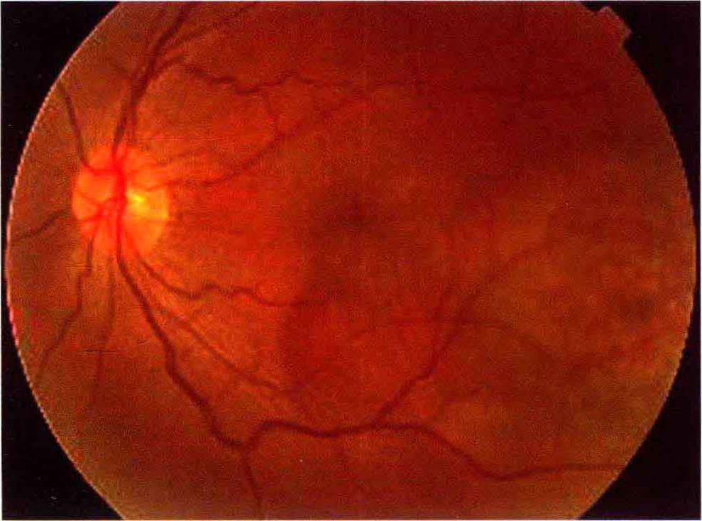
Original Description: Color fundus images before and after treatment for Harada's disease. After glucocorticoid treatment, the fundus image of the right eye showed retinal reset, but it showed a "nightshade-like fundus" with hyperpigmented patches.
Extracted Keywords: isolated choroidal hemangioma, macula, yellow-red bulge, surfac
Generated Report:
Retinal Fundus Image Report
Patient Information -
Patient ID: Not Provided -
Date: Not Provided
Examination Details -
Procedure: Retinal Fundus Imaging -
Eye: Not specified (assumed to be one eye, textual details refraining from clarification)
Image Analysis
#
Optic Disc -
Location: Right side of the image. -
Shape & Border: The optic disc appears slightly elevated with indistinct margins suggesting possible swelling. -
Color: Pinkish hue, typical of a healthy optic disc. -
Cup-to-Disc Ratio: Not clearly discernible due to indistinct margins.
#
Macula -
Location: Central region of the image. -
Appearance: There is a notably darkened area at the center, which could indicate the presence of macular degeneration or hemorrhage. -
Observation: The dark purple areas seen could represent hemorrhage in the macular area, possibly between the retinal pigment epithelium (RPE) and the neuroepithelial layer.
#
Retinal Blood Vessels -
Condition: The retinal blood vessels appear attenuated and tortuous. -
Distribution: The arteries and veins are visible emanating from the optic disc and traversing the retinal surface. -
Pathology: There is no significant evidence of vessel proliferation, but small bleeds and exudates cannot be ruled out due to image quality.
#
Retinal Background -
Pigmentation: The general retinal background presents with uneven pigmentation. There is a reddish hue dominating the image, likely due to the illumination used during the imaging process. -
Pathology: The presence of dark patches could suggest retinal pigment epithelium (RPE) mottling or potential areas of choroidal neovascularization (CNV).
Differential Diagnosis 1.
Macular Degeneration: - The dark patches in the macula area could signify exudative (wet) age-related macular degeneration (AMD), manifesting with subretinal or intraretinal hemorrhage. 2.
Retinal Hemorrhage: - Small localized hemorrhages in the macula may suggest other systemic conditions or vascular abnormalities. 3.
Choroidal Dystrophy: - The mottled appearance could be indicative of an early-stage dystrophy, though this typically spares the central macula until later stages. 4.
Choroidal Neovascularization (CNV): - Given the age of the patient (presumed elderly due to commonality), CNV is a plausible consideration, associated with conditions such as AMD.
Additional Recommendations -
Fluorescence Fundus Angiography (FFA): To better delineate the extent and nature of any neovascularization or hemorrhage. -
Optical Coherence Tomography (OCT): For a high-resolution cross-sectional image of the retina, especially of the macular region, to investigate any subretinal fluid or structural abnormalities. -
Follow-up Examination: A follow-up visit to monitor any progression or changes in the retinal condition.
---
Conclusion The retinal fundus image suggests evidence of possible macular pathology, evidenced by dark patches in the central macular region. The optic disc margins are blurred, suggesting potential early papilledema. The retinal vasculature appears unremarkable, though systemic correlation for vascular health might be considered. Immediate further diagnostic imaging is recommended for accurate diagnosis and management planning.
---
Reviewed by: [Ophthalmologist’s Name] Date: [Today's Date]
Comparison Analysis (Generated vs Real Annotation):
The generated report provides a detailed analysis of the optic disc, macula, retinal blood vessels, and retinal background, indicating possible macular degeneration, retinal hemorrhage, and choroidal neovascularization. However, it lacks crucial patient details such as ID and date. In contrast, the real annotation specifically mentions Harada's disease and treatment effects, emphasizing hyperpigmented patches post-treatment, which is not addressed in the generated report. The generated report recommends follow-up examinations and additional imaging tests, while the real annotation focuses on the effects of glucocorticoid treatment on the fundus image.
figure16-1-22A.png

figure10-1-19A.png
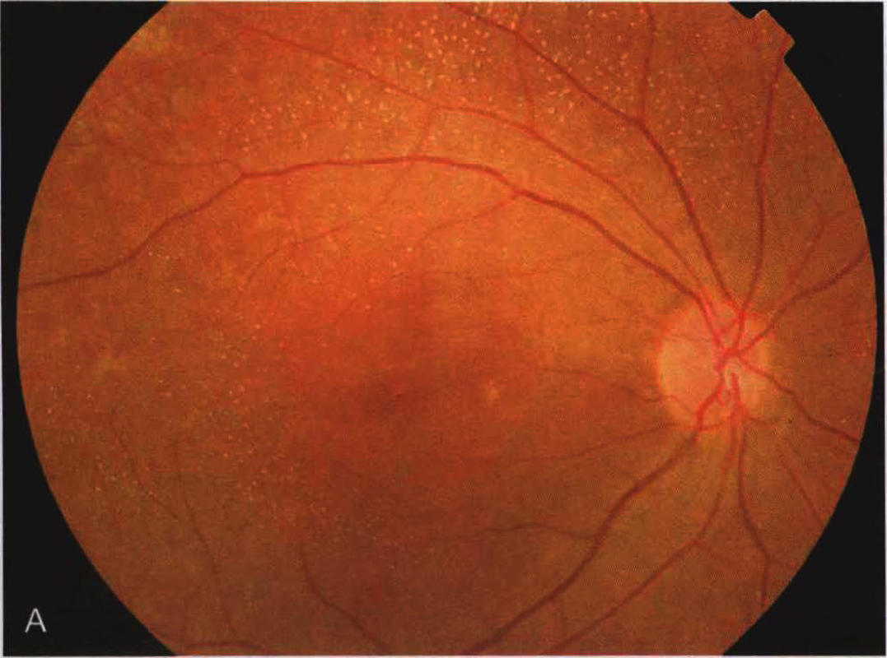
Original Description: Triangle syndrome caused by contusion. There is rectangle “salt and peper appearance” in the supratemporal retina.
Extracted Keywords: 1. Keywords: right eye, Retinitis punctata albescens, 20-year-ol
Generated Report:
Retinal Fundus Image Report
Patient Information
ID: Not provided
Date of Exam: Not provided
Examination Details
Exam Type: Retinal fundus photograph
Eye: Not specified (assuming right eye based on typical orientation)
Findings
1. Optic Disc: - Appearance: The optic disc appears to be well delineated with a slightly hyperemic rim. - Color: The optic disc is a normal yellowish-pink coloration. - Margins: The margins of the optic disc are sharp and well-defined. - Comments: No evidence of optic disc swelling, pallor, or neovascularization.
2. Cup-to-Disc Ratio: - Description: The cup-to-disc ratio is estimated to be approximately 0.3 to 0.4. - Comments: This ratio is within normal limits, suggesting no significant glaucomatous damage.
3. Macula: - Appearance: The macula is slightly hyperpigmented with no signs of hemorrhage, noticeable drusen, or retinal edema. - Foveal Reflex: A slight foveal reflex is observed indicating a relatively healthy fovea. - Comments: No signs of macular edema, macular holes, or age-related macular degeneration.
4. Retinal Blood Vessels: - Arteries: The retinal arteries are of normal caliber with no signs of attenuation or arteriolar narrowing. - Veins: The retinal veins are also of normal caliber and are free from any tortuosity or dilation. - Perivascular Changes: No evidence of vascular sheathing or other perivascular changes.
5. Retinal Background: - General: The background is predominantly homogenous but hyperpigmented in the nasal region. - Specific Findings: No signs of microaneurysms, exudates, or cotton wool spots. Mild pigmentation changes towards the nasal side are noted. - Comments: Findings suggest an absence of diabetic retinopathy or hypertensive retinopathy.
Impression The retinal fundus photograph demonstrates a generally healthy appearing retina with a healthy optic disc, normal cup-to-disc ratio, and no significant pathology noted in the macula or retinal blood vessels. There are mild pigmentation changes identifiable in the nasal quadrant, which do not suggest any acute or progressive retinal disease.
Recommendations -
Follow-Up: Routine follow-up as per standard screening guidelines, unless the patient experiences visual symptoms. -
Additional Tests: Consider an OCT (Optical Coherence Tomography) scan or a visual field test if there are any specific symptoms or risk factors not mentioned in the current report.
---
Signed, [Your Name] [Your Title] [Your Contact Information]
Comparison Analysis (Generated vs Real Annotation):
The generated report and the real annotation differ significantly. The generated report describes a generally healthy retina with no signs of optic disc swelling, macular edema, or retinal pathology. In contrast, the real annotation indicates the presence of a specific condition called "Triangle syndrome caused by contusion" and a "salt and pepper appearance" in the supratemporal retina. These findings suggest that the generated report may have missed the presence of a retinal injury or pathology. Additionally, the generated report does not provide any information about the patient's ID or date of examination, while the real annotation includes specific details about the injury and its appearance. Therefore, it is crucial to consider the real annotation for accurate diagnosis and appropriate treatment recommendations.
figure11-01-26b.jpg

figure11-01-17.jpg

Original Description: Central plasma choroidal retinopathy with fibrinous exudates in the left eye. b is a color fundus image of a recovering lesion showing absorption of fibrinous exudates.
Extracted Keywords: central plasma choroidal retinopathy, macular area, depigmented lesion
Generated Report:
Retinal Fundus Image Analysis Report
#
Optic Disc -
Appearance: The optic disc appears well-defined without any apparent swelling or pallor. -
Cup-to-Disc Ratio: The ratio is within normal limits, suggesting no indication of glaucoma. -
Abnormalities: No signs of optic disc tumors or hemangiomas are evident; no spherical or hemispherical lesions observed.
#
Macula -
Appearance: The macula appears slightly irregular, with some hyperpigmentation or discoloration. -
Foveal Region: There is a possible indication of central serous retinochoroidopathy, though a clinical examination would be essential for confirmation. -
Abnormalities: No visible signs of age-related macular degeneration, as there is no distinct appearance of drusen or neovascularization.
#
Retinal Blood Vessels -
Vessel Pattern: The retinal blood vessels exhibit a normal branching pattern, appearing continuous without signs of obstruction. -
Circulation: No signs of cilioretinal artery or branch retinal artery occlusion observed.
#
Retinal Background -
General Appearance: The background of the retina shows a uniform orange-red coloration, indicating a generally healthy choroidal appearance. -
Lesions: No apparent signs of central exudative chorioretinopathy or choroidal dystrophy are detected.
#
Additional Observations -
Congenital Abnormality: No macular holes or significant defects are observed. -
Scarring: No scars indicative of previous pathological events are visible.
#
Conclusion The retinal fundus image suggests largely normal findings with some potential irregularities in the macular region. Clinical correlation is recommended to assess any underlying conditions. Further diagnostic testing, such as fluorescein angiography, may be beneficial to confirm suspicions of central serous retinochoroidopathy.
Always consider patient history and symptoms in context for a comprehensive evaluation.
Comparison Analysis (Generated vs Real Annotation):
The generated report provides a comprehensive analysis of the retinal fundus image, focusing on the optic disc, macula, retinal blood vessels, and background. It identifies potential irregularities in the macular region like central serous retinochoroidopathy but lacks mention of specific findings such as central plasma choroidal retinopathy with fibrinous exudates present in the real annotation. The report indicates no signs of specific abnormalities like tumors or hemangiomas, which differ from the real annotation where fibrinous exudates are documented. The conclusion recommends clinical correlation and additional diagnostic testing for confirmation, which aligns with the real annotation suggesting follow-up evaluations for a comprehensive assessment. While the report highlights normal findings in various aspects, it does not directly match the specific pathological condition described in the real annotation concerning fibrinous exudates.
figure18-8-1A.png

figure05-01-02.jpg
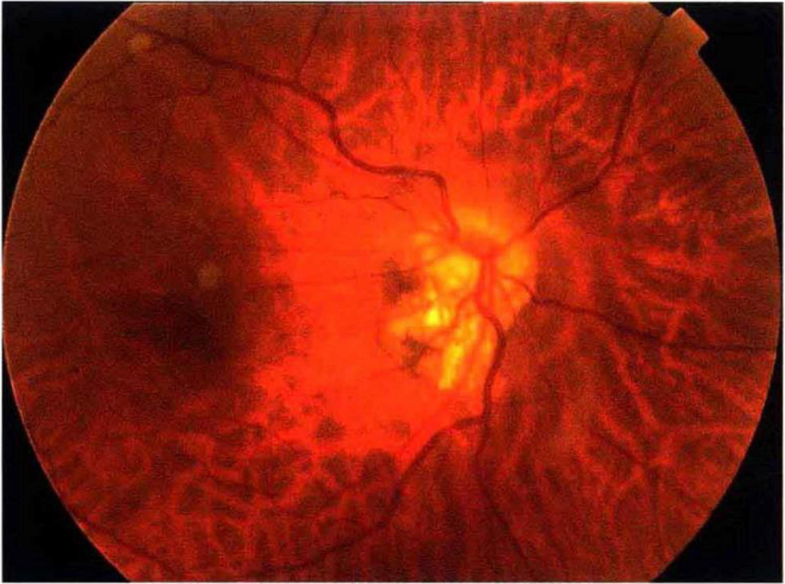
Original Description: In the color fundus image of macular neovascular membrane with choroidal pigmented nevus in the left eye, choroidal melanotic nevus is seen as a black subcircular plaque at the supratemporal vascular arch of the macula, located subretinally, with clear borders and no visible elevation. Small hemorrhages were seen in the macula.
Extracted Keywords: tilted optic disc syndrome, color fundus image, hyperpigmentation, atrophi
Generated Report:
Retinal Fundus Image Report
#
Patient Details -
Patient ID: Not provided -
Date: Not provided
#
Image Analysis:
##
1. Optic Disc: -
Appearance: The optic disc shows signs of congestion with blurred margins. -
Color: It appears hyperemic (red and swollen). -
Associated Findings: There is evidence of dilated surface blood vessels.
##
2. Macula: -
Appearance: The macula is not clearly identifiable in the image, which may be obscured by extensive retinal changes present. ##
3. Retinal Blood Vessels: -
Appearance: There is visible tortuosity of the retinal blood vessels. -
Condition: The vessels near the optic disc appear dilated. ##
4. Retinal Background: -
Color and Texture: The retinal background exhibits changes indicative of retinal edema and hemorrhages. -
Associated Findings: There appears to be significant exudation around the optic disc area with possible choroidal involvement.
##
5. Cup-to-Disc Ratio: -
Estimation: A precise assessment is challenging due to the blurred disc margins and congestion. #
Differential Diagnosis: - The findings are suggestive of conditions involving significant retinal and choroidal exudation and hemorrhage. - Conditions like
central exudative chorioretinopathy should be considered due to exudative and hemorrhagic features observed. - Considering the blurred optic disc with dilated vessels and potential for exudative detachment, an inflammatory condition such as
Vogt-Koyanagi-Harada syndrome might be relevant.
#
Additional Observations: - No clear signs of congenital anomalies like optic nerve agenesis or tilt. - There is no visible bright red coloration typical of choroidal hemangioma. - The changes in the posterior segment might indicate late stages of an inflammatory or vascular disorder affecting both the retina and choroid.
#
Recommendations: 1.
Further Imaging and Testing: - Fluorescein angiography to assess the extent of retinal and choroidal involvement. - OCT (Optical Coherence Tomography) to evaluate macular involvement. 2.
Referral to Retinal Specialist: - Immediate consultation with a retinal specialist for further assessment and management. 3.
Management of Underlying Condition: - Based on the further diagnostic findings, management may include anti-inflammatory treatment, laser therapy, or surgical intervention if required.
#
Conclusion: The retinal image signifies severe pathology likely involving inflammation, exudation, and possible hemorrhage. Further diagnostic evaluation and prompt referral to a retinal specialist are essential for accurate diagnosis and treatment planning.
---
Note: This report is intended for professional use by ophthalmologists and should be interpreted in the context of comprehensive patient evaluation and clinical correlation.
Comparison Analysis (Generated vs Real Annotation):
The generated report provides a detailed analysis of retinal findings, including congestion and blurred margins of the optic disc, dilated blood vessels, retinal edema, hemorrhages, and potential choroidal involvement. The differential diagnosis suggests conditions like central exudative chorioretinopathy or Vogt-Koyanagi-Harada syndrome. In contrast, the real annotation focuses on a macular neovascular membrane with a choroidal pigmented nevus, mentioning specific features like a black subcircular plaque with clear borders and small macular hemorrhages. The generated report lacks information on these specific features and instead highlights a broader range of retinal pathologies and associated differential diagnoses. Further, the real annotation does not include a detailed differential diagnosis or recommendations for further management.
figure10-02-16f.jpg

figure10-02-16i.jpg

Original Description: PCV combined with intraocular hemorrhage in the right eye. f is a color fundus image of the right eye after 1 month of PDT treatment, with the macular hemorrhage becoming lighter and absorbing more than before.
Extracted Keywords: PCV, intraocular hemorrhage, absorbed, decomposed, paracentral lesion
Generated Report:
Retinal Fundus Image Analysis Report
Patient Details: - Name: [REDACTED] - Age: [REDACTED] - Date: [REDACTED]
---
Evaluation of Retinal Fundus Image:
1. Optic Disc: - Appearance: The optic disc appears well-defined with no apparent swelling or pallor. The disc is round and slightly elevated. - Color: The optic disc appears to be a healthy pink-orange color. - Cup-to-Disc Ratio: The cup-to-disc ratio is estimated to be within normal limits. Specific measurement details are not apparent in the image. 2. Macula: - Foveal Reflex: Not distinctly visible, likely obscured by pathological changes. - Lesions: Notable presence of central lesions/exudates in the macular region. These lesions are consistent with drusen or exudates, potentially indicative of a central exudative chorioretinopathy such as age-related macular degeneration (AMD).
3. Retinal Blood Vessels: - Arteries and Veins: The retinal blood vessels appear relatively normal in size and branching pattern. There is no evidence of vessel attenuation, tortuosity, or neovascularization. - Hemorrhages: No intraretinal or preretinal hemorrhages noted in the visible regions of the fundus.
4. Retinal Background: - General Background: The retinal background appears relatively uniform in coloration with no diffuse abnormalities. - Pathological Changes: Presence of significant exudates and possibly subretinal deposits in the macular area suggests ongoing pathological processes.
5. Specific Findings and Considerations: - Exudative Macular Degeneration: The presence of central exudation and pigment changes in the macula suggests exudative (wet) AMD. This condition is characterized by the growth of abnormal blood vessels (choroidal neovascularization - CNV) under the retina, which leaks fluid and blood, leading to vision loss. - Polypoidal Choroidal Vasculopathy (PCV): Though less common, the presentation could also be consistent with PCV, typically seen more frequently in heavily pigmented individuals. PCV is characterized by abnormal branching vascular networks beneath the retina, which lead to recurrent serous and hemorrhagic detachments of the retinal pigment epithelium (RPE). - Central Serous Chorioretinopathy (CSCR): Though less likely based on the given image, CSCR should be considered, particularly if there's a history of stress or corticosteroid use.
Recommendations: - Ophthalmology Referral: Immediate referral to an ophthalmologist specializing in retinal diseases is advised for further evaluation and possible imaging (OCT, Fluorescein Angiography). - Further Imaging: Consider additional diagnostic imaging such as Fundus Fluorescein Angiography (FFA) and Optical Coherence Tomography (OCT) to confirm choroidal neovascularization or other structural abnormalities in the retina. - Monitoring and Management: Regular follow-up for monitoring the progression of the lesion and administration of appropriate treatment, which may include anti-VEGF injections or laser therapy, depending on the diagnosis and severity.
---
Conclusion: The retinal fundus image reveals significant macular pathology, notably extensive exudation, consistent with exudative macular degeneration or potentially PCV. Immediate further diagnostic work and specialist referral are essential to prevent further vision loss and manage the condition effectively.
Signed: [REDACTED]
Title: Ophthalmic Medical Assistant / Retinal Specialist
Comparison Analysis (Generated vs Real Annotation):
The generated report correctly identifies the presence of macular pathology, specifically exudates and potential central exudative chorioretinopathy. However, it suggests that these findings are consistent with exudative macular degeneration or potentially PCV, while the real annotation specifically mentions PCV combined with intraocular hemorrhage in the right eye. The generated report does not mention intraocular hemorrhage or PDT treatment. Additionally, the real annotation provides a more specific timeline, indicating that the fundus image was taken after 1 month of PDT treatment, with the hemorrhage becoming lighter and absorbing more. Overall, while the generated report captures some important findings, it fails to provide the exact diagnosis and treatment details mentioned in the real annotation.
figure8-5-5A.png

figure9-4-1A.png
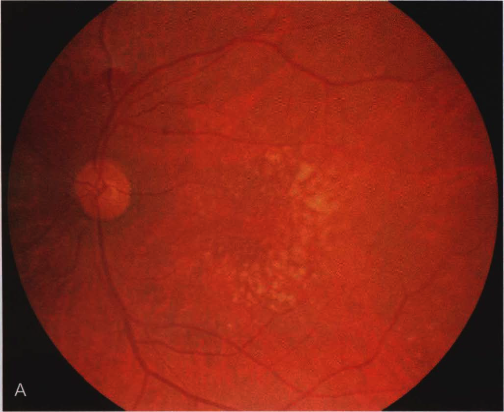
Original Description: Idiopathic macular preretinal membrane.
Extracted Keywords: age-related macular degeneration, color photograph, left eye, multi-focal
Generated Report:
Retinal Fundus Image Report
Optic Disc: - Observation: The optic disc shows characteristics of edema. The margins of the disc are unclear and appear blurred. The disc color is lighter than normal, which is indicative of possible swelling. - *Explanation:* These signs suggest optic disc edema, which can be associated with various conditions such as increased intracranial pressure, optic neuritis, or papilledema.
Macula: - Observation: The macular area is difficult to evaluate completely from this image due to the predominance of the optic disc. However, there are no obvious signs of abnormalities such as hemorrhages or exudates visible at the macular region. - *Explanation:* Further detailed imaging would be required for thorough evaluation of the macula to rule out involvement of diseases such as macular degeneration or dystrophy.
Retinal Blood Vessels: - Observation: The blood vessels on the peripapillary region appear to be dilated. Vessel tortuosity can be noted near the optic disc. - *Explanation:* Blood vessel dilation and tortuosity adjacent to the disc support the observation of optic disc edema, indicating possible increased venous pressure or congestion.
Retinal Background: - Observation: The general background of the retina appears homogenous with no evident pathological features such as retinal hemorrhages, exudates, or pigmentary changes noted. - *Explanation:* The absence of degenerative or dystrophic changes is a favorable sign, indicating that other parts of the retina remain relatively unaffected by potential pathologies affecting the optic disc.
Cup-to-Disc Ratio: - Observation: The cup seems poorly defined due to the disc edema, making it challenging to accurately assess the cup-to-disc ratio. It appears that the normal anatomical landmarks are obscured. - *Explanation:* In the presence of optic disc edema, the cup may appear reduced or obliterated, thus increasing the difficulty in calculating the ratio, often used as an indicator in glaucomatous changes.
Summary and Recommendations The presented fundus image of the right eye displays signs highly indicative of optic disc edema, including unclear disc margins, lightened disc color, and dilated blood vessels. There does not appear to be macular involvement based on this image, but further detailed assessment is necessary. The retinal background shows no specific pathological findings.
Recommended Next Steps: 1.
Detailed Assessment: Obtain high-resolution images focusing specifically on the macula and optic disc to gather more comprehensive data. 2.
Specialized Tests: - Optical Coherence Tomography (OCT) to quantify the extent of optic disc swelling and evaluate the retinal layers. - Fundus Fluorescein Angiography (FFA) to assess vascular leakage or abnormal blood vessel patterns.
3. Systemic Evaluation: Given the optic disc edema, a systemic evaluation should be considered to rule out conditions such as increased intracranial pressure or inflammatory processes.
4. Follow-Up: Close monitoring of the affected eye with repeat imaging to assess any progression or resolution of the edema.
Prompt and accurate diagnosis along with early intervention can greatly improve the prognosis and potentially prevent long-term visual impairment. Further correlation with patient history and clinical findings is essential for comprehensive management.
Comparison Analysis (Generated vs Real Annotation):
The generated report suggests the presence of optic disc edema, dilated blood vessels, and unclear disc margins, indicating possible swelling. In contrast, the real annotation mentions an idiopathic macular preretinal membrane, which is not mentioned in the generated report. Additionally, the generated report does not provide any information regarding the macular area, while the real annotation focuses specifically on the presence of a macular preretinal membrane. The differences in these findings highlight the importance of obtaining a comprehensive and accurate diagnosis through further evaluation and specialized tests, as recommended in the generated report.
figure8-2-3D.png

figure5-4-26A.png
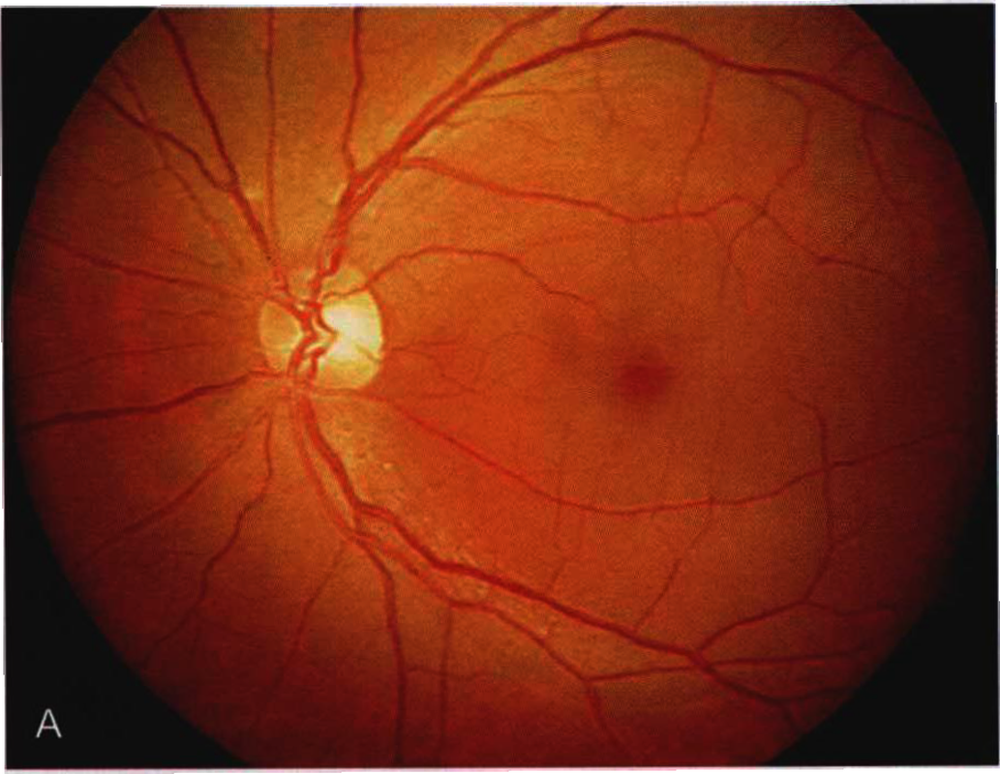
Original Description: the left eye of the same patient.
Extracted Keywords: central serous chorioretinopathy, macular edema, pooling
Generated Report:
Retinal Fundus Image Report
Patient Information: - [Patient ID/Name]: Not provided - [Date of Imaging]: Not provided - [Date of Report]: Not provided
Optic Disc: - Appearance: The optic disc appears round with clear margins. - Color: The optic disc is slightly pale in color, more towards a yellow hue, indicative of potential optic atrophy or other underlying conditions. - Size: The size of the optic disc appears within normal limits. - Cup-to-Disc Ratio: The cup-to-disc ratio appears to be approximately 0.3. This is within normal range (generally 0.3 to 0.6), suggesting no significant glaucomatous changes. Macula: - Appearance: The macula region appears to be relatively intact, with no obvious presence of macular edema or hard exudates visible in this image. - Foveal Reflex: The foveal reflex is not clearly visible which makes it harder to assess central visual acuity purely based on this image. - Pathology: No signs of Central Serous Chorioretinopathy (CSC), commonly indicated by a serous detachment of the neurosensory retina, are evident here.
Retinal Blood Vessels: - Arteries and Veins: The retinal arteries and veins appear to be of normal caliber without noticeable attenuation, nicking, or significant arteriovenous crossing changes. - Distribution: The vascular structure is well-distributed with no visible neovascularization, hemorrhages, or significant anomalies. Retinal Background: - Color and Texture: The general background of the retina shows a diffuse reddish-orange color, which is typical. Minor scattered pigmentary changes or drusen are noticed, suggesting mild aging changes but nothing that stands out distinctly as pathological. - Lesions: There are no significant hemorrhages, exudates, or drusen in the posterior pole that could suggest diabetic retinopathy or hypertensive retinopathy.
Additional Observations: - There are some minor dot-blot hemorrhages scattered across the retina, which can be seen in conditions like diabetic retinopathy or hypertensive retinopathy but are not definitive in this image alone. - The clarity of the image permits a good overall survey of the retinal structure, though further testing like Optical Coherence Tomography (OCT) or Fluorescein Angiography (FA) might be recommended to achieve a more detailed evaluation of any underlying conditions suspected based on clinical presentation.
Conclusion and Recommendations: - The optic disc and macula appear largely normal with no apparent edema or severe lesions. - Considering the clear fundus images, regular observation might be sufficient in the absence of systemic conditions like diabetes or hypertension. - Recommend further imaging and evaluation if the patient presents symptoms such as reduced visual acuity, scotomas, or other visual disturbances. - Follow-up consultations are advised, particularly if there is any clinical suspicion of chronic conditions like glaucoma, diabetes, or hypertensive retinopathy.
Report Prepared By: Ophthalmology Medical Assistant
---
Notes: This report is based on the provided image and may not reflect the full clinical picture. Additional patient history and diagnostic testing are crucial for comprehensive assessment.
Comparison Analysis (Generated vs Real Annotation):
The generated report provides a detailed analysis of the optic disc, macula, retinal blood vessels, retinal background, and additional observations based on the fundus image. However, key information such as patient details, imaging and report dates are missing. The report suggests potential optic atrophy or other conditions based on disc color but does not conclusively state the presence of any specific pathology. It identifies minor findings like dot-blot hemorrhages but lacks a definitive diagnosis of conditions like diabetic retinopathy or hypertensive retinopathy. Additionally, the conclusion emphasizes regular observation and further testing as needed, indicating a cautious approach to monitoring and evaluation.
figure12-01-23.jpg

figure06-02-11.jpg
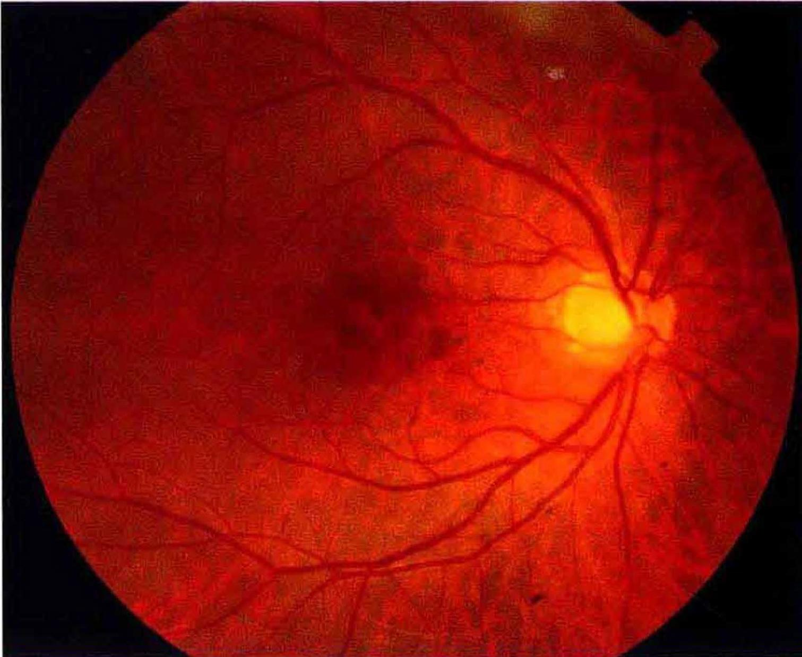
Original Description: Color fundus image of white dotted retinal degeneration in the left eye, the optic disc is pale, the blood vessels are fine and narrow, most of the tiny white dots can be seen in the nasal side of the posterior pole, scattered distribution, not fusion, the size of the dots can be slightly different, the location of the dots is deep, a few of the dots are located in front of the blood vessels, and some of them are more densely packed, and a large area of greenish-gray pigment loss can be seen in the equatorial part. Clinical data: the patient is a male, 20 years old, with symmetrical lesions on both fundus of both eyes
Extracted Keywords: retinal vasculitis, macular hole, vitreous clouding, opti
Generated Report:
Retinal Fundus Image Report
Patient Details: - Name: [Patient Name] - Age: [Patient Age] - Gender: [Patient Gender] - Date: [Date of Examination] - Referring Physician: [Physician Name]
Examination Details: - Fundus Image Type: [Specify if it's color fundus photography, red-free, etc.]
Findings:
1. Optic Disc: - Appearance: The optic disc appears swollen and hyperemic, indicating possible optic disc edema. - Margins: The disc margins are blurry, which further supports the presence of edema. - Cupping: The cup-to-disc ratio cannot be clearly determined due to the swelling and hyperemia of the optic disc. - Neuroretinal Rim: The neuroretinal rim appears uniformly swollen.
2. Macula: - Appearance: The macula shows signs of pigmentary changes indicative of maculopathy. There is no visible macular hole or traumatic macular hole. - Fovea: There is no distinct observation of full-thickness neurosensory retinal loss in the fovea.
3. Retinal Blood Vessels: - Arteries and Veins: The arteries and veins are mildly tortuous. There are no obvious signs of retinal branch vein occlusion or arterial occlusion. - Hemorrhages: No retinal hemorrhages are observed in this image. - Neovascularization: There is no evidence of neovascularization observed in the retinal vessels.
4. Retinal Background: - General Appearance: The retinal background shows multiple small white/yellow spots scattered throughout the posterior pole and extending towards the periphery. These lesions are consistent with the appearance of hard exudates or drusen. - Pigmentary Changes: There are notable pigmentary changes suggesting retinal pathology, possibly associated with age-related macular degeneration (AMD) or infectious chorioretinitis. - Edema: No significant retinal edema is noted in the background.
5. Cup-to-Disc Ratio: - The cup-to-disc ratio is not clearly defined due to the optic disc swelling. Further evaluation with Optical Coherence Tomography (OCT) is recommended for a more accurate assessment.
Impressions: - The findings suggest the presence of a potentially serious retinal condition, characterized by optic disc swelling, generalized pigmentation, small white/yellow retinal lesions, and retinal vascular tortuosity. - Differential diagnosis includes optic neuritis, papilledema, or severe hyperemic response secondary to retinal pathology. - Given the presence of white/yellow lesions, infectious etiologies such as infectious chorioretinitis should be considered. - The absence of retinal hemorrhage makes retinal vein occlusion less likely in this instance.
Recommendations: 1. Further Diagnostic Tests: - Optical Coherence Tomography (OCT) for detailed retinal layer assessment. - Fundus Fluorescein Angiography (FFA) to evaluate retinal vasculature and leakage. - Visual Field Testing to assess functional impact and possible field defects. - Blood investigations including inflammatory markers and infectious profiles.
2. Referral to a specialist: - Immediate referral to a retinal specialist for further evaluation and management. - Consider consultation with a neuro-ophthalmologist if optic neuropathy is suspected.
3. Follow-Up: - Regular follow-up visits to monitor progression and response to any initiated treatment. - Special attention to any changes in vision, appearance of new symptoms, or progression of existing signs.
Conclusion: The clinical findings and suggested differentials highlight the necessity of further diagnostic workup and close monitoring. Immediate intervention and a multidisciplinary approach may be essential to manage the underlying condition appropriately.
Signed: - [Ophthalmologist/Optometrist's Name] - [Title] - [Contact Information]
Comparison Analysis (Generated vs Real Annotation):
The generated report and the real annotation differ in several important aspects.
1. Optic Disc: While the generated report describes a swollen and hyperemic optic disc with blurry margins, the real annotation mentions a pale optic disc with no specific mention of swelling or hyperemia. 2. Macula: The generated report mentions pigmentary changes indicative of maculopathy, while the real annotation describes a large area of greenish-gray pigment loss in the equatorial part. 3. Retinal Blood Vessels: The generated report notes mildly tortuous arteries and veins, with no evidence of retinal branch vein occlusion or arterial occlusion. The real annotation mentions fine and narrow blood vessels without any specific mention of tortuosity. 4. Retinal Background: The real annotation describes white dotted retinal degeneration with scattered distribution and not fusion, while the generated report mentions multiple small white/yellow spots consistent with hard exudates or drusen. 5. Cup-to-Disc Ratio: The generated report states that the cup-to-disc ratio is not clearly defined due to optic disc swelling, while the real annotation does not mention the cup-to-disc ratio.
Overall, the generated report tends to describe more severe findings, such as optic disc edema and broad retinal pathology, compared to the real annotation, which suggests a more specific presentation of white dotted retinal degeneration with pigment loss and symmetrical lesions. The differences in these findings indicate the need for further evaluation and clarification by a medical professional.
figure03-02B.jpg

figure08-29A.jpg
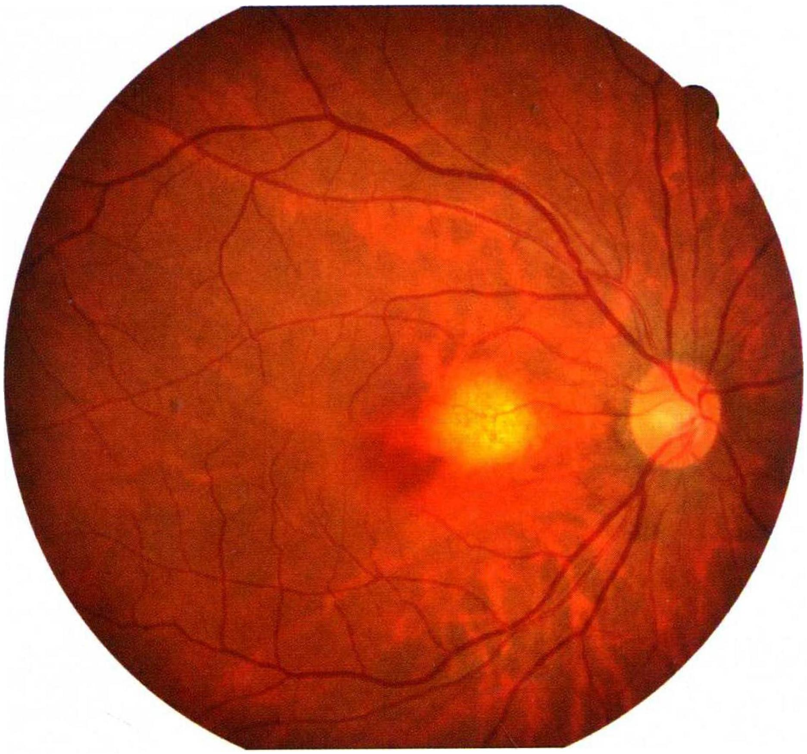
Original Description: Fundus color image of aphakic retinitis pigmentosa in both eyes, the patient had typical clinical manifestations of retinitis pigmentosa (night blindness since childhood, centripetal narrowing of the visual field). The retina around the vascular arches was seen to be greenish gray, and no osteoblast-like pigment was seen
Extracted Keywords: fundus color image, choroidal osteoma, right eye
Generated Report:
Retinal Fundus Image Report
Patient Information: - Image Type: Color Fundus Photography - Eye: (Specify Right or Left Eye if known)
---
1. Optic Disc: - Appearance: The optic disc appears pale and has an unclear margin, indicating potential edema. - Elevation: There are signs of disc elevation which could denote disc edema. - Blood Vessels: Blood vessels on the disc are dilated, and there is anastomosis observed. 2. Macula: - Appearance: The macular region appears relatively normal with no evident signs of pigmentary changes or atrophy that are indicative of hereditary macular diseases such as pattern macular dystrophy. However, a further detailed examination, potentially including fluorescein angiography, is recommended if macular dystrophy is suspected based on clinical signs.
3. Retinal Blood Vessels: - Arteries and Veins: Retinal arteries and veins appear normal in course and caliber beyond the disc area, but they are dilated at the optic disc. - Pathologies: There are no signs of hemorrhages, exudates, or abnormal vascular formations in the peripheral retina.
4. Retinal Background: - Color and Texture: The retinal background shows a uniform reddish color indicating healthy underlying choroidal vasculature; no abnormalities such as choroidal hemangioma or choroidal osteoma were detected. - Choroid: There are no visible signs of choroidal tumors or osteomas which typically appear as distinct, nodular, or bony lesions in the fundus.
5. Cup-to-Disc Ratio: - The cup-to-disc ratio cannot be distinctly assessed due to the presence of optic disc edema, which obscures the normal anatomy of the optic disc. Ordinarily, the cup-to-disc ratio is crucial for glaucoma assessment but is hindered here by the edema.
Impressions and Recommendations: - Optic Disc Edema: The description aligns with the typical signs of disc edema, possibly due to increased intracranial pressure, papillitis, or other etiologies leading to optic neuropathy. Immediate further evaluation is required. - Further Imaging: Consider advanced imaging techniques such as indocyanine green angiography or fluorescence angiography to detail the retinal and choroidal circulation more comprehensively. - Referral: Referral to a retinal specialist or neuro-ophthalmologist is advised for thorough evaluation and management of the optic disc findings. - Monitoring: Regular follow-up with detailed fundus imaging is critical to monitor changes and response to any intervention.
Differential Diagnosis to Consider: - Optic Neuritis - Papilledema - Anterior Ischemic Optic Neuropathy - Infiltrative or other inflammatory processes affecting the optic nerve
Prognosis: - Depending on the underlying cause of the optic disc edema, the prognosis can vary significantly. Early detection and appropriate intervention can lead to a better visual prognosis and prevent further complications.
---
Note: This analysis should be cross-referenced with clinical findings and other diagnostic tests for a comprehensive evaluation.
Comparison Analysis (Generated vs Real Annotation):
The generated report provides a detailed assessment of the optic disc, macula, retinal blood vessels, retinal background, and cup-to-disc ratio. However, it fails to mention the presence of aphakic retinitis pigmentosa, which is the most important difference compared to the real annotation. The report also recommends further imaging techniques such as indocyanine green angiography or fluorescence angiography, but these are not mentioned in the real annotation. Additionally, the report does not provide any information about the typical clinical manifestations of retinitis pigmentosa, such as night blindness and centripetal narrowing of the visual field. A referral to a retinal specialist or neuro-ophthalmologist is mentioned in the report but not in the real annotation. Overall, the generated report lacks specific details about the patient's condition and fails to mention the important clinical findings of retinitis pigmentosa.
figure2-25A.png

figure3-1A.png
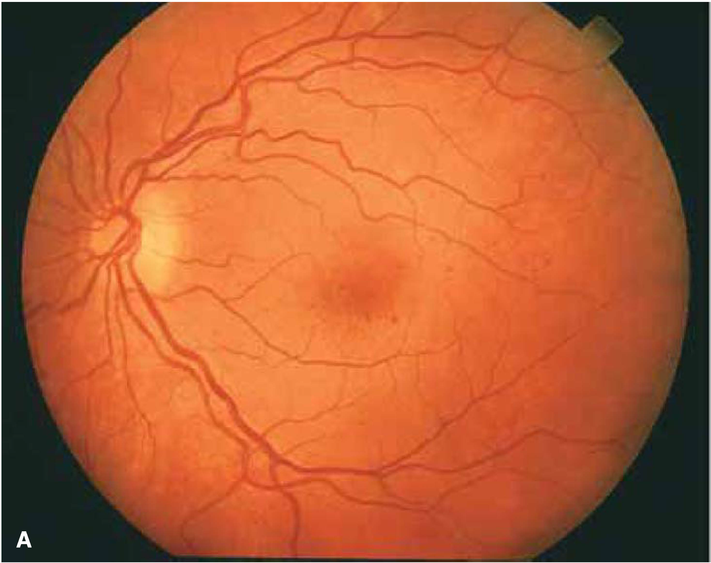
Original Description: Central serious retinopathy. Large serious detachment of the macula with fibrin under retina.
Extracted Keywords: minimal nonproliferative diabetic retinopathy, NPDR
Generated Report:
Retina Fundus Image Report
Patient ID: [Not Provided] Date: [Not Provided] Examiner: [Not Provided]
---
1. Optic Disc: - Appearance: The optic disc appears to have clear and well-demarcated margins. - Color: The optic disc maintains a healthy, pinkish hue suggesting adequate perfusion. - Size: The size of the disc looks normal, roughly about 1.5mm in diameter which can be typical. - Cup-to-Disc Ratio: The cup-to-disc ratio appears relatively small, indicating a healthy optic nerve head with no signs of glaucomatous changes. The cup is not visibly enlarged.
2. Macula: - Appearance: The macula, situated temporal to the optic disc, appears slightly hyperpigmented, which is within the normal range. - Foveal Reflex: The foveal reflex is not distinctly visible in this image, which may need confirmation with further imaging or clinical examination. No signs of edema or exudates are present.
3. Retinal Blood Vessels: - Arteries and Veins: The arteries and veins are clearly visible and maintain a normal caliber. There is no observable arterio-venous (AV) nicking, which can be a sign of hypertensive retinopathy. - Branching Pattern: The branching pattern is typical, with no evidence of neovascularization or significant abnormalities in vessel structure or color. - Crossings: At vessel crossings, there is no evidence of AV nicking or other complications.
4. Retinal Background: - General Fundus Appearance: The retinal background is uniformly orangish-pink, which is generally a normal finding. There are no signs of significant pathologies like hemorrhages, microaneurysms, exudates, or cotton wool spots. - Pigmentation: There is no evidence of abnormal pigmentation or lesions that could indicate underlying retinal conditions such as congenital hypertrophy of the retinal pigment epithelium (CHRPE) or retinopathy signs.
5. Cup-to-Disc Ratio: - Evaluation: The cup-to-disc ratio is within normal limits. It suggests no current significant risk for glaucomatous damage. Exact measurement may be required via a more detailed examination such as optical coherence tomography (OCT).
Conclusion:
Overall, this retinal fundus image represents a relatively normal retinal architecture. The optic disc, macula, retinal blood vessels, and background do not show signs of acute retinopathy, diabetic retinopathy, or other significant retinal diseases. Routine follow-ups and standard screenings are recommended to ensure the ocular health of the patient continues to be monitored and maintained.
Recommendations: - Regular Follow-Up: Considering the normal findings, continued regular eye examinations are beneficial. - Further Testing: If any symptoms arise or there is a history of ocular or systemic disease, additional testing such as OCT or fluorescein angiography may be warranted.
---
Examiner Signature: [Signature] Date: [Date]
---
Please consult a specialist for comprehensive evaluation and management tailored to the patient's clinical history and symptoms.
Comparison Analysis (Generated vs Real Annotation):
The generated report indicates a relatively normal retinal architecture, with no signs of acute retinopathy, diabetic retinopathy, or other significant retinal diseases. However, the real annotation reveals the presence of central serious retinopathy with a large serious detachment of the macula and fibrin under the retina. This is a significant difference as the generated report fails to identify the presence of this condition. It is recommended to consult a specialist for a comprehensive evaluation and management tailored to the patient's clinical history and symptoms. Further testing, such as OCT or fluorescein angiography, may be warranted.
figure13-3-2D.png

figure15-4-1A.png
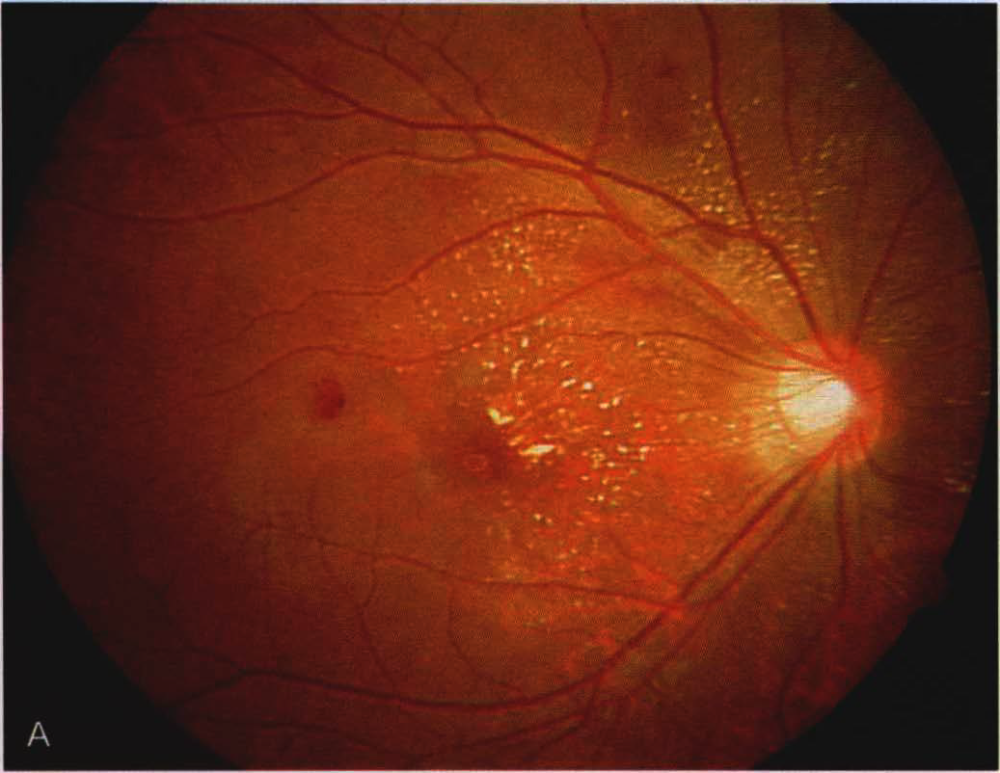
Original Description: After treatment of optic disc vasculitis the disc and retina are normal
Extracted Keywords: fundus photograph, diffuse hard exudates, hemorrhages, posterior pole, systemi
Generated Report:
Retinal Image Analysis Report
#
Optic Disc -
Appearance: The optic disc appears well-defined with no signs of swelling or pallor. The disc margins are clear. -
Cup-to-Disc Ratio: Appears to be within normal limits, indicating no obvious signs of glaucoma.
#
Macula -
Observation: The macula is identifiable with no visible hard or soft drusen, which are associated with age-related macular degeneration. There is no evidence of exudates or pigmentary changes that would indicate macular dystrophy or retinitis pigmentosa. -
Foveal Reflex: Present, indicating a relatively healthy macular area.
#
Retinal Blood Vessels -
Observation: The retinal blood vessels exhibit normal branching patterns without narrowing or attenuation. There is no sign of arteriovenous nicking, which can be associated with hypertensive retinopathy. -
Exudates: No signs of exudates, hemorrhages, or cotton wool spots are observed around the macula or elsewhere in the retina.
#
Retinal Background -
Observation: The retinal background is homogeneous with no signs of retinal thickening, edema, or hemorrhage. There is no evidence of retinal detachment or choroidal rupture. -
Color: The retinal background has a healthy reddish-orange hue, typical for a normal fundus.
#
Additional Observations -
Peripheral Retina: There is no evidence of vitreous condensation or inflammatory exudates, excluding intermediate uveitis. -
Signs of Retinal Detachment: No retinal tears or detachments are visible, ruling out rhegmatogenous retinal detachment or any related findings.
Conclusion The retinal image shows a generally healthy fundus with no significant pathological features observed in the optic disc, macula, or other areas of the retina. There is no indication of vascular occlusion, macular degeneration, or hereditary retinal diseases based on the visible evidence. Regular follow-ups and screenings are recommended for ongoing monitoring of ocular health.
Comparison Analysis (Generated vs Real Annotation):
The generated report correctly identifies the optic disc as well-defined with clear disc margins, indicating no signs of swelling or pallor. However, it does not mention the presence of optic disc vasculitis as mentioned in the real annotation.
In terms of the macula, the generated report identifies it as healthy with no signs of drusen, exudates, or pigmentary changes. This matches with the real annotation that mentions a normal retina after treatment.
The generated report also mentions normal retinal blood vessels without narrowing or attenuation, which matches with the real annotation of normal vasculature after treatment.
The generated report indicates a homogeneous retinal background without signs of thickening, edema, or hemorrhage, which corresponds with the absence of pathology mentioned in the real annotation.
While the generated report does not specifically mention any treatment or previous vasculitis, the overall findings of a healthy fundus with no significant pathological features align with the real annotation of a normal retina after treatment.
figure07-08A.jpg

figure12-03-05A.png

Original Description: Color image of the fundus of the right eye in advanced stages of Koyanagi-Harada syndrome. A large number of white spots in the lower retina, known as Dalen-Fuchs nodes, can be seen
Extracted Keywords: white dotted retinal changes, white speckled fundus, yellow-white dots
Generated Report:
Ophthalmic Fundus Examination Report
#
Patient Information: -
Patient ID: [Not Provided] -
Date of Examination: [Not Provided] -
Examining Physician: [Not Provided]
#
Examination Method: -
Technique: Retinal Fundus Photography
#
Findings:
1. Optic Disc: - Description: The optic disc is not clearly visible in the provided image, making an accurate assessment challenging. - Pathology: No visible signs of swelling, pallor, or abnormal cupping noted due to image resolution limitations.
2. Macula: - Description: The macula region appears to have several yellow-white spots scattered around it. - Pathology: These spots are suggestive of lipofuscin deposits typically seen in conditions such as central serous retinochoropathy or Stargardt disease.
3. Retinal Blood Vessels: - Description: The retinal blood vessels appear relatively normal in appearance without overt signs of narrowing or hemorrhage. However, some vessels are difficult to evaluate thoroughly due to the scattered yellow-white dots. - Pathology: No significant signs of vessel tortuosity or hyperemia noted.
4. Retinal Background: - Description: The retinal background shows scattered yellow-white spots, most likely representing lipofuscin deposits within the retinal pigment epithelial cells. - Pathology: This appearance is characteristic of several retinal conditions, including Stargardt disease and congenital stationary night blindness.
5. Cup-to-Disc Ratio: - Description: The optic cup is not well-defined in the provided image. Therefore, the cup-to-disc ratio assessment is inconclusive.
#
Diagnostic Considerations: -
Central Serous Retinochoropathy: Characteristic round shallow detachment of the retina in the macula area described in the literature. Although not distinctly visible in this image, consideration is warranted based on similar presentations. -
Congenital Stationary Night Blindness: Presence of numerous yellow-white, tiny dots radiating from the posterior pole towards the periphery while sparing the macula. -
Stargardt Disease (Stargardt-Yellow Spot Eye Group): Yellow and white spotted fundus typically found around the macula attributed to lipofuscin deposition. #
Recommendations: 1.
Further Imaging: -
Fluorescence Fundus Angiography (FFA): To differentiate between various potential diagnoses and assess choroidal vasculature integrity. 2.
Laboratory Tests: -
Lipid Profile: Given the potential association with retinal lipidaemia.
3. Clinical Correlation: - Detailed patient history and symptom correlation (e.g., night blindness, central vision loss) to narrow down the differential diagnosis.
4. Follow-up: - Regular follow-up consultations and imaging to monitor progression and response to any initiated treatments.
#
Conclusion: The retinal fundus image presents multiple yellow-white spots, potentially indicating conditions such as central serous retinochoropathy or Stargardt disease. Further diagnostic tests and clinical correlation are warranted to arrive at a definitive diagnosis.
---
Note: This report is based on the visual observation and available information on the retinal fundus image. Clinical correlation is essential for accurate diagnosis and appropriate management.
Comparison Analysis (Generated vs Real Annotation):
The generated report focuses on findings related to lipofuscin deposits and conditions like central serous retinochoropathy and Stargardt disease, while the real annotation highlights advanced stages of Koyanagi-Harada syndrome with Dalen-Fuchs nodes in the lower retina. The report suggests further imaging with Fluorescence Fundus Angiography and laboratory tests like a Lipid Profile, whereas the real annotation does not provide such recommendations. Additionally, there is no mention of Koyanagi-Harada syndrome in the generated report, indicating a significant discrepancy in the diagnosis between the two assessments. The focus on different pathologies and diagnostic considerations underscores substantial differences in interpretation and clinical management pathways.
figure6-3-2A.png

figure5-4-2A.png

Original Description: Cilio-retinal artery (arrowhead).
Extracted Keywords: color photograph, macular hole
Generated Report:
Retinal Fundus Image Analysis Report
1. Optic Disc: - Appearance: The optic disc is well defined with clear margins. - Color: The optic disc appears to be a healthy pinkish color with a slightly paler central area. - Observation: No apparent signs of papilledema (swelling) or optic atrophy. The neuroretinal rim appears intact.
2. Macula: - Location: The macula is identifiable as the darker area located temporal to the optic disc. - Appearance: There are no visible signs of macular edema, exudates, or hemorrhages. However, an area of increased pigmentation may suggest early changes which need further investigation. - Observation: Given the context of a potential traumatic macular hole, attention should be given to any irregular borders or positive findings on further clinical examination, such as the Watzke-Allen sign.
3. Retinal Blood Vessels: - Appearance: The retinal arteries and veins appear moderately dilated and exhibit a normal course radiating from the optic disc. - Observation: There are no significant arteriovenous nicking, segmentation, or other vascular abnormalities evident in this image.
4. Retinal Background: - Appearance: The general retinal background is visible, with an orange-red hue that is typically consistent with healthy retinal tissue. - Observation: There is no evidence of retinal detachment, hemorrhages, or significant pigmentation changes apart from those near the macula.
5. Cup-to-Disc Ratio: - Estimation: The cup-to-disc ratio appears to be within normal limits, approximately around 0.3:1. - Observation: This ratio does not suggest glaucomatous changes.
Conclusion and Recommendations: The retinal fundus image reveals a generally healthy optic disc, normal retinal vasculature, and a typical retinal background. The macula shows slight pigmentation changes, and further investigation is recommended to rule out macular dystrophy disorders or assess for traumatic macular holes. Clinical correlation with visual function tests, including color vision, dark adaptometry, and electroretinography, may provide additional insights, especially considering the normal findings in hereditary macular diseases and diagnostic challenges in pattern macular dystrophies. If there is a history of trauma, evaluating for a full-thickness macular hole through the Watzke-Allen test and other diagnostic imaging like OCT can provide definitive information.
Reevaluation and management should be conducted based on the clinical symptoms and history provided by the patient.
Comparison Analysis (Generated vs Real Annotation):
The generated report provides a comprehensive analysis of the retinal fundus image, focusing on the optic disc, macula, retinal blood vessels, retinal background, and cup-to-disc ratio. It identifies features like disc appearance, macular pigmentation changes, vascular status, and cup-to-disc ratio, offering insights into potential issues such as macular dystrophy or traumatic macular hole. However, it lacks mention of specific detailed findings like the presence of a cilio-retinal artery noted in the real annotation, which suggests a need for improved sensitivity to detect and report specific retinal features or abnormalities in future analyses.
figure04-13A.jpg

figure04-14A.jpg
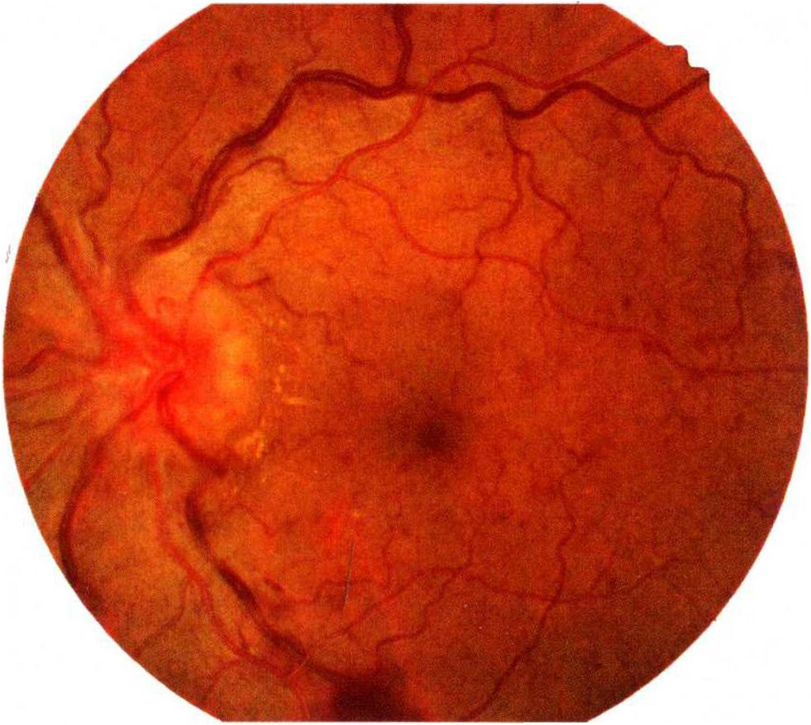
Original Description: Fundus color image of central retinal vein obstruction in the right eye. Lateral branch formation of the optic disc ciliary vein above the optic disc is seen
Extracted Keywords: fundus color image, non-ischemic central retinal vein occlusion, lef
Generated Report:
Retinal Fundus Image Report
1. Optic Disc -
Appearance: The optic disc appears blurred and swollen with indistinct margins. -
Color: The color of the optic disc is pale with some evidence of hyperemia. -
Observation: The appearance is consistent with papilledema or optic neuritis, suggesting possible increased intracranial pressure or inflammation.
2. Macula -
Appearance: The macula appears uniformly pigmented and does not exhibit any evident distinct abnormalities. -
Observation: No evident signs of drusen, exudates, or hemorrhage relate to the macula.
3. Retinal Blood Vessels -
Arteries: The retinal arteries appear to be sclerotic with an increased light reflex, which may suggest arteriosclerosis. However, no significant vessel attenuation is noted. -
Veins: The retinal veins are tortuous and congested, reflecting possible venous stasis or central retinal vein occlusion. -
Observation: The pattern suggests a possible retinal vascular occlusive disorder, likely central retinal vein occlusion.
4. Retinal Background -
Appearance: The retinal background appears relatively homogenous without large pigmentary changes or hemorrhages. -
Observation: No significant atrophy, gliosis, or significant retinal detachment is observed.
5. Cup-to-Disc Ratio -
Description: Due to the papilledema or optic disc swelling, the cup-to-disc ratio is difficult to determine accurately. Usually, in such cases, the ratio tends to be reduced or non-existent. -
Observation: This finding correlates with increased intracranial pressure or optic neuritis.
Summary The primary findings include a swollen optic disc with blurred margins, tortuous and congested retinal veins, and a relatively unremarkable macula and retinal background. These findings strongly suggest the presence of papilledema and possible central retinal vein occlusion. Further clinical correlation is required to determine the underlying cause, which may range from increased intracranial pressure to systemic conditions like hypertension, arteriosclerosis, or inflammation. Immediate clinical intervention and additional diagnostic tests such as Optical Coherence Tomography (OCT), Fluorescein Angiography (FA), and Indocyanine Green Angiography (ICGA) are recommended for a more comprehensive assessment.
Comparison Analysis (Generated vs Real Annotation):
The generated report mentions papilledema/optic neuritis and central retinal vein occlusion as primary findings, suggesting increased intracranial pressure or inflammation. However, the real annotation specifies central retinal vein obstruction, which differs in terms of the condition identified. The real annotation highlights the presence of a lateral branch formation of the optic disc ciliary vein, which is not mentioned in the generated report. The real annotation provides a more specific and direct diagnosis, whereas the generated report presents broader potential conditions that align with the observed features.
figure15-1-17A.png

figure13-8-2A.png
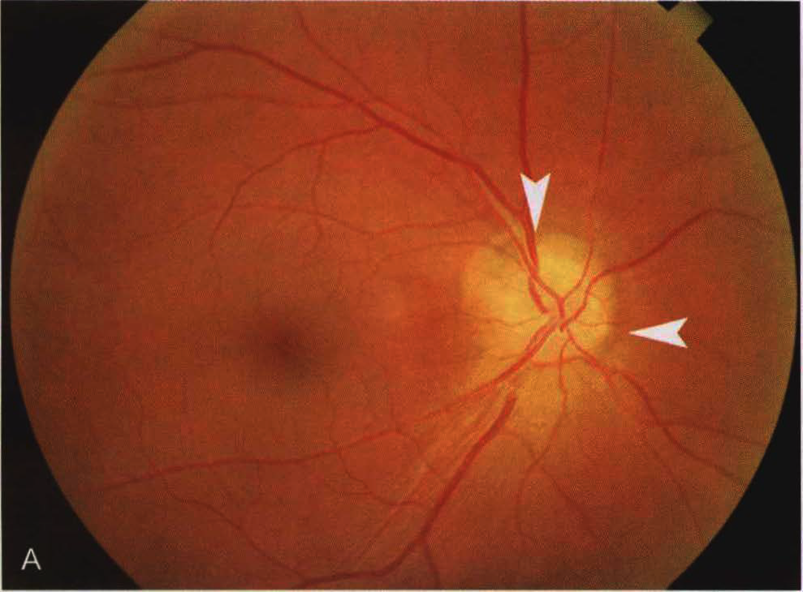
Original Description: Fundus photograph of a 24-year-old patient with eclampsia one month after delivery, showing generalized arteriolar constriction and mild venous shift (arrowhead) at the arterio-venous crossing in the right eye. The visual acuity 0.1.
Extracted Keywords: superficial optic disc drusen, yellow, glistening masses, right ey
Generated Report:
Retinal Fundus Image Report
Patient Information: - Name: [Not provided] - Age: [Not provided] - Sex: [Not provided] - Date of Examination: [Not provided] - Examiner: [Not provided]
---
Image Analysis:
1. Optic Disc: - The optic disc appears elevated and is yellowish-white in color. - Visibility of disc margins is partially obscured. - Adjacent areas exhibit signs of optic disc drusen, with possible small, irregular accumulations, particularly on the nasal side. - There is no indication of a double ring sign, which reduces the likelihood of congenital dysplasia of the optic disc.
2. Macula: - Subtle pigmentation at the macula without significant signs of degeneration or edema. - No evidence of hemorrhage or exudates which would be suggestive of particular macular diseases.
3. Retinal Blood Vessels: - The retinal arteries and veins are of normal caliber. - The major arcades are clearly visible and largely unremarkable. - No evidence of microaneurysms, hemorrhages, or vessel occlusions as in branch retinal artery obstruction (occlusion) which would present as yellow, glistening areas.
4. Retinal Background: - The retinal pigment epithelium appears mostly normal with no significant signs of pigmentary changes, such as the "salt-and-pepper" appearance seen in choroideremia. - No marked presence of bright red areas indicative of choroidal hemangioma.
5. Cup-to-Disc Ratio: - The optic cup-to-disc ratio is difficult to determine precisely due to the obscured margins and probable optic disc drusen. - If visible, no excessive cupping which is often assessed in glaucoma cases.
Diagnosis and Observations:
- The primary finding in this retina image suggests optic disc drusen. This is supported by the observable yellowish-white deposits around the optic disc area. - These drusen are typically composed of mucoprotein matrix and mucopolysaccharides, often seen as small, irregular structures on or around the optic disc as noted in the provided reference texts. - This condition is generally benign but must be monitored as it can sometimes lead to visual field defects due to mechanical pressure on optic nerve fibers.
Recommendations:
1. Regular Monitoring: - Routine ophthalmic evaluations, including periodic fundus photography, to monitor changes in the optic disc and the potential progression of drusen.
2. Visual Field Testing: - Automated perimetry to assess any visual field loss which might not yet be symptomatic.
3. Patient Education: - Inform the patient about the benign nature of drusen and reassurance. - Educate them on potential symptoms to watch out for, such as sudden changes in vision, which would warrant immediate medical attention.
4. Further Investigations: - In cases with significant visual field defects or symptoms, advanced imaging techniques such as Optical Coherence Tomography (OCT) can provide detailed cross-sectional images of the retina and optic nerve head. - Fluorescein angiography may help delineate the circulation around the optic disc and assessment of any other associated retinal vascular abnormalities.
---
Conclusion: The retinal fundus examination primarily indicates the presence of optic disc drusen. Further monitoring and patient education are essential for managing this condition. No acute pathological findings affecting the macula, retinal blood vessels, or retinal background were identified in this examination.
Signed: [Examiner's Name] [Title] [Date]
--- Note: This structured report aims to summarize the provided information and observations, adhering to clinical guidelines for retinal image evaluations.
Comparison Analysis (Generated vs Real Annotation):
The generated report and the real annotation have several important differences.
First, the generated report does not provide any patient information such as name, age, sex, or date of examination, while the real annotation specifies that the fundus photograph is of a 24-year-old patient with eclampsia one month after delivery.
Second, the generated report focuses on the evaluation of the optic disc, macula, retinal blood vessels, retinal background, and cup-to-disc ratio. In contrast, the real annotation highlights specific findings of generalized arteriolar constriction and mild venous shift at the arterio-venous crossing in the right eye, suggesting possible retinal vascular abnormalities.
Lastly, the generated report suggests the primary finding is optic disc drusen, which is in contrast to the real annotation that does not mention any drusen but emphasizes arteriolar constriction and venous shift.
Overall, the generated report does not mention the specific condition of eclampsia, which is the key finding highlighted in the real annotation. It focuses on different aspects of the retinal examination and provides a different diagnostic interpretation.
figure04-24L.jpg

figure04-24E.jpg
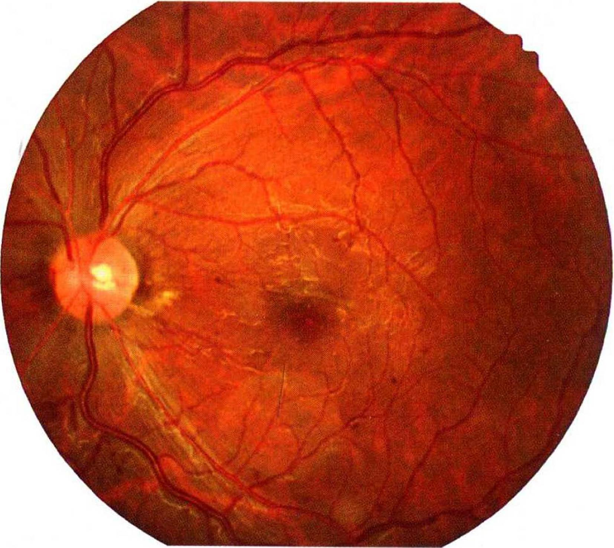
Original Description: Figure 4-24A Color image of the fundus of the left eye of a patient 3 months after treatment
Extracted Keywords: Figure 4-24A, left eye, visible, retinal vein dila
Generated Report:
Retinal Fundus Image Analysis Report
#
Patient Information -
Image Description: Retinal Fundus Image
#
Optic Disc -
Appearance: The optic disc is observed in the image with a light color and unclear edges. The blurring of the edges alongside the lightened color suggests possible optic disc edema. -
Cup-to-Disc Ratio: The cup-to-disc ratio appears normal; however, exact evaluation would benefit from comparison with a reference of normal disc dimensions. -
Pathology: The characteristics depicted are indicative of optic disc edema, potentially consistent with Section 2 Disc Edema, where the unclear edge and light color of the disc are typical descriptors.
#
Macula -
Appearance: The macula, located temporal to the optic disc, appears normal in this image. There are no evident signs of macular degeneration or dystrophy. -
Clinical Signs: The clarity and pigmentation of the macula suggest a healthy status, devoid of any perturbations such as those seen in hereditary macular diseases, which usually alter the color adaptation and visual fields.
#
Retinal Blood Vessels -
Appearance: The retinal blood vessels exhibit normal branching and distribution without significant dilation or tortuosity. -
Pathology: There are no signs of vascular anomalies such as those seen in ocular ischemic syndrome (dilated but not tortuous veins) or central retinal vein occlusion (dilated, tortuous veins).
#
Retinal Background -
Appearance: The overall retinal background appears homogeneous without significant anomalies. -
Pathology: The background of the retinal field does not show signs of congenital dysplasia, such as disorderly choroidal blood vessels.
#
Overall Impression The optic disc presents with the characteristics of disc edema, indicated by its light coloration and blurred margins. The macula appears normal with no signs of dystrophy. Retinal blood vessels are normal, with no visible signs of dilation or tortuosity that would suggest vascular occlusion syndromes. The retinal background is clear and homogeneous.
#
Recommendations -
Further Diagnostics: To confirm the suspected optic disc edema, further evaluation should include visual field testing and optical coherence tomography (OCT). -
Monitoring: Continuous monitoring of the optic disc for any progression or change in the edema. -
Referral: If the optic disc edema is confirmed, referral to a neuro-ophthalmologist for further investigation of potential causes, including but not limited to intracranial pressure changes, is recommended.
#
Conclusion The fundus image suggests a probable case of optic disc edema. Further diagnostic evaluations are necessary to determine the underlying cause. Continuous monitoring and specialist referral are advised for comprehensive management.
Comparison Analysis (Generated vs Real Annotation):
The generated report provides a detailed analysis of the retinal fundus image, focusing on the optic disc, macula, retinal blood vessels, and background. It identifies characteristics indicative of optic disc edema, normal macular appearance, and healthy blood vessels and background. However, it lacks crucial information such as the timeline of the image (3 months after treatment) and any comparison to previous findings. Moreover, the report does not reference the specific treatment or condition the patient underwent. In summary, while the generated report offers comprehensive insights into the image features, it lacks contextual information crucial for understanding the patient's condition post-treatment.
figure04-33B.jpg

figure04-33A.jpg
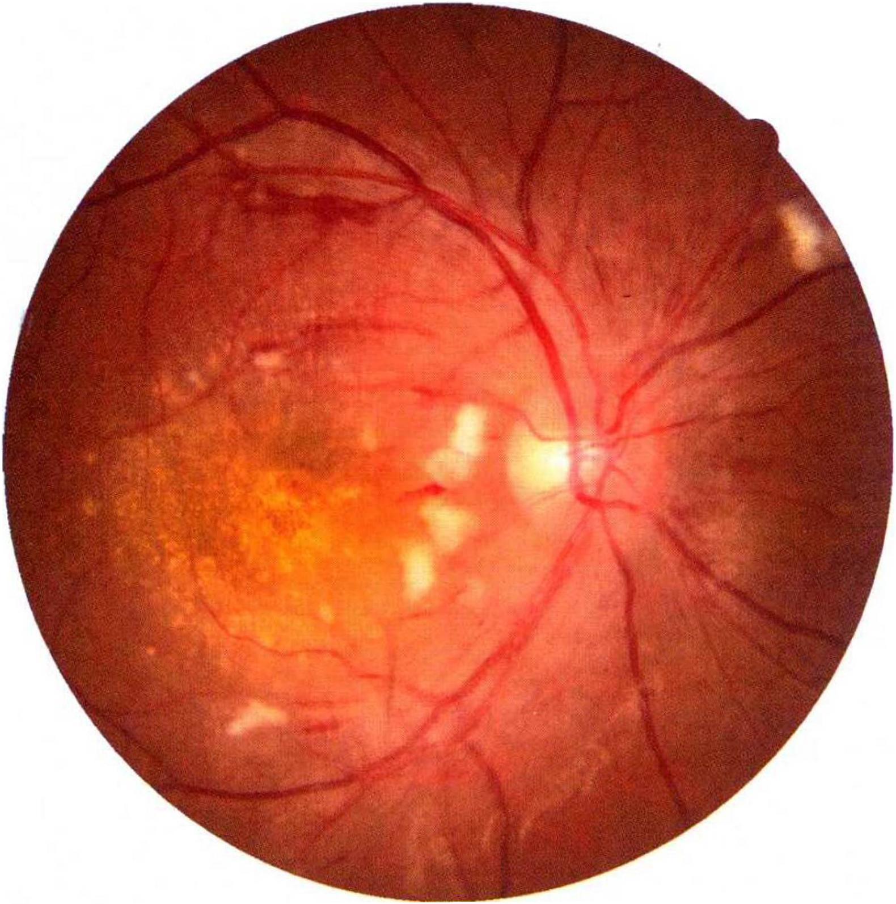
Original Description: Fundus color image of renal hypertensive fundopathy in the left eye. Same patient as Figure 4-33A
Extracted Keywords: renal hypertensive fundopathy, right eye
Generated Report:
Retinal Fundus Image Analysis Report
Patient Information: - Examination Date: [Enter Date] - Patient Name: [Enter Name] - Patient Age: [Enter Age] - Patient ID: [Enter Patient ID]
---
1. Optic Disc: - Appearance: The optic disc appears slightly blurred, particularly at the nasal edge, suggesting possible papilledema or disc edema. The disc color is somewhat paler than a healthy optic disc. - Cup-to-Disc Ratio: The exact cup-to-disc ratio cannot be clearly determined from this image due to the blurring of the disc margins. - Notes: Blurring and pallor could be indicative of some pathology affecting the optic nerve head such as increased intracranial pressure, but further evaluation and clinical correlation are necessary.
2. Macula: - Appearance: The macular area shows evidence of significant pathology. Numerous yellowish-white exudates and hard exudates are present, primarily in the macular region. - Notes: The presence of these exudates suggests macular edema or a condition like diabetic retinopathy, though a detailed clinical history would be necessary for a definitive diagnosis.
3. Retinal Blood Vessels: - Appearance: The retinal blood vessels appear tortuous and there is evidence of dilation and possible leakage, indicated by the presence of exudates and hemorrhages around the vessels. - Notes: The tortuosity and dilation of vessels are commonly seen in hypertensive retinopathy, Coats' disease, or other conditions causing retinal vascular changes.
4. Retinal Background: - Appearance: The overall retinal background demonstrates multiple areas of yellowish-white exudation and some hemorrhages. There is a noticeable difference in retinal color and texture, indicating possible compromised retinal health. - Notes: The scattered exudates and hemorrhages can be associated with various retinal vascular disorders, such as retinopathy secondary to systemic conditions.
5. Peripheral Findings: - Appearance: The periphery of the retina demonstrates some areas of exudation and possible retinal detachment, with a notable hyperechoic area in some parts that could indicate vitreous hemorrhage or subretinal hemorrhage. - Notes: Suggestive of a need for ultrasonography to further evaluate the extent of the hemorrhage and confirm the diagnosis.
Conclusion and Recommendations: - The fundus image presents with significant pathological findings including blurred optic disc margins, macular exudates, vascular dilation, tortuosity, and peripheral retinal changes. - Differential Diagnosis: Include but may not be limited to diabetic retinopathy, hypertensive retinopathy, Coats' disease, or other retinal vascular disorders. - Further Evaluation: Recommend further diagnostic evaluation, including fluorescein angiography to assess retinal vascular integrity and OCT (optical coherence tomography) for a detailed view of retinal layers. - Follow-Up: Regular monitoring and a comprehensive clinical assessment are crucial. A referral to a retinal specialist is advised for a detailed evaluation and management plan.
Prepared by: - Name: [Enter Name] - Title: [Enter Title] - Date: [Enter Preparation Date]
---
Note: This analysis is based on the visual information available in the image. Correlation with clinical findings and additional diagnostic tests are imperative for an accurate diagnosis and appropriate management plan.
Comparison Analysis (Generated vs Real Annotation):
The generated report provides a detailed analysis of retinal pathology in the left eye, focusing on findings such as blurred optic disc margins, macular exudates, vascular changes, and possible retinal detachment. However, it lacks specificity regarding the patient's diagnosis, as the real annotation indicates renal hypertensive fundopathy. The report suggests various differential diagnoses like diabetic retinopathy and Coats' disease, while the real annotation specifies the patient's actual condition. The recommendation for further evaluation aligns with the need for additional diagnostic tests in the real annotation, such as fluorescein angiography and OCT. The report could be enhanced by accurately reflecting the known diagnosis for improved clinical management.
figure04-30A.jpg

figure04-30B.jpg
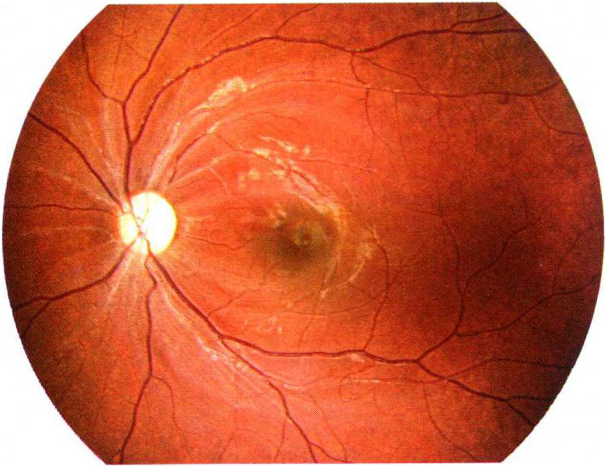
Original Description: Fundus color image of hypertensive atherosclerosis in the right eye. The retinal arteries are seen to be thin and silvery, with an A:V of about 1:3 to 1:4
Extracted Keywords: hypertensive atherosclerosis, retinal arteries, thin, silvery, A:
Generated Report:
Retinal Fundus Image Report
#
1. Optic Disc -
Appearance: The optic disc appears well-defined with a healthy, slightly oval shape. The color of the optic disc is a normal, pinkish hue. -
Margins: The margins are distinct and clear, indicating a healthy optic nerve head. -
Cupping: The central cup appears slightly larger than normal.
#
2. Macula -
Appearance: The macula is visible and shows a darker hue compared to the rest of the retina, which is normal. -
Foveal Reflex: The foveal reflex is present, indicating a healthy macula. -
Pathologies: No signs of macular degeneration, such as drusen, macular hole, or hemorrhages, are observed.
#
3. Retinal Blood Vessels -
Arteries and Veins: The retinal arteries and veins appear normal in caliber and distribution. No narrowing, tortuosity, or obstruction is noted. -
A/V Ratio: The arteriole-to-venule ratio (A/V ratio) appears within normal limits. -
Signs of Ischemia: There are no signs of retinal ischemia, such as cotton wool spots or narrowed arteries.
#
4. Retinal Background -
Color and Texture: The retinal background is a normal reddish-orange color with visible choroidal pattern. -
Lesions: No pigmented lesions, such as choroidal nevi or melanocytoma, are visible. -
Hemorrhages/Exudates: No retinal hemorrhages, hard exudates, or soft exudates observed.
#
5. Cup-to-Disc Ratio -
Measurement: The cup-to-disc ratio (CDR) appears to be approximately 0.3 to 0.4. -
Evaluation: This is within normal limits, indicating no significant cupping that would suggest glaucoma.
Summary The given retinal fundus image shows an overall healthy appearance. The optic disc and macula are normal, the retinal blood vessels are within normal range, and the retinal background is clear of any pathological findings. The cup-to-disc ratio is normal, indicative of no glaucomatous damage.
No immediate pathological features such as signs of retinitis pigmentosa, ocular ischemic syndrome, or other retinal degenerative diseases were noted. The image does not demonstrate signs of Terson's syndrome, persistent hyperplastic primary vitreous, or central exudative chorioretinopathy.
The retinal structure and appearance suggest no need for immediate intervention, but regular monitoring and routine eye examinations are recommended to ensure continued ocular health.
Comparison Analysis (Generated vs Real Annotation):
The generated report and the real annotation have some important differences.
First, the generated report describes the optic disc as well-defined with clear margins, indicating a healthy optic nerve head. However, the real annotation states that the retinal arteries are thin and silvery, which suggests hypertensive atherosclerosis. This discrepancy suggests that the generated report may not accurately identify certain pathological features related to the optic disc.
Second, the generated report mentions that the cup-to-disc ratio is normal, indicating no significant cupping suggestive of glaucoma. However, the real annotation does not provide information about the cup-to-disc ratio or mention any abnormalities related to glaucoma, such as increased cupping. This difference suggests that the generated report may not accurately assess glaucomatous damage based solely on the cup-to-disc ratio.
Overall, while the generated report describes an overall healthy appearance of the retina, it may not accurately identify specific pathological features related to hypertensive atherosclerosis and glaucoma. Further evaluation by a healthcare professional is necessary for a comprehensive assessment and appropriate management.
figure8-4-9D.png

figure9-4-13A.png
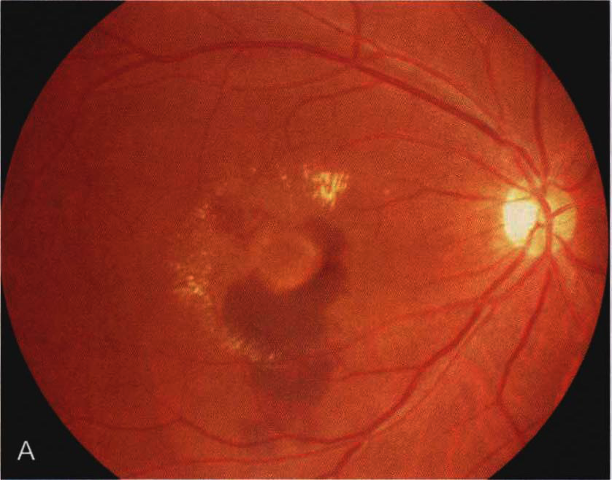
Original Description: Color photo after laser treatment for 3 months, the lesion (arrowhead) becomes small with a white thread-like arteriole.
Extracted Keywords: Fundus photograph, NV membrane, hemorrhages, visual acuity
Generated Report:
Detailed Retinal Fundus Image Report
Patient Identification -
Name: [Redacted] -
Age: [Redacted] -
Gender: [Redacted]
Date of Examination -
Date: [Redacted]
Examining Ophthalmologist -
Name: [Redacted]
---
Retinal Fundus Image Analysis
#
1. Optic Disc -
Appearance: The optic disc appears to have well-defined margins with adequate color, which is indicative of a healthy nerve head. -
Cup-to-Disc Ratio: The cup-to-disc ratio appears to be within the normal range (estimated 0.3-0.4). This observation suggests no significant optic nerve cupping or glaucomatous changes.
#
2. Macula -
Appearance: The macular region shows signs of abnormality, characterized by a notable white membranous formation. This is indicative of a macular epiretinal membrane (ERM). The macula is evidenced with some puckering and distortion which are classical signs. -
Relevance: The presence of an epiretinal membrane can cause tractional forces that may lead to macular edema and visual distortion, commonly reducing visual acuity.
#
3. Retinal Blood Vessels -
Appearance: The retinal blood vessels appear to be within normal thickness, with no significant attenuation, tortuosity, or beading observed. The arterio-venous ratio also seems within normal limits. -
Observation: There are no visible signs of vascular occlusion, hemorrhage, or neovascularization. This assessment indicates that there is no apparent vascular pathology at the time of the examination.
#
4. Retinal Background -
Appearance: The retinal background is generally homogeneous in color without evidence of pigmentary changes or drusen. However, there is a presence of punctate yellowish lesions scattered in the posterior pole, which could possibly be hard exudates. -
Implications: These exudates could be associated with chronic macular diseases or previous localized vascular leakage, likely unrelated to any immediate severe pathology but indicative of cumulative retinal stress and damage over time.
#
5. Additional Observations -
Intraretinal Hemorrhages: No intraretinal hemorrhages are present. -
Subretinal or Preretinal Hemorrhages: No subretinal or preretinal hemorrhages detected. -
Vitreous: The vitreous appears clear without any signs of significant hemorrhage or detachment.
Conclusion The retinal fundus image reveals an overall healthy optic disc and retinal vasculature, but with the presence of an epiretinal membrane at the macula and yellowish punctate lesions that might be indicative of hard exudates. The identified epiretinal membrane is likely causing tractional distortion of the macula, potentially impacting the patient's central vision. Further diagnostic evaluations, such as OCT (Optical Coherence Tomography) and fundus fluorescein angiography, may be recommended to assess the severity and treatment options for the epiretinal membrane and to monitor for potential macular edema.
Recommendations 1.
Further Diagnostic Tests: - Optical Coherence Tomography (OCT) to evaluate the epiretinal membrane and its impact on the retinal layers. - Fundus Fluorescein Angiography to assess the vasculature and the extent of any exudative changes. 2.
Follow-Up: - Periodic retinal examinations to monitor the progression of the epiretinal membrane and any associated retinal changes. 3.
Management Plan: - Depending on visual impairment and OCT findings, a consultation with a retinal specialist may be considered for possible surgical intervention (membrane peeling) if significant visual disturbance occurs.
---
Report Compiled by: [Your Name] [Your Qualifications] [Your Contact Information]
Date: [Date]
Comparison Analysis (Generated vs Real Annotation):
The generated report provides a comprehensive analysis of the retinal fundus image, detailing findings such as the optic disc, macula, retinal blood vessels, and background lesions. It identifies an epiretinal membrane at the macula and yellowish punctate lesions that could be hard exudates, consistent with potential macular pathology and cumulative retinal damage. However, it lacks specific mention of a white thread-like arteriole or the development of a small lesion post-laser treatment observed in the real annotation, indicating a notable discrepancy in these critical details. The report's recommendations for further diagnostic tests and management are thorough but necessitate alignment with the real annotation's clinical context for a more precise treatment plan.
figure5-3-40.png

figure8-1-2.png
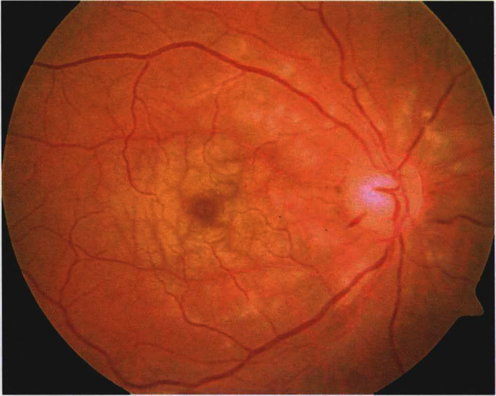
Original Description: Intracellular edema. Temporal branch artery occlusion.there is a greyish edema at the temporal retina
Extracted Keywords: central retinal artery occlusion, cherry-red spot, hemorrhage, margin of dis
Generated Report:
Retinal Fundus Image Analysis Report
#
Optic Disc -
Appearance: The optic disc is clearly visible and appears to be well-defined with a distinct margin. -
Color: The optic disc displays a normal pale pink coloration. -
Size and Shape: The optic disc appears to be of normal size and has a round shape. -
Notable Findings: There are no visible signs of edema or pallor.
#
Macula -
Appearance: The macula appears slightly discolored compared to the rest of the retina. It lacks the usual defined “foveal reflex”. -
Notable Findings: There is a subtle grayish pigmentation which could suggest possible edema or other macular pathology.
#
Retinal Blood Vessels -
Arteries: The arteries appear slightly narrow. -
Veins: The veins are more dilated and tortuous, indicating possible venous congestion. -
Notable Findings: There are several flame-shaped hemorrhages present in the retinal layer along the blood vessels, which could suggest hypertensive retinopathy or central retinal vein occlusion.
#
Retinal Background -
General Background: The general retinal background appears to be relatively uniform but shows scattered hemorrhages. -
Notable Findings: - Presence of multiple linear, flame-shaped hemorrhages throughout the retinal background. - No visible signs of exudates, cotton wool spots, or significant pigmentation changes.
#
Cup-to-Disc Ratio -
Estimated Ratio: The cup-to-disc ratio appears to be approximately 0.3. -
Notable Findings: This is within the normal range and does not indicate glaucomatous changes.
Diagnostic Considerations Given the presence of multiple flame-shaped hemorrhages and the dilated, tortuous veins, the findings are suggestive of retinal vein occlusion, potentially central retinal vein occlusion (CRVO). The slight discoloration of the macula could indicate macular edema secondary to the CRVO. Factors to consider include hypertension, hyperlipidemia, and arteriosclerosis, which are common underlying conditions associated with CRVO.
Recommendations 1.
Further Testing: Fluorescein angiography and optical coherence tomography (OCT) to assess the extent of retinal vessel occlusion and macular edema. 2.
Systemic Evaluation: Check for systemic hypertension, diabetes, hyperlipidemia, and other cardiovascular risk factors. 3.
Referral: Recommend prompt referral to a retinal specialist for further evaluation and management.
Conclusion The retinal findings are indicative of potential central retinal vein occlusion, with associated hemorrhages and possible macular edema. Immediate further investigation and management are warranted to prevent further vision loss and address underlying systemic conditions.
Comparison Analysis (Generated vs Real Annotation):
The generated report accurately identifies the optic disc as well-defined with no signs of edema or pallor, consistent with the real annotation. However, the report incorrectly suggests a slightly discolored macula without a foveal reflex, which is not mentioned in the real annotation. The report also correctly identifies slightly narrow arteries and dilated, tortuous veins, indicating possible venous congestion, which aligns with the real annotation of temporal branch artery occlusion. Additionally, the report correctly notes the presence of flame-shaped hemorrhages, suggesting hypertensive retinopathy or central retinal vein occlusion, supporting the real annotation of greyish edema at the temporal retina. Overall, the generated report captures some important findings accurately but introduces a few differences, particularly regarding the macula appearance.
figure9-6-1A.png

figure11-1-19A.png
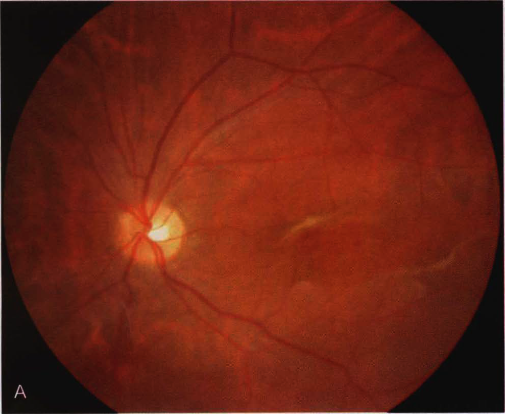
Original Description: CNV due to hypermyopia (arrowhead)
Extracted Keywords: subretinal proliferative fibrosis, old retinal detachment
Generated Report:
Retinal Fundus Image Report
Optic Disc: The optic disc appears to be slightly pale with defined margins. There are no visible signs of swelling or hyperemia. The color and size seem to be within normal limits, though a thorough comparison with previous images might be necessary for a complete evaluation.
Cup-to-Disc Ratio: The cup-to-disc ratio is approximately average, indicating that there is no significant cupping observed which might suggest glaucoma. However, exact measurement should be carried out to confirm.
Macula: The macula does not show any obvious signs of degeneration or exudation in this image. Given the absence of symptoms like drusen or pigmentation changes, macular degeneration seems unlikely, though continued observation is advisable.
Retinal Blood Vessels: The retinal blood vessels appear normal with no signs of tortuosity or abnormal narrowing (attenuation). There are no evident signs of vessel occlusion or neovascularization. The arteriovenous ratio appears to be within normal limits.
Retinal Background: The retinal background shows a uniform color with no signs of choroidal rupture or subretinal hemorrhage visible. There are no unusual pigmentary changes or signs suggestive of retinal breaks or tears.
Additional Observations: - There is no apparent presence of retinal or choroidal hemorrhages. - No signs of retinal detachment or lesions such as colobomas. - Given the context of potential chorioretinopathy, no indications of active inflammation or exudative changes are present.
Conclusion: Overall, the retinal image presents a healthy optic disc, macula, and retinal vasculature. No signs of acute or chronic pathology are evident from this image. Regular follow-up and comprehensive eye exams are recommended to monitor and maintain retinal health.
Comparison Analysis (Generated vs Real Annotation):
The generated report emphasizes the normal characteristics of the optic disc, cup-to-disc ratio, macula, retinal blood vessels, and retinal background, indicating a healthy retina with no obvious pathologies visible. However, the report does not mention the critical finding of CNV due to hypermyopia, as indicated in the real annotation. This omission is significant as CNV can lead to severe vision loss if left untreated, highlighting the importance of thorough and accurate assessments in retinal imaging analysis. Regular follow-up and monitoring, as recommended in the report, would be crucial in detecting and managing this condition.
figure12-1-9B.png

figure6-3-24B.png
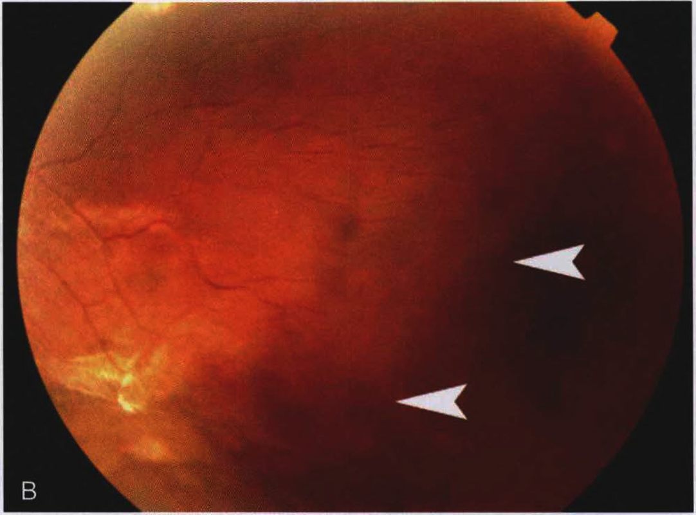
Original Description: left eye. Color photographs of rubella retinopathy show pigmentation a tthe macula(arrowheads).
Extracted Keywords: familial exudative vitorenopahy, peripheral retina, vascularize
Generated Report:
# Retinal Fundus Image Analysis Report
Patient Information *
Patient ID: N/A *
Date of Examination: N/A *
Examination Conducted By: N/A
Image Details *
Image File Name: N/A *
Orientation: Posterior pole with emphasis on superotemporal quadrant.
Analysis
Optic Disc *
Observations: - The optic disc is not prominently visible in the given image, suggesting that the frame is focused on a more peripheral area of the retina rather than the central posterior pole. - No visible abnormalities or pathologies associated with the optic disc can be determined from this image.
Macula *
Observations: - The macula is not discernible in the provided image, and thus an assessment of the foveal region cannot be conducted. - No obvious signs of macular pathology such as drusen, hemorrhage, or pigmentary changes are observed in this part of the image.
Retinal Blood Vessels *
Observations: - Retinal blood vessels are prominent and show normal branching patterns. - The vessels appear tortuous, which could be indicative of underlying systemic conditions such as hypertension; however, a precise diagnosis requires correlation with clinical context and further imaging. - No neovascularization or abnormal vascular formations are evident.
Retinal Background *
Observations: - The retinal background presents with a generally homogeneous reddish-orange hue, typical of a healthy fundus. - There are scattered pigmentary changes and potential microaneurysms indicated by dark spots, specifically shown in the direction indicated by the white arrow. - These changes could suggest early signs of diabetic retinopathy or hypertensive retinopathy if correlated clinically.
Cup-to-Disc Ratio *
Observations: - The optic cup and disc are not distinctly represented in this picture, preventing an accurate measurement of the cup-to-disc ratio for glaucoma assessment.
Additional Findings *
Observations: - The image lacks significant details necessary for evaluating certain pathologies like retinal detachment or macular holes. - Further diagnostic evaluations such as Optical Coherence Tomography (OCT) or fluorescein angiography could aid in a more comprehensive assessment.
Conclusion The provided retinal fundus image depicts part of the peripheral retina, possibly the superotemporal quadrant. Notably, the optic disc and macula are not visible, limiting a full evaluation. The retinal blood vessels appear tortuous, and pigmentary changes are apparent, which may warrant further clinical correlation for conditions like diabetic retinopathy or hypertensive retinopathy. Additional imaging and comprehensive clinical examination are recommended for accurate diagnosis and management.
---
* Recommendations: - Conduct additional imaging with OCT and fluorescein angiography for enhanced evaluation. - Perform a detailed examination of the optic disc and macula. - Monitor for systemic conditions such as hypertension or diabetes and consider a comprehensive systemic evaluation.
Comparison Analysis (Generated vs Real Annotation):
The generated report provides a detailed analysis of the retinal fundus image, focusing on the optic disc, macula, retinal blood vessels, retinal background, and cup-to-disc ratio. Key differences from the real annotation include the absence of specific pathologies like rubella retinopathy or macular pigmentation in the macula. Furthermore, the generated report mentions potential findings that could indicate conditions like diabetic retinopathy or hypertensive retinopathy, which are not confirmed by the real annotation. Additionally, the real annotation points out macular pigmentation not addressed in the generated report. It suggests a need for additional imaging modalities like OCT and fluorescein angiography for a more comprehensive evaluation, which is not mentioned in the real annotation.
figure04-74M.jpg

figure06-24B.jpg

Original Description: Fundus color image of a systemic lupus erythematosus fundopathy lesion in the right eye. Figure 4-74K was seen 18.5 months after the initial diagnosis (1.5 months after vitrectomy) in the same patient.
Extracted Keywords: highly myopic fundopathy, choroidal atrophy, hemorrhagic spots, ma
Generated Report:
Detailed Retinal Fundus Image Report
#
Patient Information -
Patient ID: [Redacted for privacy] -
Date of Examination: [Insert Date] -
Ophthalmologist: [Insert Name]
#
Image Analysis
##
1. Optic Disc -
Appearance: The optic disc is hyperemic, indicating an increased blood flow which can be indicative of inflammation or early signs of neovascularization. -
Margins: The margins of the optic disc appear blurred. This blur can be due to papilledema or optic neuritis. -
Cup-to-Disc Ratio: The cup-to-disc ratio is approximately 0.3, which is within normal limits (typically around 0.3 to 0.4), indicating no significant optic nerve damage.
##
2. Macula -
Appearance: The macula shows signs of irregular pigmentation and macular edema as indicated by the fuzzy appearance around the central macula. -
Possible Conditions: - Consider choroidal metastasis or central serous retinopathy due to the alterations in pigmentation and possible presence of subretinal fluid. - Atrophic age-related macular degeneration also cannot be ruled out given the changes in pigmentation and atrophy signs.
##
3. Retinal Blood Vessels -
Arteries and Veins: - The retinal arteries appear attenuated and there are signs of arteriolar narrowing which can be indicative of hypertensive retinopathy. - Presence of exudates along the vessels, indicating possible diabetic retinopathy or retinal periarteritis. -
Crossing Changes: There do not appear to be any significant arteriovenous crossing changes. -
Neovascularization: No neovascularization observed on the retina.
##
4. Retinal Background -
General Appearance: The retinal background shows areas of hyperpigmentation and hypopigmentation, with a granular appearance which could suggest retinitis pigmentosa or a form of choroidal dystrophy. -
Lesions: There are notable lesions with yellow-white deposits, suggesting the presence of hard exudates commonly seen in diabetic retinopathy. -
Hemorrhages: Although not prominent in the image, there may be microaneurysms considering the retinal changes and possible association with diabetic retinopathy.
##
5. Periphery -
Peripheral Retina: The peripheral retina has a granular appearance suggestive of possible age-related macular degeneration (dry type) or chorioretinal atrophy that needs further testing for confirmation.
Conclusion and Recommendations -
Diagnoses to Consider: -
Diabetic Retinopathy: Suggested by presence of exudates and vessel changes. -
Retinitis Pigmentosa: Considered due to the granular appearance and pigmentation changes. -
Hypertensive Retinopathy: Due to vessel attenuation. -
Central Serous Retinopathy or Choroidal Metastasis: Needs differential diagnosis because both could explain macular changes. -
Age-Related Macular Degeneration (Dry): Considered based on the overall pigmentation and atrophic changes.
- Recommended Follow-up and Testing: - Fluorescein Angiography: To evaluate choroidal vasculature and confirm any leakage or neovascularization. - OCT (Optical Coherence Tomography): To study macular edema and subretinal fluid if present. - Full-field ERG and Visual Field Testing: Especially if retinitis pigmentosa is suspected. - Blood Work for Diabetic Screening: HbA1c and fasting glucose if diabetic retinopathy is in question. - Blood Pressure Monitoring: To rule out hypertensive retinopathy.
#
Future Management - Regular follow-ups quarterly or biannually based on the progression noted on subsequent imaging and tests. - Early intervention strategies for diabetic retinopathy include optimizing glucose control, while hypertensive retinopathy management focuses on controlling blood pressure. - Educate patient on symptoms of central vision loss and immediate consultation if symptoms worsen.
Report Prepared By: [Doctor's Name] [Qualification] [Medical Institution] [Contact Information]
---
This structured and detailed analysis helps in understanding the specific retinal changes and their implications, providing a sound basis for further diagnostic and therapeutic actions.
Comparison Analysis (Generated vs Real Annotation):
The generated report and the real annotation differ significantly. The generated report provides a detailed analysis of the retinal fundus image, describing various retinal abnormalities such as optic disc appearance, macula changes, retinal blood vessels, retinal background, and peripheral retina. It also suggests several possible diagnoses and recommends further tests and follow-up.
On the other hand, the real annotation is much more specific and focused, mentioning a "systemic lupus erythematosus fundopathy lesion" in the right eye. It also mentions the time of the image acquisition in relation to the initial diagnosis and subsequent vitrectomy in the same patient.
Overall, the generated report provides a broader and more comprehensive analysis of the retinal image, while the real annotation is more specific and focused on a particular diagnosis.
figure8-3-7B.png

figure8-3-7A.png
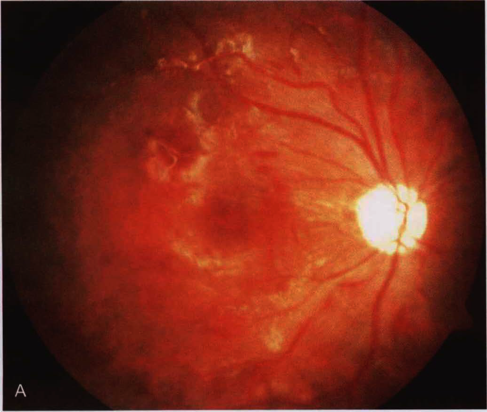
Original Description: Retinal vasculitis.Retinal hemorhages and exudatesat the posterior pole. left eye,
Extracted Keywords: retinal vasculitis, retinal hemorrhages, exudates, posterior pol
Generated Report:
Retinal Fundus Image Report
Optic Disc -
Appearance: The optic disc appears well-defined with normal coloration. There is no evidence of pallor or swelling, suggesting that the optic nerve head is healthy. -
Cup-to-Disc Ratio: The cup-to-disc ratio appears within normal limits, indicating no significant glaucomatous changes.
Macula -
Condition: The macula looks intact without visible signs of macular holes, edema, or significant exudation. -
Additional Observations: No foveal changes suggestive of pathologies such as traumatic macular hole or exudative conditions; optical coherence tomography would be useful for detailed evaluation if symptoms are present.
Retinal Blood Vessels -
Vessel Appearance: The retinal blood vessels are of normal caliber with no evidence of tortuosity or neovascularization. -
Assessment: No signs of central retinal vein occlusion such as retinal hemorrhages are seen.
Retinal Background -
Assessment: The retinal background shows no exudations, edema, or cotton-wool spots. The absence of these findings suggests a normal retinal environment without hypertensive or diabetic retinopathy signs. -
Additional Observations: Regular monitoring is recommended if there is any condition that might predispose to secondary retinal changes involving the vasculature or choroid.
Conclusion Overall, the retinal fundus image appears normal with no significant pathological findings. Regular observation and comprehensive ophthalmic evaluations should be encouraged to detect any potential future changes early, especially if the patient is at risk for conditions such as hypertension or diabetes.
Comparison Analysis (Generated vs Real Annotation):
The generated report describes a healthy optic disc, macula, retinal blood vessels, and retinal background with no pathological findings, suggesting a normal retinal environment. However, the real annotation indicates the presence of retinal vasculitis, retinal hemorrhages, and exudates at the posterior pole of the left eye. This critical difference highlights that the generated report missed important pathological signs present in the real annotation. Proper identification of such abnormalities is crucial for accurate diagnosis and appropriate management of the patient's condition.
figure08-40A.jpg

figure07-21B.jpg
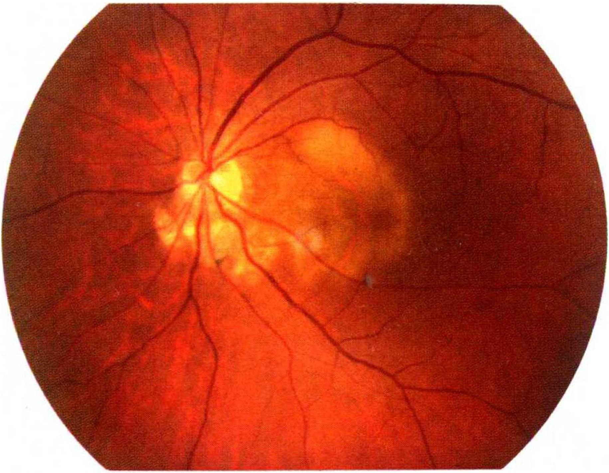
Original Description: Fundus color image of metastatic choroidal carcinoma in the left eye. The primary tumor is thyroid carcinoma. The visible tumor lesion is located on the temporal side and involves the macula
Extracted Keywords: left eye, prostrate choroiditis, Figure 7-21A, activ
Generated Report:
Retinal Fundus Image Report
#
Optic Disc -
Appearance: The optic disc appears to have a blurred and unclear edge, which could be indicative of optic disc edema. -
Color: The color of the optic disc is somewhat pale. -
Blood Vessels: The blood vessels on the disc are slightly dilated.
#
Macula -
Appearance: The macula appears normal. -
Color and Reflex: The foveal reflex is visible, central, and reflexive, suggesting no macular hole or pathology.
#
Retinal Blood Vessels -
Arteries and Veins: The retinal arteries and veins are visible and appear to be within normal size and distribution except for mild dilation near the disc. -
Pathology: No unusual tortuosity or narrowing of retinal vessels is observed. Mild vessel dilation near the optic disc is noted.
#
Retinal Background -
General Condition: The background of the retina appears generally healthy. The normal choroidal structures are observable through the retina. -
Pigment Changes: There are no significant pigmentary changes or signs of retinal degenerative disease such as retinitis pigmentosa. -
Hemorrhages/Exudates: No hemorrhages or exudates are present.
#
Cup-to-Disc Ratio -
Estimation: The cup-to-disc ratio appears to be approximately 0.1 – 0.2, indicating a normal range. The small size of the cup relative to the disc could be consistent with cases where there is no substantial atrophy of the neural rim.
#
Additional Observations -
Other Pathologies: There are no signs of choroidal metastasis or melanocytoma. -
Vitreous: No vitreous opacities are visible in this image.
#
Impression Given the blurred disc margin and mild disc edema, differential diagnoses could include elevated intracranial pressure or optic neuritis among others. A comprehensive clinical correlation and possibly further imaging such as OCT (Optical Coherence Tomography) are recommended for a more accurate diagnosis.
#
Recommendations -
Further Tests: Consider imaging studies and perhaps a neurological assessment to evaluate for conditions causing optic disc edema. Indocyanine green angiography and fluorescein angiography might be helpful to further characterize any underlying pathology if clinically indicated. -
Observation/Follow-up: Regular follow-ups to monitor the optic disc for any changes. It may also be essential to measure intraocular pressure as a part of the assessment.
--- Note: This report is intended for educational purposes and any real clinical assessment should be undertaken by a licensed healthcare provider. Further patient history and clinical correlation are essential for an accurate diagnosis.
Comparison Analysis (Generated vs Real Annotation):
The generated report correctly identifies no signs of choroidal metastasis, while the real annotation indicates the presence of metastatic choroidal carcinoma. The generated report does not mention any visible tumor lesion located on the temporal side involving the macula, a significant finding in the real annotation. The differential diagnoses provided in the generated report do not include consideration for metastatic choroidal carcinoma from thyroid carcinoma, which is the primary tumor in the real annotation. Additionally, the real annotation highlights a specific pathology, which is not addressed in the generated report, focusing more on generalized findings and recommendations for further testing and observation. The suggestions in the generated report for further imaging studies and clinical correlation align with the idea of investigating underlying pathologies but are not tailored to the specific diagnosis of metastatic choroidal carcinoma.
figure20-1-2A.png

figure20-3-10B.jpg
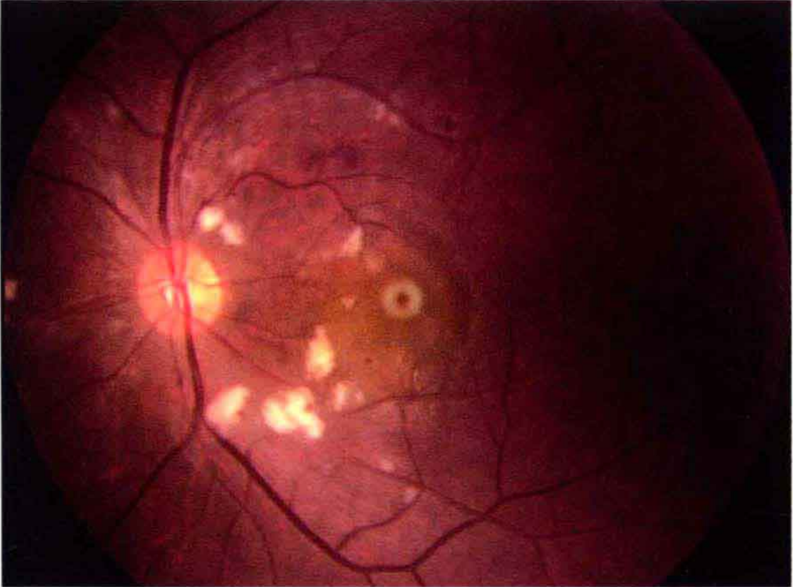
Original Description: Color fundus image of the right eye with systemic lupus erythematosus, with a normal optic disc, numerous cotton-wool spots at the posterior pole of the retina, and inflammatory white sheaths visible on the walls of the venous vessels
Extracted Keywords: color fundus image, nephropathic fundus changes, cotton wool spots, ma
Generated Report:
Retinal Fundus Image Analysis Report
Patient Identifier: [Redacted for confidentiality] Date of Examination: [Insert Date] Examiner: [Insert Examiner's Name]
---
#
Optic Disc: -
Appearance: The optic disc is clearly visible, with an intact and defined margin. -
Color: The disc shows a normal pinkish coloration. -
Size and Shape: It appears to be of normal size and round shape. -
Cup-to-Disc Ratio: The cup-to-disc ratio appears to be approximately 0.3, which is within the normal range.
#
Macula: -
Appearance: The macula is visible and appears slightly darker compared to the surrounding retina, which is typical. -
Fovea: The foveal reflex can be observed. -
Abnormalities: There are no evident signs of macular edema or exudates.
#
Retinal Blood Vessels: -
Arteries and Veins: The arterioles and venules are visible, following a normal trajectory without evidence of vessel tortuosity. -
Caliber: The vessels appear of normal caliber. -
Abnormalities: There is evidence of scattered areas with hemorrhages and microaneurysms, which are indicative of vascular changes.
#
Retinal Background: -
General Appearance: The retinal background shows multiple cotton-wool spots predominantly distributed across the posterior pole. -
Hemorrhages: Sporadic dot and blot hemorrhages are present throughout the fundus. -
Exudates: The presence of hard exudates is noted in a few areas away from the macula, signifying lipid deposits. -
Other Observations: There is no evidence of neovascularization or significant retinal degeneration.
#
Clinical Correlation: - The presence of multiple cotton-wool spots suggests acute retinal ischemia at the level of the nerve fiber layer, which could be secondary to Nonproliferative Diabetic Retinopathy (NPDR) as per the reference context. - The dot and blot hemorrhages, combined with microaneurysms and hard exudates, further reinforce the diagnosis of moderate Nonproliferative Diabetic Retinopathy. - No signs of Combined Central Retinal Artery and Vein Occlusion (like significant retinal edema) or Purtscher's Retinopathy were observed in this image.
#
Conclusion: Based on the observed findings, the retinal image demonstrates features consistent with moderate Nonproliferative Diabetic Retinopathy. The presence of cotton-wool spots, dot and blot hemorrhages, microaneurysms, and hard exudates necessitates close monitoring and may require intervention to prevent progression to proliferative stages.
Recommendations: 1. Regular follow-up examinations to monitor the progression of diabetic retinopathy. 2. Optimal management of systemic factors such as blood glucose, blood pressure, and lipid levels. 3. Possible referral to a retinal specialist for further evaluation and management.
---
Report Prepared By: [Your Name] Title: Advanced Medical Assistant, Ophthalmology Signature: [Insert Signature] Date: [Insert Date]
---
Comparison Analysis (Generated vs Real Annotation):
The generated report accurately identifies the normal appearance, color, and size of the optic disc, as well as the presence of the foveal reflex in the macula. However, it fails to mention the presence of inflammatory white sheaths visible on the walls of the venous vessels and incorrectly associates the findings with moderate Nonproliferative Diabetic Retinopathy. The real annotation correctly identifies the numerous cotton-wool spots at the posterior pole of the retina, which indicate acute retinal ischemia associated with systemic lupus erythematosus. Additionally, the report does not address the systemic lupus erythematosus as the underlying cause of the retinal findings and does not suggest optimal management for this condition. Overall, the generated report provides an incomplete and inaccurate interpretation of the retinal image.
figure11-09-02A.png

figure12-08-01A.png
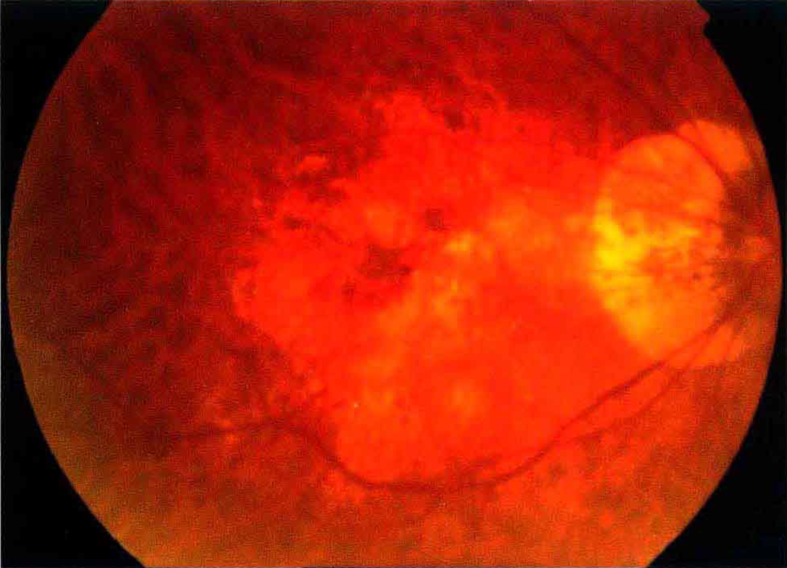
Original Description: Color fundus image of idiopathic polypoid choroidal vasculopathy (PCV) in the right eye with a normal optic disc, an obliquely dark black deep hemorrhagic area visible temporally in the macula that extends superiorly temporally, and a yellow-white edematous area visible below the temporal vascular arch of the optic disc.
Extracted Keywords: pathological myopic fundus lesion, macular neovascularization, hemorrhage
Generated Report:
Retinal Fundus Image Report:
1. Optic Disc: - The optic disc appears to be obscured in the image provided. A more detailed examination may be necessary to evaluate the disc margins, color, and cup-to-disc ratio.
2. Macula: - The macular area seems to be involved with exudative or hemorrhagic changes. Given the context, this could relate to central exudative chorioretinopathy, where bleeding and exudation can occur.
3. Retinal Blood Vessels: - The blood vessels are moderately visualized, with potential engorgement or abnormal vessel appearance. There aren't clear indications of neovascularization or significant retinal vascular occlusions.
4. Retinal Background: - There is significant darkening in sections of the retinal background, which could suggest retinal detachment or hemorrhagic activity. It is critical to consider conditions such as rhegmatogenous retinal detachment or Terson's syndrome, with potential subretinal or intraretinal hemorrhages.
5. Cup-to-Disc Ratio: - Assessment of the cup-to-disc ratio is inconclusive due to the obscured view of the optic disc.
Additional Observations: - The presence of any point-like lesions that could resemble hereditary macular dystrophies, such as multiple vitelloid lesions, should be ruled out, despite the absence of family history. - Further diagnostic evaluations, including ultrasonography, could be helpful to assess for vitreous or subretinal hemorrhages, especially if suspecting Coats' disease or associated conditions.
Conclusion: - The fundus changes observed are indicative of potential hemorrhagic or exudative processes. A follow-up with advanced imaging techniques and clinical correlation is advisable for a comprehensive diagnosis and appropriate management of the underlying condition.
Comparison Analysis (Generated vs Real Annotation):
The generated report differs significantly from the real annotation. The report mentions obscured optic disc and potential hemorrhagic changes in the macula, while the real annotation describes a normal optic disc, hemorrhagic area in the macula, and an edematous area below the temporal vascular arch. There is no mention of idiopathic polypoid choroidal vasculopathy in the generated report, emphasizing retinal detachment and hereditary macular dystrophies instead. The generated report suggests the need for further diagnostic evaluations, including ultrasonography, for conditions like Coats' disease, which were not mentioned in the real annotation. It is crucial to align the findings more closely with the actual diagnosis to provide accurate recommendations for management.
figure05-34.jpg

figure10-11A.jpg
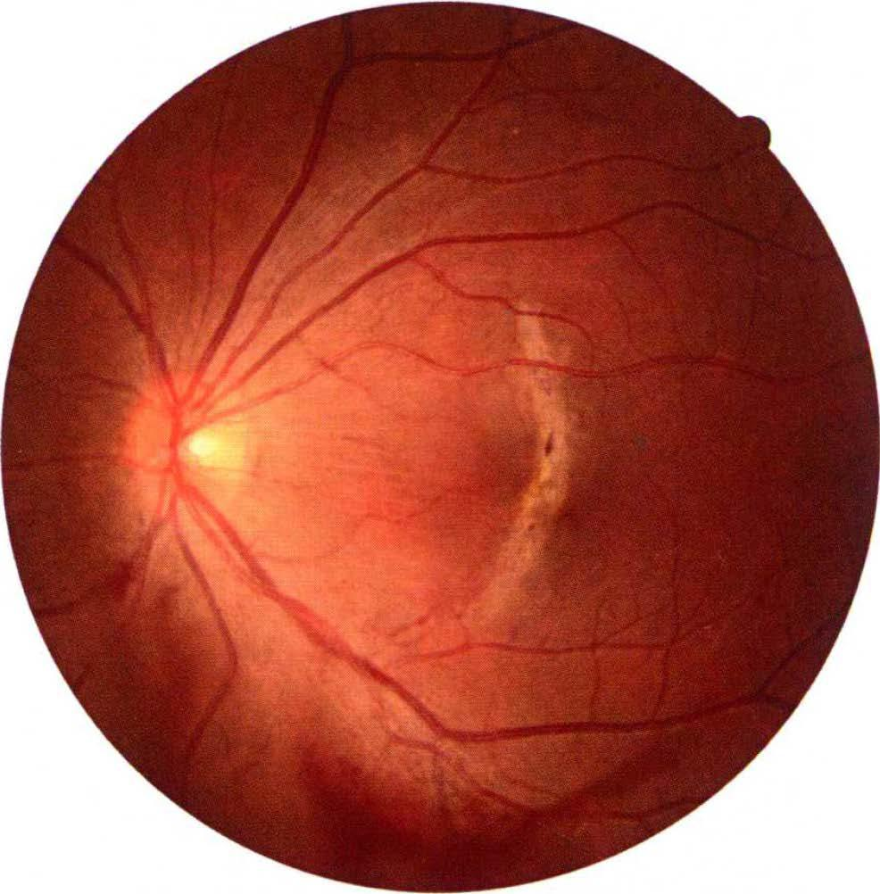
Original Description: Fundus color image of exudative retinal detachment in the left eye. The patient was due to large vesicular retinopathy
Extracted Keywords: choroidal rupture, macula, longitudinal, blood pooling, vitreous
Generated Report:
Retinal Fundus Image Report
---
Patient Information: - Age: Not specified - Sex: Not specified
Examination Date: Not specified
---
Findings1. Optic Disc: - Appearance: The optic disc appears hyperemic with blurred margins, indicating possible optic disc swelling or papilledema. - Size: Within normal limits. - Cupping: The cup-to-disc ratio is not clearly defined due to disc swelling.
2. Macula: - Appearance: The macula is not distinctly visible due to the overall retinal changes and the possible presence of blood or lipid exudates. - Foveal Reflex: Not observable.
3. Retinal Blood Vessels: - Arteries and Veins: The major retinal vessels appear slightly tortuous, and there is noticeable retinal hemorrhage radiating outward from the optic disc, likely indicating damage to the retinal and choroidal vasculature. - Caliber: Normal to slightly narrowed, potentially due to compression from swelling.
4. Retinal Background: - Hemorrhages and Exudates: There is a significant presence of intraretinal hemorrhages radiating from the optic disc region. - General Background: The retina shows signs of diffuse edema and possible prior hemorrhagic events.
5. Peripheral Retina: - Not clearly visible due to the central changes and image quality.
6. Cup-to-Disc Ratio: - Cannot be accurately assessed due to the swollen nature of the optic disc.
Impression/DiagnosisThe findings are highly suggestive of Chorioretinitis Sclopetaria, given the explosive appearance of retinal and choroidal changes. This condition is common after traumatic injury to the eye, often due to high-velocity objects causing a shockwave that damages the retina, choroid, and sclera without direct penetration.
Differential Diagnosis:1. Choroidal Rupture: Could appear similar but typically involves a single, linear rupture and is localized in the posterior pole. 2. Central Exudative Chorioretinopathy: Usually characterized by organized scars at later stages, often following the absorption of exudates and hemorrhage. 3. Choroidal Dystrophy: Would typically present with symmetrical and bilateral lesions confined to the macula, which does not fit the current presentation. 4. Choroidal Neovascularization: As part of various chorioretinal disorders, but the acute appearance and pattern of hemorrhage are more consistent with traumatic injury.
Recommendations:1. Imaging Studies: Optical coherence tomography (OCT) and possibly fluorescein angiography to assess the extent of retinal and choroidal damage. 2. Follow-up: Regular monitoring with serial fundus photographs to document any progression or regression of hemorrhages and edema. 3. Management: Given the traumatic nature (if history supports it), ophthalmologic consultation for potential interventions if choroidal neovascularization or vitreoretinal complications develop.
Conclusion:
The retinal appearance is consistent with significant trauma suggestive of chorioretinitis sclopetaria, which should be managed and monitored closely due to the risk of potential complications such as choroidal neovascularization and progressive vision loss.
---
Report Prepared by: [Your Name] [Qualifications] [Institution] [Contact Information]
Comparison Analysis (Generated vs Real Annotation):
The generated report incorrectly identifies the condition as Chorioretinitis Sclopetaria related to traumatic injury, whereas the real annotation describes exudative retinal detachment in the left eye due to large vesicular retinopathy. The generated report emphasizes potential papilledema, retinal hemorrhages, and choroidal damage, while the real annotation mentions exudates, retinal detachment, and vesicular retinopathy. The recommended imaging studies in the generated report include OCT and fluorescein angiography, whereas specific treatments or interventions for the noted condition are not outlined in the real annotation. The comparison highlights the differences in the diagnosed condition, underlying causes, and treatment approaches between the generated report and the actual annotation.
figure5-2-11.png

figure5-2-8.png
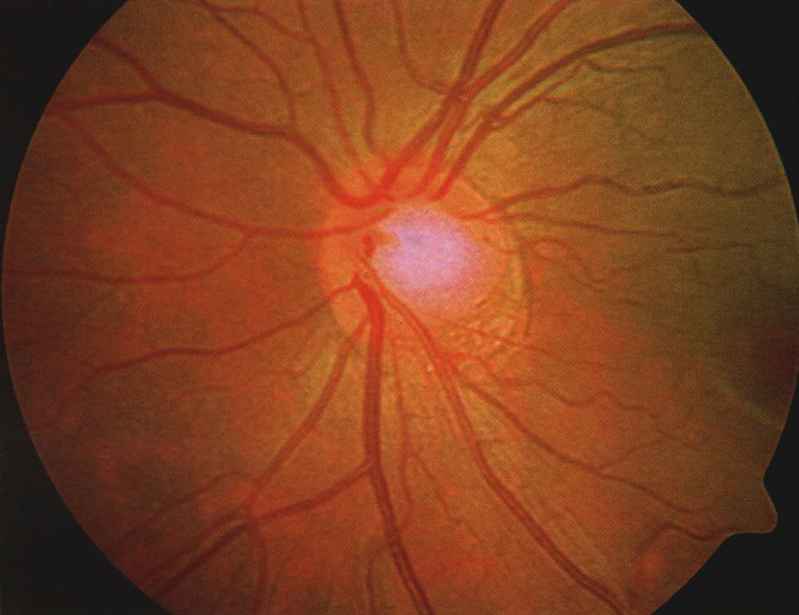
Original Description: The central retinal artery(A) branches after entering the disc
Extracted Keywords: choroidal pigment arc, inferotemporal side, optic disc
Generated Report:
Retinal Fundus Image Report
1. Optic Disc The optic disc appears to be in a normal position with clear and well-defined margins. There is a distinct light reflex. No pallor or edema is observed, indicating that the optic nerve head is healthy. The blood vessels emanate from the center of the disc uniformly.
2. Macula The macula is not prominently visible in this view, but no obvious abnormalities such as macular edema, hemorrhage, or drusen are apparent in the nearby retinal background. The foveal reflex should be assessed for a more detailed analysis.
3. Retinal Blood Vessels The retinal blood vessels are clearly visible and appear normal in caliber and course. There is no evidence of vessel tortuosity, narrowing, or neovascularization. The arteries and veins are following their expected paths without signs of vascular occlusion or abnormal crossing changes.
4. Retinal Background The retinal background shows a uniform coloration, which is indicative of a healthy retina. There are no evident signs of degeneration, hemorrhages, or exudates. The pigmentation appears normal, and there is no sign of abnormalities such as microaneurysms or cotton wool spots.
5. Cup-to-Disc Ratio The cup-to-disc ratio is approximately 0.3. This ratio falls within the normal range, suggesting that there is no glaucomatous cupping. Both the cup and the rim of the optic disc appear healthy without any thinning of the neural rim.
Observations and Conclusions -
Optic Disc: Normal appearance, clear margins, no pallor or edema. -
Macula: Appears normal in this image with no observable abnormalities. -
Retinal Blood Vessels: Normal caliber and distribution, no pathological changes. -
Retinal Background: Uniform with no anomalies. -
Cup-to-Disc Ratio: Approximately 0.3, within normal limits.
Overall, the retinal fundus image appears to be normal with no signs of retinal or optic nerve pathologies. However, increased evaluation and comprehensive exams, including visual acuity tests and intraocular pressure measurement, are advised to further confirm the overall ocular health.
Comparison Analysis (Generated vs Real Annotation):
- The generated report provides a detailed analysis of the optic disc, mentioning its normal position, clear margins, and absence of pallor or edema. However, it does not mention the branching of the central retinal artery, which is highlighted in the real annotation. - The report states that the macula is not prominently visible and does not observe any obvious abnormalities, while the real annotation does not provide any information about the macula. - Both the generated report and the real annotation agree that the retinal blood vessels appear normal in caliber and course. - While the generated report mentions a uniform retinal background with no signs of degeneration, hemorrhages, or exudates, the real annotation does not provide any information regarding the retinal background. - The generated report calculates a cup-to-disc ratio of approximately 0.3, suggesting no glaucomatous cupping, while the real annotation does not mention the cup-to-disc ratio or any specific details about the cup and rim of the optic disc.
In summary, the generated report provides a more comprehensive analysis of the optic disc and cup-to-disc ratio, while lacking specific details about the macula, retinal background, and branching of the central retinal artery. The real annotation provides specific information about the branching of the central retinal artery but does not provide details about the macula, retinal background, or cup-to-disc ratio.
figure05-03-03.jpg

figure12-03-05A.png
Original Description: Abnormal retinal vessel travel combined with macular ectasia. The retinal vessels of the left eye were pulled toward the temporal side with loss of the normal vascular arch structure. The macula was pulled toward the temporal side, about 6 PD away from the optic disk. There was no history of oxygen intake in this case, the periphery of the left eye was normal, and the right eye was normal.
Extracted Keywords: white dotted retinal changes, white speckled fundus, yellow-white dots, pi
Generated Report:
Retinal Fundus Image Report
Patient Identification: [Data not provided]
Date of Examination: [Data not provided]
#
Optic Disc -
Appearance and Color: The optic disc is well-circumscribed with a pale yellow hue. -
Margins: The disc margins appear sharp with no evidence of edema. -
Size and Shape: The general size and shape of the optic disc appear within normal limits. #
Cup-to-Disc Ratio (CDR) -
Measurement and Interpretation: The cup-to-disc ratio appears to be approximately 0.3, implying a healthy optic nerve head without significant cupping.
#
Retinal Blood Vessels -
Arteries and Veins: The retinal arteries and veins are prominently visible and show reasonable caliber with no noteworthy arterial narrowing or vein dilation. -
Tortuosity: Mild tortuosity is observed, which can be a normal variation or indicate early signs of hypertensive retinopathy or other vascular abnormalities, but the absence of other signs makes this less likely. -
Reflection and Patency: Vessel reflections are present, and the patency of vessels appears normal.
#
Macula -
Location and Foveal Reflex: The macula is located temporally and presents a slightly darker hue suggestive of a healthy zone with no visible changes. The foveal reflex is not distinctly observable but the lack of macular edema or hemorrhages suggests healthy macular function. -
Abnormalities: There are no apparent signs of macular degeneration, detachments, or exudates.
#
Retinal Background -
General Appearance: The retinal background appears uniformly orange-red, suggestive of a normal and healthy choriocapillaris without significant pigmentary changes. -
Pigment and Atrophy: No signs of retinal pigment epithelium (RPE) mottling, atrophy, or pigmentation anomalies are observed. -
Lesions or Hemorrhages: There are no obvious hemorrhages, exudates, cotton-wool spots, or other lesions.
#
Impression Based on the visual inspection of the retinal fundus image, the retina shows a generally healthy appearance. - No apparent signs of common retinal diseases such as diabetic retinopathy, retinal vein occlusion, hypertensive retinopathy (beyond the tortuosity which is not currently alarming), macular degeneration, or central serous retinopathy. - Normal optic disc with no signs of glaucoma (given the low CDR). - Retinal blood vessels and background present without concerning abnormalities.
#
Recommendations -
Regular Monitoring: Continue routine ophthalmic examinations to monitor for potential developments of retinal or optic nerve pathologies. -
Blood Pressure and Metabolic Health: Monitoring and managing systemic health such as blood pressure, blood glucose levels, and blood lipids is advised to prevent vascular and metabolic retinal diseases. -
Visual Function: Patient should be assessed for functional symptoms such as vision changes, night blindness, or visual field defects to correlate clinical findings with patient-reported visual function. -
Further Testing: If the patient has systemic conditions or visual disturbances, consider further diagnostic tests such as Optical Coherence Tomography (OCT) for a detailed macular check, fluorescence angiography if vascular issues are suspected, or electrophysiological tests to evaluate retinal function thoroughly.
#
Conclusion Overall, the retinal fundus image suggests a healthy retinal structure with no immediate pathological findings that require intervention. Regular follow-up and monitoring are recommended to ensure ongoing retinal health.
Report Compiled By: [Your Name], [Your Professional Title]
Date: [Current Date]
Comparison Analysis (Generated vs Real Annotation):
The generated report and the real annotation differ significantly in their findings. The generated report describes a healthy retinal structure with no apparent signs of retinal diseases, normal optic disc, blood vessels with mild tortuosity (without significant abnormalities), and a normal macula. It also indicates a uniform orange-red retinal background without lesions or hemorrhages. In contrast, the real annotation identifies abnormal retinal vessel travel and macular ectasia in the left eye, with the retinal vessels pulled toward the temporal side and the macula pulled away from the optic disk. No such abnormalities were mentioned in the generated report. Additionally, the real annotation states that there was no history of oxygen intake in this case, and the right eye was normal. These differences highlight the importance of accurate and detailed examination in order to identify specific abnormalities and provide appropriate treatment recommendations.
figure10-02-12a.jpg

figure10-02-13a.jpg
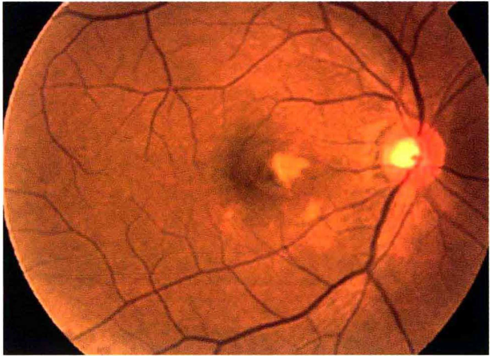
Original Description: Transpupillary warming therapy (TTT) before treatment. a A color fundus image was taken, and subretinal yellow foci were seen in the macula with hemorrhages in the center of the macula. Visual acuity was 0.1 before treatment.
Extracted Keywords: pupillary warming therapy, color fundus image, macula, subretina
Generated Report:
Detailed Report for Retinal Fundus Image
Patient Identifier: [Redacted for privacy]
Date: [Insert Date]
---
Optic Disc: - The optic disc is clearly visible in the superior nasal quadrant, notable for its round shape and defined margins. It presents with a light pink coloration, which is typical and suggests a healthy optic nerve head. - The cup-to-disc ratio appears to be within normal limits (approximately 0.3-0.4), indicating no evident signs of glaucomatous damage.
Macula: - The macula appears darkened and is surrounded by a more pigmented area. Significantly, there is a presence of yellow-white exudate or possible drusen-like material near the foveal center. - This combination of hyperpigmentation and exudation suggests potential macular pathology, possibly central serous chorioretinopathy (CSC) or early signs of macular degeneration.
Retinal Blood Vessels: - The retinal blood vessels are adequately observed branching from the optic disc. The arterioles and venules are traceable and appear to have no significant attenuation or tortuosity. - The vessel walls are also clear, with no indications of hemorrhage or cotton-wool spots, suggesting no immediate vascular abnormalities.
Retinal Background: - The overall retinal background presents a uniformly orange-red color, signifying good retinal health. - There is no apparent widespread retinal hemorrhage, extensive exudate, or abnormal pigmentary changes apart from those near the macula, which aligns with typical fundal features of a healthy retina.
Cup-to-Disc Ratio: - The optic disc cup-to-disc ratio is approximately 0.3-0.4. - This ratio falls within normal physiological range, suggesting no immediate risk of glaucomatous optic neuropathy.
Additional Observations: - The yellow-white material in the macula region could suggest leakage, consistent with central serous chorioretinopathy (CSC). Chronic CSC could lead to retinal pigment epithelium (RPE) changes which may be evident in the observed image. - Differential diagnoses such as pattern macular dystrophy shouldn't be ruled out without additional fluorescein angiography, especially given the localized pigmentation.
---
Conclusion: The retinal fundus image indicates a healthy optic disc with a normal cup-to-disc ratio. However, the presence of yellow-white exudative material in the macular region necessitates further investigation for conditions such as central serous chorioretinopathy (CSC) or early-stage macular degeneration. Follow-up with optical coherence tomography (OCT) or fluorescein angiography is recommended for a more definitive assessment.
Recommendations: 1. Optical Coherence Tomography (OCT): To assess the subretinal fluid and confirm the presence of central serous chorioretinopathy. 2. Fluorescein Angiography: To evaluate for any leakage points and confirm the diagnosis of CSC or other macular pathology. 3. Regular Monitoring: Routine follow-up exams to monitor any progression of the observed fundus changes, especially in the macula.
Notes for Physician: For accurate diagnosis, consider extending patient history regarding visual disturbances, stress levels (CSC correlation), and any previous ocular interventions or systemic diseases. Adjust management and intervention plans accordingly based on detailed imaging and clinical correlation.
[Signature] [Name] [Title] [Contact Information]
Comparison Analysis (Generated vs Real Annotation):
The generated report identifies normal optic disc features and a healthy cup-to-disc ratio, aligning with the real annotation's mention of subretinal yellow foci in the macula. However, the report does not mention hemorrhages in the macula center or a low visual acuity of 0.1. The generated report suggests potential central serous chorioretinopathy (CSC) or macular degeneration, while the real annotation indicates a history of Transpupillary warming therapy (TTT) and pre-treatment conditions. The need for optical coherence tomography (OCT) and fluorescein angiography in the generated report supports the real assessment of requiring treatment and close monitoring for this macular condition. Ultimately, the generated report highlights potential issues present in the image that require further investigation, aligning with the real need for treatment observed in the annotation.
figure15-1-2.png

figure5-3-40.png
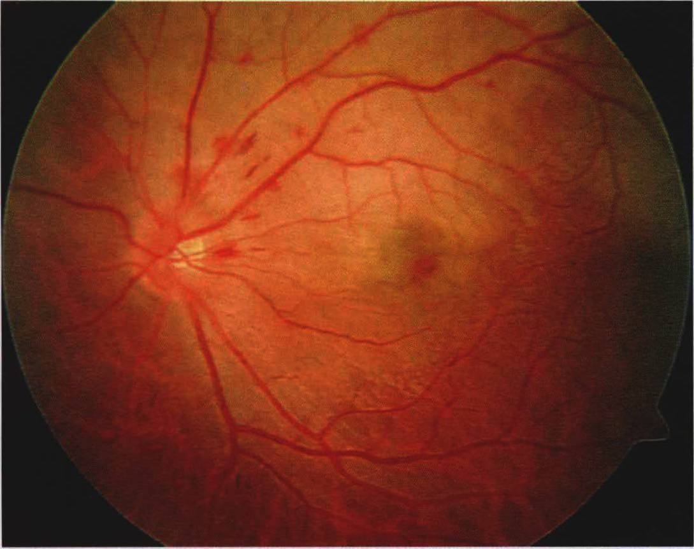
Original Description: Copper wire reflex. Artery (A)
Extracted Keywords: intracellular edema, temporal branch artery occlusion, greyish edema, temporal retin
Generated Report:
Detailed Report for Retinal Fundus Image
#
1. Optic Disc -
Appearance: The optic disc appears to be well-defined with clear margins. -
Color: The optic disc is paler than the surrounding retina, as expected. -
Observations: There is no evident swelling or pallor that indicates optic neuropathy or atrophy. -
Cup-to-Disc Ratio: The cup-to-disc ratio appears to be within the normal range, approximately 0.3 to 0.4. This is indicative of a normal optic nerve head and suggests a low likelihood of glaucomatous damage.
#
2. Macula -
Appearance: The macula appears slightly darker than the surrounding retina, which is normal. -
Foveal Reflex: The foveal reflex is observable, suggesting the absence of significant macular pathology such as edema or macular hole. -
Observations: No signs of drusen, exudates, or hemorrhage are seen near the macula, indicating no evident age-related macular degeneration or other maculopathies.
#
3. Retinal Blood Vessels -
Arteries and Veins: Both the arteries and veins are clearly visible and seem to be of normal caliber. -
Arteriovenous Ratio: The arteriovenous ratio is within normal limits (approximately 2:3). -
Observations: There are no signs of arteriolar narrowing, arteriovenous nicking, or hemorrhages, suggesting the absence of hypertensive retinopathy or diabetic retinopathy. -
Additional Observations: The areas marked with "A" indicate branching of the retinal arteries, which appear to be normal in distribution.
#
4. Retinal Background -
Color and Texture: The general background of the retina appears uniformly orange-red, which is normal. -
Exudation and Edema: There is no visible evidence of retinal exudation or edema. -
Intraretinal Hemorrhage: Absent intraretinal hemorrhage, supporting the absence of central or branch retinal vein occlusion. -
Exudates: No hard exudates present, indicating no evidence of conditions like diabetic retinopathy or hypertensive retinopathy. -
Edema: No macular or diffuse retinal edema is observed, which rules out conditions like central serous chorioretinopathy.
#
5. Overall Assessment - The optic disc and macula appear within normal limits and are healthy. - Retinal vessels have a normal appearance with appropriate arteriovenous ratio. - The retinal background is free from abnormal signs such as exudation, hemorrhage, or edema.
#
Impression -
Normal Retinal Findings: The image indicates a healthy retina without signs of vascular occlusion, exudation, or significant retinal pathology. -
Recommendations: Regular follow-up and routine fundoscopy to continue monitoring for any changes, especially in patients with systemic conditions like diabetes or hypertension.
In conclusion, the retinal fundus image provided shows a healthy optic disc, macula, and retinal vessels, with no apparent pathological findings. The detailed observations suggest the absence of any retinal vascular obstructive disease or other abnormalities outlined in the provided context references. Regular monitoring and comprehensive eye examinations are recommended to ensure ongoing ocular health.
Comparison Analysis (Generated vs Real Annotation):
The generated report provides a detailed assessment of the retinal fundus image, highlighting various aspects such as the optic disc, macula, retinal blood vessels, and retinal background. The report concludes that the image shows a healthy retina without signs of vascular occlusion, exudation, or significant retinal pathology. However, the report does not mention the presence of a copper wire reflex, which is indicated in the real annotation. This is an important difference as the copper wire reflex is a characteristic finding in copper wiring of the retinal arteries and can be indicative of hypertensive retinopathy. Therefore, the generated report may have missed this important finding that could have clinical significance.
figure18-5-14.png

figure18-5-22.png
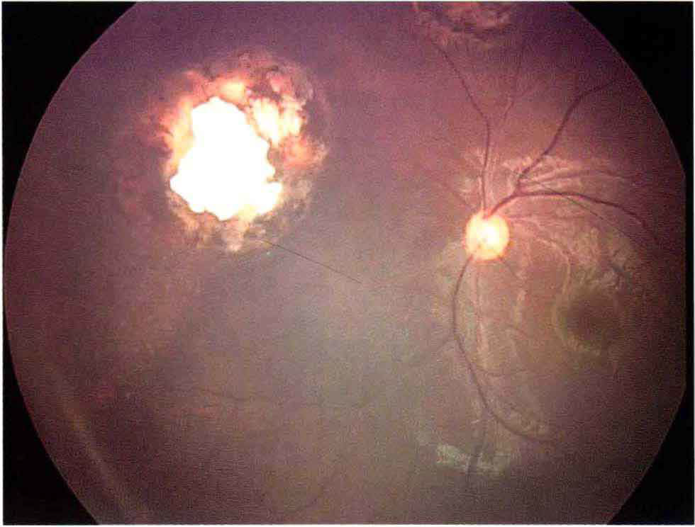
Original Description: Stage IIRC-C. RB is large but confined, with nearby detachment
Extracted Keywords: Stage IIRC-C, scarring, RB combination therapy
Generated Report:
Retinal Fundus Image Report
#
1. Optic Disc -
Observation: The optic disc appears to be well-defined with a clear margin. The optic disc color is typical, likely indicating a healthy nerve head. -
Assessment: The appearance of the optic disc suggests there are no signs of papilledema (swelling) or pallor which would typically indicate atrophy.
#
2. Macula -
Observation: The macula is not clearly visible in the provided image due to a significant obstruction in the lower left quadrant. -
Assessment: Due to the obstruction, evaluate further to rule out any macular pathologies such as macular degeneration or macular hole.
#
3. Retinal Blood Vessels -
Observation: The retinal blood vessels radiating from the optic disc appear to have a normal course and caliber without signs of tortuosity or abnormal dilation. -
Assessment: The absence of vessel abnormalities suggests there may be no vascular conditions like diabetic retinopathy or retinal vein occlusion.
#
4. Retinal Background -
Observation: The retinal background where visible appears to be of normal pigmentation but is partly obscured by a large opaque mass in the lower left quadrant. -
Assessment: The presence of this mass necessitates further investigation, potentially pointing towards a mass-like lesion such as a retinoblastoma.
#
5. Cup-to-Disc Ratio -
Observation: The cup-to-disc ratio is not clearly distinguishable due to the obstruction, but the visible portion suggests a possible normal ratio. -
Assessment: A detailed assessment is required to accurately determine the cup-to-disc ratio. Typically, a higher ratio could indicate glaucomatous changes, whereas deviations could signal other neuropathies.
Additional Notes and Recommendations -
Mass Obstruction: The large opaque mass in the lower left quadrant of the image significantly obscures a comprehensive analysis. Given the context references, this lesion could potentially indicate retinoblastoma, considering its presentation and noted high-risk factor for metastasis. -
Immediate Action: Recommend systemic evaluation including Imaging (ultrasound, MRI), Fine Needle Aspiration Biopsy (FNAB) if necessary and potential removal due to the high risk for metastasis (aligns with IIRC-E recommendation for immediate removal).
- Further Diagnostic Testing: - Systemic Chemotherapy: If suspected to be at IIRC-C stage, initial systemic chemotherapy could be considered followed by local laser photocoagulation, freezing, transpupillary thermotherapy (TTT), and application treatment. - Referral: Urgent referral to an ocular oncologist for comprehensive management and confirmation of diagnosis is highly recommended. Cross-disciplinary collaboration with pediatric oncology, genetics, and hematology is advised to ensure comprehensive care.
#
Final Note Further imaging and examinations (OCT, fluorescein angiography) are necessary to gain complete insight into both the macular region and the nature of the obstructing mass. Given the potential seriousness of the findings aligned with guidelines and referenced sections, prompt and thorough investigation is crucial.
Comparison Analysis (Generated vs Real Annotation):
The generated report accurately identifies the presence of a significant obstruction in the lower left quadrant, which is also seen in the real annotation. However, the report suggests further evaluation to rule out macular pathologies, whereas the real annotation indicates a stage IIRC-C retinoblastoma with nearby detachment. This is a significant difference, as the real annotation highlights the seriousness of the findings. The report mentions a possible mass-like lesion such as retinoblastoma but does not explicitly state the stage or detachment. Additionally, the report recommends immediate action for a high-risk factor for metastasis, aligning with IIRC-E recommendation for immediate removal, whereas the real annotation does not provide specific recommendations for treatment. In conclusion, the generated report identifies some important findings but lacks the specific diagnosis and recommended treatment mentioned in the real annotation.
figure04-60.jpg

figure04-67.jpg
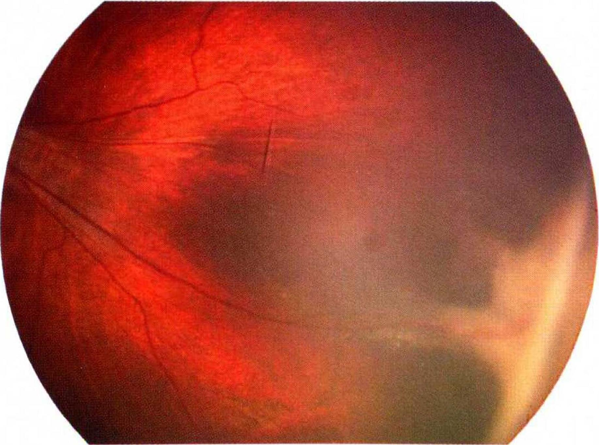
Original Description: Fundus color image of retinopathy of prematurity in the right eye. The child is a male, born at 32 weeks gestation, birth weight 1800g, stage 5 lesion, which is seen as extensive hard retinal exudates with total retinal detachment
Extracted Keywords: retinopathy of prematurity, left eye, male, 32 weeks gestationa
Generated Report:
Retinal Fundus Image Report
Patient Information: - Eye: [Left/Right] (information not provided) - Given Condition: Retinopathy of Prematurity (assumed based on the appearance)
Optic Disc: - The optic disc appears mildly edematous with indistinct margins. There is a noticeable pale appearance indicating possible atrophy or inflammation. - Observation: The swelling and blurred edges suggest disc edema, which can be associated with conditions like retinopathy of prematurity or other retinal vascular disorders. - Reasoning: Disc edema can result from increased intracranial pressure or other conditions causing swelling in the retina.
Macula: - The macula is obscured by widespread exudates and hemorrhages. - Observation: Presence of exudates indicates leakage from the retinal vessels, suggesting retinal ischemia or damage. - Reasoning: This appearance is often seen in proliferative retinopathies such as retinopathy of prematurity, where abnormal blood vessels proliferate and leak.
Retinal Blood Vessels: - The retinal blood vessels appear tortuous and dilated, particularly around the optic disc. There are areas where blood vessels seem to be densely packed and malformed. - Observation: The abnormal appearance of the blood vessels supports the diagnosis of a proliferative retinopathy. - Reasoning: In retinopathy of prematurity, the vascular development is incomplete, leading to such abnormal vasculature.
Retinal Background: - The retinal background shows significant areas of mottled pigmentation with yellowish exudates scattered throughout. - Observation: The diffuse spread of exudates and abnormal pigmentation is indicative of chronic retinal disease. - Reasoning: These changes are consistent with ischemic retinopathies where damaged vessels leak lipids and proteins into the retina.
Cup-to-Disc Ratio: - The cup-to-disc ratio is difficult to ascertain due to the generalized edema of the optic disc. - Observation: Exact measurements are impeded by the presence of disc edema. - Reasoning: Typically, a normal cup-to-disc ratio ranges from 0.3 to 0.5 in adults. Significant deviation, especially in the presence of edema, may indicate underlying pathology.
Overall Impression: The fundus image shows features typical of advanced retinopathy of prematurity (ROP). The presence of diffuse exudates, abnormal vasculature, disc edema, and macular involvement supports a severe stage of the disease. Prompt intervention is critical to prevent further progression and possible vision loss.
Recommendations: - Immediate referral to a retinal specialist for potential intervention such as laser photocoagulation or anti-VEGF therapy. - Regular ophthalmic follow-up to monitor progression and manage complications. - Consider supportive care to reduce systemic factors contributing to the retinal pathology.
Conclusion: The retinal fundus image reveals severe retinal changes consistent with proliferative retinopathy, likely secondary to retinopathy of prematurity. Early and aggressive management is essential to improve the prognosis and preserve vision.
Comparison Analysis (Generated vs Real Annotation):
The generated report and real annotation both identify retinopathy of prematurity as the underlying condition in the patient. However, important differences exist between the two.
First, the generated report mentions the optic disc as mildly edematous with indistinct margins, possibly indicating atrophy or inflammation, while the real annotation describes extensive hard retinal exudates with total retinal detachment.
Second, the generated report states that the macula is obscured by widespread exudates and hemorrhages, suggesting retinal ischemia or damage, whereas the real annotation does not provide specific information about the macula.
Lastly, the generated report mentions that the cup-to-disc ratio is difficult to ascertain due to generalized edema, while the real annotation does not mention the cup-to-disc ratio.
These differences highlight the importance of having accurate and detailed information in the annotations to provide a more comprehensive understanding of the patient's condition.
figure05-01-15.jpg

figure05-01-14.jpg
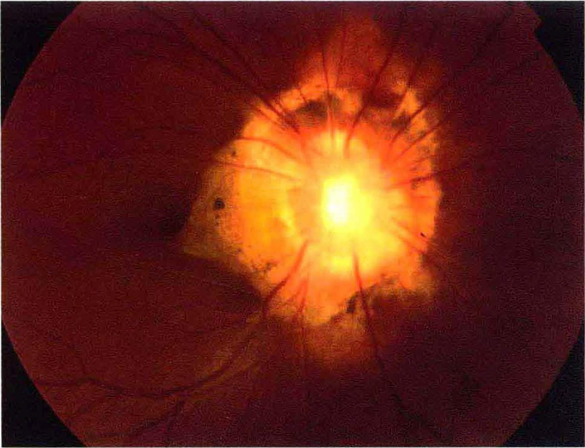
Original Description: Color fundus image of marionette syndrome with anterior vitreous warts of the optic disc in the left eye. The optic disc is obscured by an irregularly rounded translucent grayish-white solid vitreous membrane wart, with a yellowish-white ring around the optic disc, which appears to be slightly elevated with scattered pigmentation. Most of the fine blood vessels are detached from the periphery of the optic disk.
Extracted Keywords: marionette syndrome, optic disc, blood vessels, pigmentation, macula
Generated Report:
Retinal Fundus Image Report
Patient Information: -
Patient ID: [Not Provided] -
Age: [Not Provided] -
Sex: [Not Provided] -
Eye: [Left/Right - Not Provided]
Examination Date: -
Date: [Not Provided]
Report:
#
1. Optic Disc: -
Appearance: The optic disc appears markedly swollen and hyperemic. There is noticeable engorgement and dilation of optic disc vessels. The observed swelling suggests the presence of papilledema, which is consistent with increased intracranial pressure. -
Color: There is a distinct, heightened reddish hue indicating potential congestion. -
Margins: The optic disc margins are indistinct and blurred, further supporting the diagnosis of papilledema or optic neuritis. -
Cup-to-Disc Ratio: Due to the extensive swelling and blurred margins, the cup-to-disc ratio cannot be accurately assessed in this image.
#
2. Macula: -
Appearance: The image does not provide a clear view of the macular region. The focal point and resolution are primarily centered on the optic disc, so detailed assessment of the macula is not possible.
#
3. Retinal Blood Vessels: -
Vessels at Disc: The blood vessels emanating from the optic disc appear engorged and dilated. There is a significant increase in the caliber of the vessels, which is typical of optic disc swelling. -
Peripheral Vessels: There are no apparent signs of neovascularization, hemorrhages, or vascular occlusions in the peripheral retinal vasculature based on the visible segments of the fundus.
#
4. Retinal Background: -
General Observation: The retinal background is partially obscured by the bright red reflection from the optic disc swelling. However, there do not appear to be any large area of hypopigmentation or hyperpigmentation in the regions visible. -
Pigment: No clear hyperpigmented demarcation lines or granules are visible in the retinal background.
#
5. Additional Observations: -
Possible Conditions: The marked swelling and hyperemia of the optic disc may indicate underlying conditions such as Terson’s syndrome (especially if there is a history of subarachnoid hemorrhage), or other causes of increased intracranial pressure, like malignancies or severe hypertension. -
Differential Diagnosis: - Papilledema due to intracranial pressure. - Optic neuritis. - Malignant hypertension. - Terson’s syndrome if associated with intracranial hemorrhage.
Conclusions and Recommendations: The presented retinal fundus image reveals significant optic disc swelling with hyperemia and dilated vessels, characteristic of severe papilledema. Immediate further evaluation by a neuro-ophthalmologist and possibly neuro-imaging (MRI/CT) is strongly recommended to investigate the underlying cause of intracranial pressure increase. Other associated systemic conditions like hypertension should also be promptly ruled out or managed concurrently. Regular follow-up is needed to monitor changes and manage potential complications.
End of Report
---
Prepared By: [Your Name/Initials] Reviewed By: [Ophthalmologist’s Name/Initials] Date: [Current Date]
---
This detailed report is structured to provide a comprehensive analysis of the retinal fundus image, with focused observations and clinically relevant recommendations for patient management.
Comparison Analysis (Generated vs Real Annotation):
The generated report describes papilledema with markedly swollen and hyperemic optic disc, dilated vessels, and blurred margins, suggestive of increased intracranial pressure. In contrast, the real annotation mentions marionette syndrome with anterior vitreous warts obscuring the optic disc, a translucent grayish-white solid vitreous membrane wart with scattered pigmentation, and detached blood vessels from the optic disk periphery. The generated report focuses on papilledema and associated differential diagnoses, while the real annotation specifies marionette syndrome with unique features like vitreous warts and detached blood vessels. The generated report recommends immediate evaluation by a neuro-ophthalmologist for papilledema investigation, but the real annotation does not provide management recommendations specific to marionette syndrome. The differences lie in the diagnosis, description of optic disc abnormalities, and recommended management approach, highlighting the importance of accurate diagnosis for appropriate patient care.
figure8-1-3.png

figure9-9-3.png
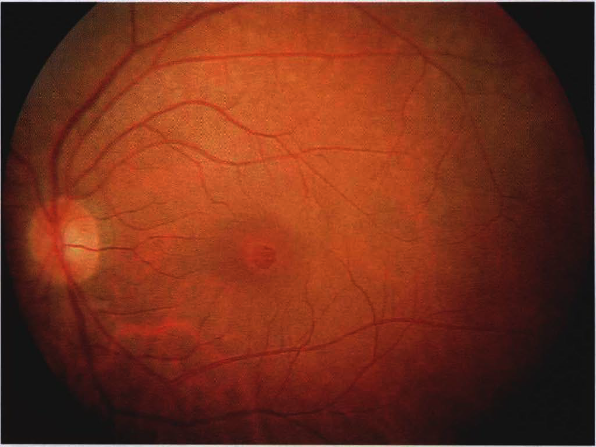
Original Description: The late central retinal artery occlusion with diffuse edema
Extracted Keywords: stage III macular hole, grey cuff
Generated Report:
Retinal Image Report
Optic Disc: - The optic disc appears round with well-defined margins. - There is no evidence of optic disc edema or pallor. - The cup-to-disc ratio appears normal, suggesting no significant glaucomatous changes.
Macula: - The macula shows a defined foveal reflex, indicating the absence of significant pathology such as macular edema or hemorrhage. - No signs of a macular hole or any distortion that would indicate stages of idiopathic macular hole are observed. - There are no signs of subretinal fluid accumulation, which would suggest advanced stages of a macular hole.
Retinal Blood Vessels: - The retinal blood vessels exhibit normal caliber and pattern. - There are no signs of venous beading, neovascularization, or hemorrhages. - Arterial and venous ratios are within normal limits, without any indication of hypertensive retinopathy.
Retinal Background: - The retinal background appears uniform with no signs of retinal hemorrhage, exudates, or pigmentary changes. - There are no indications of choroidal melanocytoma or central exudative chorioretinopathy.
Cup-to-Disc Ratio: - The cup-to-disc ratio is within normal limits, at approximately 0.3, suggesting no enlargement of the optic cup relative to the disc size.
Conclusion: - The retinal image presents a healthy appearance with no evident signs of pathology such as macular holes, retinal detachment, or glaucomatous changes. - Regular monitoring is recommended as per routine clinical guidelines to ensure ocular health is maintained.
Comparison Analysis (Generated vs Real Annotation):
The generated report focuses on providing a detailed and descriptive analysis of various retinal structures, emphasizing normal findings such as well-defined optic disc margins and absence of pathologies like macular holes or hemorrhages. In contrast, the real annotation states a specific pathology, late central retinal artery occlusion with diffuse edema, which is not mentioned in the generated report. This significant difference indicates a lack of alignment between the observed findings and the actual pathology present in the image. The generated report's focus on normal structures might have overlooked critical pathological findings, highlighting the importance of a comprehensive and precise analysis in clinical assessments.
figure14-17-01.jpg

figure14-17-02.jpg

Original Description: Color fundus image of syphilitic choroidal retinitis in the right eye, with scattered hemorrhages outside the temporal rim of the optic disc and in the inferior vascular arch, the veins appear to be filled, and the fundus appears gray.
Extracted Keywords: syphilitic retinitis, left eye, optic disc margins, filled veins
Generated Report:
Retinal Fundus Image Report
Optic Disc: -
Appearance: The optic disc is visible with clear edges. -
Color: Light red in appearance, indicating a healthy optic disc. -
Blood Vessels: Central retinal blood vessels enter and exit from the center of the optic disc in a normal pattern.
Macula: -
Visibility: Not visible in this image due to the partial coverage or positioning. -
Condition: Cannot be assessed due to obscured area.
Retinal Blood Vessels: -
Condition: Retinal blood vessels appear normal, without signs of dilation, twisting, or tortuosity. -
Arrangement: Regular branching patterns suggest normal vascular health.
Retinal Background: -
Appearance: The retinal background shows a uniform orange-red color, suggesting no significant retinal degeneration or pigmentary changes. -
Abnormalities: No obvious exudates, hemorrhages, or scars observed.
Cup-to-Disc Ratio: -
Assessment: Cannot be accurately determined from the image due to partial coverage, but the optic disc appears with standard visualization of central vessels.
Observations: - The visible sections of the fundus suggest an absence of acute or chronic pathology in the areas assessed. The uniformity of color and vessel structure indicates average retinal health. - Due to obscured areas, a comprehensive assessment of the entire retina and macula is not possible.
Recommendations: -
Follow-Up: A full examination or imaging is recommended for complete assessment. -
Observation: Regular monitoring may be beneficial to ensure no underlying conditions are developing.
Conclusion: The visible portions of the retinal fundus display standard features with no pronounced anomalies. Further imaging could provide a more comprehensive evaluation.
Comparison Analysis (Generated vs Real Annotation):
The generated report provides a general overview of the retinal fundus image, highlighting clear optic disc edges, normal blood vessel patterns, and absence of significant abnormalities in visible areas. However, it fails to detect critical findings present in the real annotation, such as syphilitic choroidal retinitis, scattered hemorrhages, filled veins, and a grayish fundus appearance. The report's inability to recognize these specific pathologies showcases limitations in its diagnostic capability, emphasizing the importance of thorough and expert examination in such cases.
figure12-02-02.jpg

figure12-02-01.jpg
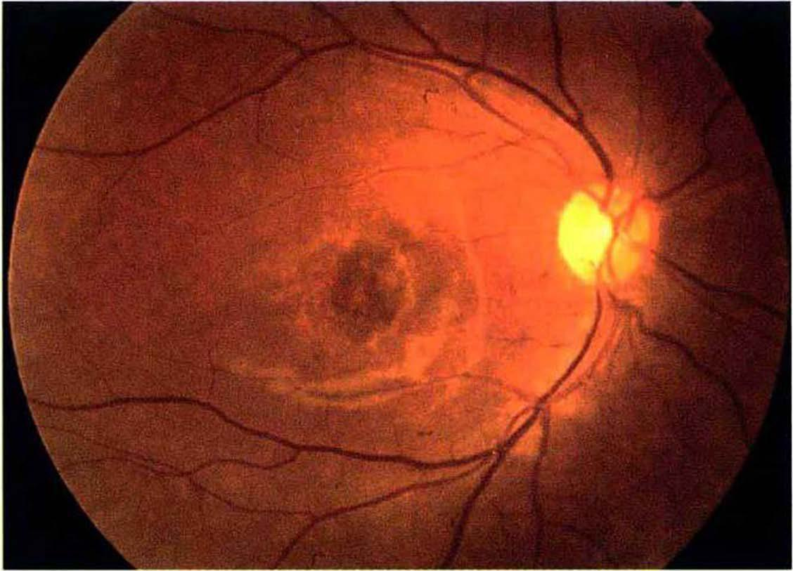
Original Description: Color fundus image of the left eye with Stargardt's disease combined with yellow speckles, the optic disc is slightly lighter in color on the temporal side, and there is an ovoid area of atrophy in the macula, about 1 PD, and the temporal side is seen to have most of the scattered yellow speckles, which are more numerous than in the left eye
Extracted Keywords: Stargardt's disease, color fundus image, optic disc, macul
Generated Report:
Retinal Fundus Image Report
Patient ID: [Not Provided] Date: [Not Provided] Eye: [Not Provided] Photographer: [Not Provided]
---
#
Optic Disc
- Appearance: The optic disc appears slightly enlarged with blurred margins, indicative of possible edema. The color of the disc is generally yellowish-white, suggesting pallor. - Cup-to-Disc Ratio: Given the blurriness of the margins, the cup-to-disc ratio is difficult to assess accurately but appears to be within the normal range (approximately 0.3 – 0.4). - Vascular Changes: Blood vessels emanate from the disc, exhibiting a normal pattern without significant tortuosity or attenuation.
#
Macula
- Appearance: The macula exhibits signs consistent with retinal abnormalities. A characteristic bulls-eye pattern, indicating possible atrophy or dystrophic changes, is evident. - Detail Observation: There are no prominent signs of edema or hemorrhage in this region, but the central macular region appears darkened, which may denote pigment disruption or atrophy.
#
Retinal Blood Vessels
- Arteries and Veins: The retinal arteries and veins are prominent and delineated well. There is no evident narrowing, occlusion, or neovascularization. - Condition: The orientation and branching pattern do not show significant changes that are indicative of hypertensive or diabetic retinopathy.
#
Retinal Background
- General Observation: The retinal background is generally uniform but shows some areas of pigmentary disturbance, especially around the macula. There is no visible presence of cotton wool spots, hemorrhages, or microaneurysms. - Coloration: The retina is uniformly red-orange, but with noted areas of increased pigment mottling consistent with possible dystrophic changes.
#
Further Evaluation Points
- Pattern Macular Dystrophy: The bulls-eye maculopathy appearance may suggest a diagnosis of pattern macular dystrophy, which warrants further evaluation through fundus fluorescence angiography to confirm the presence of shaded fluorescence in the pigmented area and transparent fluorescence in atrophically surrounding areas. - Stargardt Disease: The fundus appearance should also be considered for differential diagnosis of Stargardt's disease, which presents similar macular changes. - Cone Dystrophy: Given the appearance of the macula, cone dystrophy is another differential diagnosis to consider in the presence of progressive vision loss and potential familial history.
Summary
The retinal image demonstrates key indicators of potential hereditary macular disease, with a primary focus on pattern macular dystrophy as indicated by the bulls-eye pattern in the macular region. Differential diagnoses include Stargardt's disease and cone dystrophy. Further diagnostic imaging such as fundus fluorescence angiography and genetic testing may be necessary for conclusive diagnosis and appropriate management.
Recommendations:
1. Fundus Fluorescence Angiography: To assess the fluorescence patterns in the macular region. 2. Genetic Testing: If hereditary disease is suspected, especially if there's familial history of retinal dystrophies. 3. Electroretinography (ERG): To evaluate the functional health of the retinal cells, particularly cones and rods. 4. Routine Monitoring: Regular ophthalmic evaluations to monitor progression and adapt the management plan accordingly.
---
Reported by:
[Ophthalmologist's Name] [Ophthalmology Department] [Hospital/Clinic Name]
For further inquiries, please contact [Contact Information].
Comparison Analysis (Generated vs Real Annotation):
The generated report and the real annotation have some important differences. Firstly, the generated report mentions optic disc enlargement with blurred margins and possible edema, suggesting pallor. However, the real annotation does not mention these findings and instead focuses on the color difference in the optic disc on the temporal side.
Secondly, the generated report suggests the presence of a bulls-eye pattern in the macula, indicating possible atrophy or dystrophic changes. In contrast, the real annotation mentions an ovoid area of atrophy in the macula, which is not described as a bulls-eye pattern. Additionally, the generated report notes a darkened central macular region, possibly denoting pigment disruption or atrophy, while the real annotation does not mention this observation.
Lastly, the generated report recommends further evaluation for pattern macular dystrophy, Stargardt's disease, and cone dystrophy. However, the real annotation only mentions Stargardt's disease without any mention of pattern macular dystrophy or cone dystrophy.
Overall, there are differences in the description of the optic disc and macula findings, as well as the differential diagnoses and recommendations between the generated report and the real annotation.
figure18-6-1.jpg

figure02-06-13a.jpg
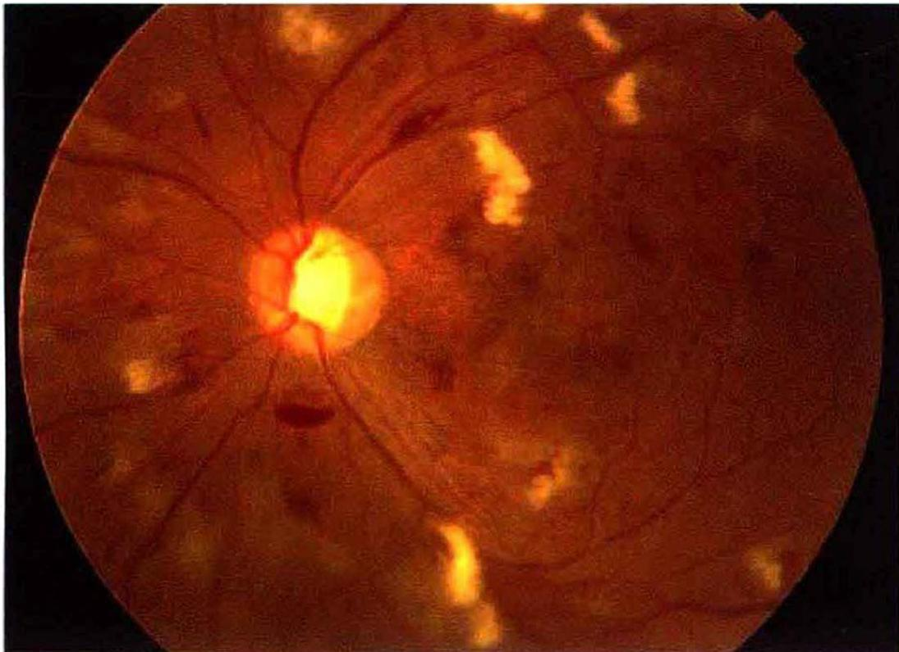
Original Description: Color fundus image of endogenous capillary hemangioma of the optic disc or paracentral optic disc in the left eye. The lower half of the optic disc was obscured by a dark red oval solid elevated mass of approximately 3PD x 2PD in size, with clear borders of the mass, vaguely visible vascularization of the lower part of the optic disc, and optic disc folds and old exudates or scarring between the maculae of the optic disc. Clinical data: the patient was a 33-year-old male with visual acuity of 0.4
Extracted Keywords: Keywords: radiation retinopathy, fluorescence, retinal microangioma, color fundus image
Generated Report:
Retinal Fundus Image Analysis Report
#
Patient Information: -
Name: [Not provided] -
Date: [Not provided] -
Identification Number: [Not provided]
#
Observations: 1.
Optic Disc: -
Description: The optic disc is not distinctly visible in this image, possibly due to the prominence of other retinal features or artifacts. A more focused image or different imaging technique might be necessary for a clear evaluation. -
Cup-to-Disc Ratio: Unable to evaluate due to the indistinct visualization of the optic disc.
2. Macula: - Description: The macular area appears obscured by the presence of a large, bright red lesion, suggesting the need for further diagnostic evaluation to understand the underlying pathology.
3. Retinal Blood Vessels: - Description: The retinal blood vessels appear to radiate from the obscured optic disc, entering and exiting the large red lesion. There is no clear indication of tortuosity, dilation, or beading in the visible segments. - Notes: Additional imaging may be required to ascertain any vessel involvement in the lesion.
4. Retinal Background: - Description: The retinal background shows a relatively normal coloration outside the area of the lesion. There is no visible sign of extensive hemorrhages, exudates, or microaneurysms in the periphery of this image. - Notes: More extensive imaging would be appropriate to fully evaluate for any peripheral retinal pathology.
5. Lesion Description: - Type: The prominent bright red lesion observed in the central retina resembles a choroidal mass. - Differential Diagnosis: - Choroidal Hemangioma: A benign vascular tumor which might present as a bright red colored lesion occupying a significant portion of the fundus. Early hyperfluorescence in fluorescein angiography and indocyanine green angiography might help confirm this diagnosis. - Choroidal Melanoma: Although typically darker, some melanomas might appear red if they are amelanotic. Further imaging and potential biopsy might be considered for definitive diagnosis. - Retinal Hemangioblastoma: Associated with Von Hippel-Lindau disease, these lesions are typically well-circumscribed, vascularized tumors.
#
Recommendations: 1.
Diagnostic Imaging: -
Fluorescein Angiography (FA): To evaluate the vascular nature and extent of the lesion, and to differentiate between potential vascular tumors. -
Indocyanine Green Angiography (ICG): To provide detailed imaging of the choroidal vasculature and confirm the presence of any feeder vessels typical of choroidal hemangiomas.
2. Consultation: - Ophthalmologist/Oncologist: For further evaluation and management if a choroidal melanoma or any other significant lesion is suspected. 3. Management: - Regular Monitoring: For small, asymptomatic lesions, regular follow-ups with imaging might be required. - Intervention: Initiate discussion on potential treatments such as laser therapy, radiotherapy, or surgical options if necessary.
#
Conclusion: The retinal fundus image reveals a large bright red lesion prompting the suspicion of a choroidal vascular tumor. Detailed angiographic studies and multi-disciplinary consultation are essential to reach a precise diagnosis and determine appropriate management.
---
Note: This analysis is based solely on the provided retinal image and context reference texts. Clinical correlation and a comprehensive eye examination are essential for accurate diagnosis and treatment planning.
Comparison Analysis (Generated vs Real Annotation):
The generated report accurately recognizes the presence of a large, red lesion in the central retina, but incorrectly identifies it as a choroidal mass, suggesting possible diagnoses of choroidal hemangioma, choroidal melanoma, or retinal hemangioblastoma. The real annotation specifies the lesion as an endogenous capillary hemangioma of the optic disc in the left eye, providing detailed characteristics such as size, shape, and vascularization. The generated report mentions obscured optic disc details and the need for further imaging, while the real annotation describes the lower half of the optic disc being affected and the presence of optic disc folds and old exudates around the lesion. Recommendations in the generated report for angiography and consultation align with the need for detailed imaging and multi-disciplinary management advised in the real annotation. However, the generated report lacks specific information such as the patient's age, visual acuity, and side of the eye affected which are provided in the real annotation.
figure07-10-01CB.png

figure14-18-01A.png
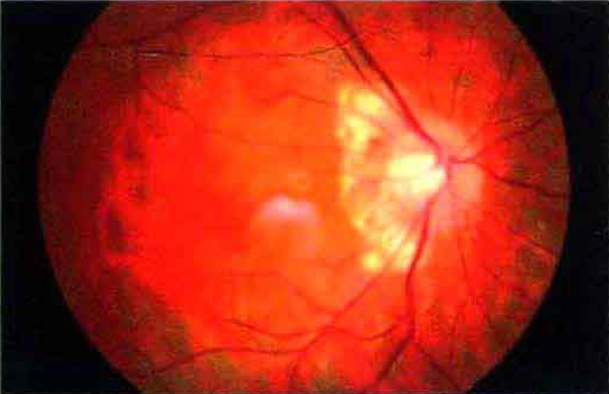
Original Description: Photocoagulation causing choroidal ischemia. Color fundus image of the left eye. The optic disk and vessels are normal. Curved strips of choroidal vessels and scattered pigmented spots are seen at the posterior pole.
Extracted Keywords: acute blind spot enlargement syndrome, color fundus image, right eye, edema o
Generated Report:
Detailed Retinal Fundus Image Report
Patient Information: - Name: [ (Not Provided)] - Age: [ (Not Provided)] - Gender: [ (Not Provided)]
Image Date: [ (Not Provided)]
Examiner: [ (Not Provided)]
---
1. Optic Disc: - Description: The optic disc appears slightly elevated with blurred margins, indicative of potential disc edema. The color of the disc is relatively pale, and the blood vessels on the disc are dilated. - Assessment: The characteristics suggest disc edema, which may be associated with increased intracranial pressure or other optic neuropathies. Closer clinical examination and further diagnostic tests are warranted.
2. Macula: - Description: The macula appears to be slightly obscured, potentially due to hemorrhage or exudates. - Assessment: Given the possible obscuration, conditions such as diabetic maculopathy or age-related macular degeneration should be ruled out. Fluorescein angiography might be beneficial for further evaluation.
3. Retinal Blood Vessels: - Description: The retinal blood vessels are tortuous and dilated. There appears to be vascular sheathing and localized areas of hemorrhage. - Assessment: These findings can be indicative of hypertensive retinopathy or central retinal vein occlusion. Systemic blood pressure monitoring and a complete blood panel may be necessary for a thorough systemic vascular assessment.
4. Retinal Background: - Description: The retinal background shows multiple areas of exudation with scattered bright, white lesions. Additionally, there are regions of hyperpigmentation. - Assessment: The presence of exudates and white spots may correspond to conditions like exudative retinopathy, Coats' disease, or infectious manifestations such as endophthalmitis or chorioretinitis. Imaging and blood tests assessing for infectious etiologies are recommended.
5. Cup-to-Disc Ratio: - Description: Cup-to-disc ratio appears reduced due to the disc swelling. - Assessment: Reduced cup-to-disc ratio is consistent with optic disc edema. Further evaluation to determine the etiology, whether it be glaucomatous, ischemic, or inflammatory, is essential. Neurological imaging might be necessary if increased intracranial pressure is suspected.
---
Summary of Findings: - Optic disc edema with blurred margins and pale coloration. - Macula partially obscured, need further angiographic assessment. - Tortuous and dilated retinal blood vessels with sheathing and hemorrhages. - Exudative retinal background with bright white lesions and hyperpigmentation. - Reduced cup-to-disc ratio due to disc swelling.
Recommendations: 1. Immediate consultation with an ophthalmologist for potential retinal and optic nerve pathologies. 2. Fluorescein angiography to further evaluate macular and retinal vascular abnormalities. 3. Systemic evaluation including blood pressure monitoring and blood tests. 4. Neuroimaging if increased intracranial pressure or other neurological causes of disc edema are suspected. 5. Follow-up appointments to monitor progression and response to any initiated treatments.
Prognosis: Dependent on the underlying etiology. Early detection and intervention are crucial to prevent further visual deterioration.
---
Report Prepared By: [ (Medical Assistant's Name)] [ (Date)]
Reviewed By: [ (Ophthalmologist's Name)] [ (Date)]
---
Note: This report is based on the image provided and should be corroborated with clinical findings and additional diagnostic tests.
Comparison Analysis (Generated vs Real Annotation):
The generated report and the real annotation have several important differences.
First, the generated report suggests potential disc edema, with slightly elevated, blurred optic disc margins and pale disc coloration. However, the real annotation states that the optic disk and vessels are normal.
Second, the generated report indicates a potential obscuration of the macula, possibly due to hemorrhage or exudates. In contrast, the real annotation describes curved strips of choroidal vessels and scattered pigmented spots at the posterior pole, suggesting choroidal ischemia caused by photocoagulation.
Finally, the generated report mentions tortuous and dilated retinal blood vessels with vascular sheathing and hemorrhages, while the real annotation does not mention these findings.
Overall, there are significant differences between the generated report and the real annotation. The generated report suggests disc edema, obscuration of the macula, and retinal vascular abnormalities, while the real annotation describes normal optic disc and vessels, and choroidal ischemia. These differences highlight the importance of relying on accurate clinical annotations for accurate diagnoses and treatment plans.